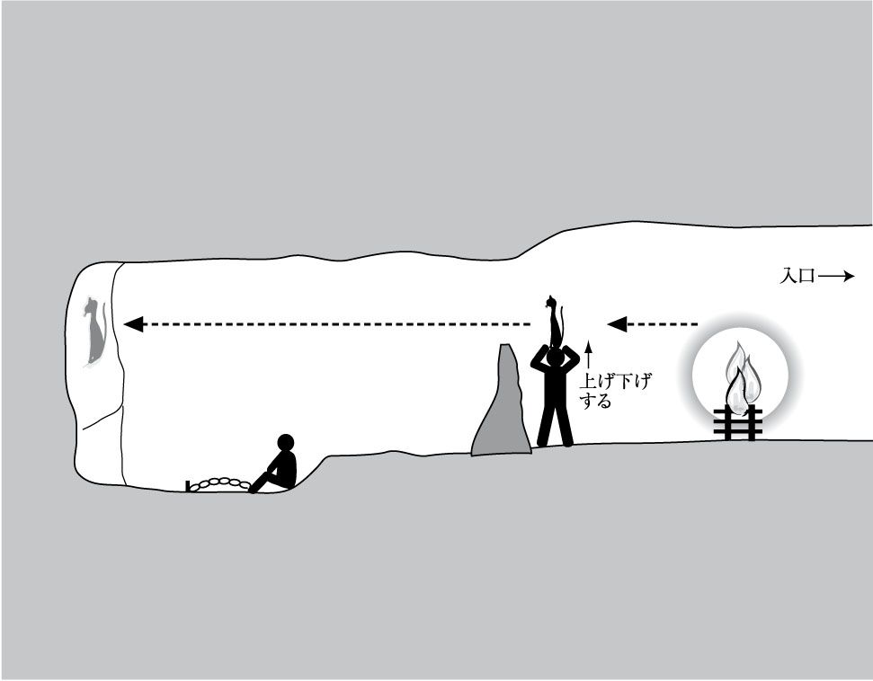

| 〈宗教化〉する現代思想 | |
| 仲正 昌樹 | |
| (2008) | |
目 次
「ネオリベ」って何？
最近、思想関係の本や雑誌で「ネオリベラリズム（新自由主義）」、略して「ネオリベ」という言葉をよく見かける。私は、この言葉が一部の社会学者や思想史家、評論家、ジャーナリスト等によって乱用され、何でもかんでもネガティヴに見える社会現象に「ネオリベ」というレッテルを貼る傾向があることにひどく違和感を覚えている。特に「ネオリベ化する公共圏」とか「ネオリベ化した世界」「ネオリベ的な日常」というような、いかにも思わせぶりな――その実、どういうことを指しているのかはっきりしない――言い回しが当然のごとく使われているのには閉口する。
「新自由主義」はもともと、公営企業体の民営化や規制緩和などを推進してできるだけ市場の自生的な秩序に任せようとする、一九八〇年代頃から台頭してきた経済政策上の傾向を意味する言葉として使われていた。政府の市場への介入の必要性を説いていたそれまでのケインズ主義的な考え方との対比において、「新」というわけである。この意味に限定した「新自由主義」を、民営化や規制緩和の是非をめぐる議論の文脈で用いるのなら、別におかしくはない。どういうことを指しているのか比較的はっきりしている。しかし、現代思想系の社会学者や評論家が「ネオリベ化する公共圏」とか「ネオリベ化した世界」などと言う時の「ネオリベ」は、明らかにそういう経済政策的な意味合いからはみ出している。
現代思想系の〝議論〟に出てくる「ネオリベ」という形容句は多くの場合、「新自由主義的経済政策」の〝背後にある（支配者側の）イデオロギー〟あるいは、それが〝（支配される側の）庶民の振る舞いに及ぼす影響〟を指している。つまり、新自由主義的な経済政策の是非というよりは、そうした政策を実行する〝支配者〟たち、あるいは〝権力〟が〝一般庶民〟をどのように管理し、操っているかを問題にしているわけである。「新自由主義」というのは、なるべく市場の自生的秩序に任せて政府の規模は小さくするのが効率的で良いとする立場のはずなので、その〝新自由主義〟を信奉する権力者たちが、庶民を計画的にコントロールすべく画策するというのは矛盾しているように思えるが、「ネオリベ」批判者たちに言わせれば、〝ネオリベの権力者〟たちは、庶民が逆らわないように予めマインド・コントロールしておいて、低コストで支配する術 をちゃんと心得ているようだ。
「ネオリベ」批判派の〝議論〟は、通常の以下のような形で展開する。新自由主義のイデオロギーは市場原理主義なので、不可避的に経済競争が激化し、貧富の格差が拡大する。福祉予算が切り下げられ、労働市場が自由化されているので、一度「負け組」になった人はなかなか復活できず、拡大した格差は固定化していく。新自由主義者たちは、「市場での自由競争は万人に対して開かれていて公正であり、敗れて『負け組』になるのは『自己責任』である」というイデオロギーを流布することにより、「負け組」の人たちが自信をなくすように仕向け、彼らの意識が反体制的な方向に向かわないように抑圧してしまう。それに加えて、至る所に監視カメラやＮシステムを配置し、ガーディアン・エンゼルや自警団のようなものの〝自発的〟な結成を促し、「常に監視されている」という意識を人々に「内面化」させる。学校では、愛国心・道徳教育、江戸しぐさのようなマナーの教育を通して、「負け組」階層の子供たちを自発的に体制順応する「主体」へと育成する。負け組意識と体制順応性を身に付けた若者たちを、日本の国益拡大のための自衛隊海外派兵の要員にする。派兵の結果、戦地で命を失った負け組の若者たちは、靖国神社・護国神社に国のために闘った「英霊」として祀られ、ナショナリズム高揚の象徴にされる。若者たちの死を悼む一般の庶民は、若者たちを死に追いやった国家を憎むのではなく、逆に「英霊」たちが命をかけて守ろうとした国家に対する帰依の心を強めていく......
という調子で、事態はどんどん悪化し、終末論的な破局へと向かって進んでいく。「ネオリベ」批判の人々にとっては極めてリアルな話のようだが、私には、風が吹けば桶屋が儲かる式の話にしか聞こえない。もともとの意味での「新自由主義」的な経済政策を信奉する政治家や財界人などが経済格差の拡大を当然のことと思っているとか、〝負け組〟の人々を見捨てているという〝だけ〟であれば、理解できない話ではない。
しかし、〝支配者〟たちが密かに共謀し、〝負け組〟の人々をコントロールするための緻密な計画を立てているかのような陰謀話になると、とてもついていけない。昔の『００７』シリーズに出てくる国際犯罪組織スペクターの会議のようなものをどこかでやっているというなら話は別だが、そんな証拠があるとは思えない。中央省庁、各大企業、地方自治体、警察、地域コミュニティなど様々な集合体が個別の判断でそれぞれの利益のためにやっていることを、強引に一つの「大きな物語」に組み立てている。仮にそういう壮大な陰謀が立てられているとしても、〝一般庶民〟がそれにまんまとのせられて、何の主体性もなく、〝支配者〟の都合のよい方向に誘導されるというのは無茶である。そもそも、〝支配者〟側にそれほど強力な洗脳技術があるのであれば、どうして「ネオリベ」批判派の人たちだけが正気でいられるのか不思議である。
魂が汚れている？
私のようなのがこういうことを書くと、必ずといっていいほど、反ネオリベ派の人たちから、「これこそネオリベの欺 瞞 の典型だ。盗人猛々しい」「あいつは現実が見えていない」などと罵倒される。別に、貧困問題や社会的な富の配分の公正さについて議論すること自体が悪いと言っているつもりはないのだが、〝ラディカルな反ネオリベ派〟にとっては、格差拡大の背後で進行している〝恐るべき事態〟の存在を認めないと、「現実」を見ていないことになるようである。活動家気取りのブロガーの中には、「大学教員なので、ネオリベ化しつつある現状に対する認識が甘いのだろう」などと決めつけるのがいる。こういうことを言う人たちは、三十代のフリーターの若者（？）だったら、「人々に負け組意識を植えつけ、若者を戦地に送り込む」ことを目論む政府や財界によるネオリベ的な陰謀や、自分と同世代の自分以外の若者（？）の「心の中に忍び込んでいる右傾化の罠」を見抜けるとでも言いたいのだろうか？
彼らの言い分を聴いていると、まるで「おまえは魂が穢 れているので、真実（オーラの光）が見えないのだ」と説教されているような感じがする。私の魂だけが穢れているのなら、多分その通りなので別にかまわない。しかし「恐るべき事態の進行」、「自らの（心の中の）右傾化の進行」に気付いていないのが、魂が穢れているせいだとすれば、新自由主義の大衆動員戦略によって踊らされ自分の首を絞めている――ネオリベ批判派以外の――〝一般庶民〟の大多数も、魂が穢れていて「真実（オーラの光）が見えていない」ということになるのではないか？ ネオリベ批判の現代思想家たちは、魂が穢れた衆生を覚醒させるために天によって召された選民（エリート）なのか？
疎外論とキリスト教
後で詳しく述べるつもりだが、かつてのマルクス主義的左翼の業界では、こうした「社会に蔓 延 しているイデオロギーによって幻惑されていて、真実が見えていない」式の言説は、虚偽意識論あるいは疎外論と呼ばれていた。資本主義社会の中で生きる人間は、イデオロギーによって心身共に汚染されて、真の「現実」を直視することができないまま、人間としての「本来の在り方」から外れている（＝疎外されている）。疎外されて虚偽意識に捉われている人は、機械の部品のようにルーティーン的に働き続けるだけで、全然生き生きしていない。革命のためにはまず、搾取されている労働者などを、真の「現実」に向けて覚醒させ、人間としての生き生きとした「主体性」を回復させねばならない、というのである。逆に言うと、「革命」とは人々を疎外された〝現実〟から解き放ち、真の「現実」に目覚めさせるための営みということになる。
新左翼の中には、疎外革命論を追求したグループもあったが、マルクス主義の主流派は概してそうした考え方に対して懐疑的だった。少なくとも現時点では普通の人間には目に見えない〝人間の真の姿〟のようなものを理想として追求し続けると、議論が次第に具体性を失って――マルクス主義は唯物論であるはずにもかかわらず――観念論的になっていき、最終的に宗教のようになってしまう恐れがあるからである。言い換えれば、虚偽意識論、疎外論にあまりにもはまってしまうと、批判している側が、批判されている側と同様（？）に、「自分以外の人はイデオロギーによって汚染されている」というイデオロギーに汚染されて、狂信者集団になってしまう恐れがあるのである。
人類の歴史が来るべき「共産主義社会」に向かって進んでいくことを信じて、プロレタリアート（労働者階級）主導革命という理想を実現しようとするマルクス主義は、その大前提からして観念論的、宗教的なところがある。「共産主義社会」の到来を、具体的なデータを挙げて証明することなどできない。これもまた後で詳しく述べるが、キリスト教文明圏の中で、キリスト教に対抗する無神論的な世界観の最もラディカルな形態として登場し、キリスト教との間でイデオロギー闘争を続けてきた――キリスト教の鬼子とも言うべき――マルクス主義の発想が、キリスト教あるいはキリスト教の影響を受けた観念論的な思想と構造的に似てしまうのは、ある意味当然のことである。実際、搾取のない「原始共産制社会」を喪失した人類が階級闘争のプロセスを経て「共産主義社会」に回帰するというマルクス主義の歴史観は、「エデンの園」から追放された人類が神と悪魔の間で展開される善悪闘争のプロセスを経て「楽園」に回帰するというキリスト教の終末史観によく似ていると言われている。
西欧のマルクス主義の理論家の中には、マルクス主義が観念の上で先鋭化しすぎるあまり、かえって先祖返りして、疑似宗教色を強めてしまうことに警戒感を抱く者も少なくなかった。真の人間本性、主体性への回帰を前面に打ち出す「疎外論」は、人類が罪を知らなかった「エデンの園」に回帰しようとするキリスト教の発想に先祖返りする危険を多分に秘めていたため、マルクス主義者の間でも警戒されていたわけである。キリスト教との因縁を意識していたマルクスや、彼に忠実なマルクス主義の理論家たちは、出来るだけブルジョワジー（資本家階級）とプロレタリアート（労働者階級）の間の政治経済的な利害対立という側面から「革命の必然性」を導き出そうとした――マルクス主義者でない者から見れば、「革命の必然性」を前提にしていること自体が十分に疑似宗教的であるわけだが。
マルクス主義的な歴史観自体がほぼ崩壊してしまい、そのオルターナティヴらしきものも登場していない現在のポストモダン状況においては、かつての「疎外論」のような形でのストレートな人間本性論は理論的に展開しにくい。「○○こそが人間の本性である」というようなタイプの主張を支えるために引き合いに出すことのできる〝理論的権威〟がなくなっているからである。一時は確かにマルクス主義系の人間本性論は影を潜めていた。
〝人間本性論〟の復活
しかし、〝理論的な権威〟が不在であるにもかかわらず、「格差社会」や「新自由主義」などの新たなかっこうの批判の対象が浮上してきたのに伴って、〝人間本性〟論が何となく復活している。それどころか、「これほどひどい格差の現状に対して怒りを感じて立ち上がらないのは人間としておかしい。心が歪んでいるのだ」式の、かなり素朴でむき出しの〝人間本性感〟が、政治的言説として通用するようになっている。そういう〝人間本性感〟を表明する人たちにとっては、「下流社会を生きる若者」「ネットカフェ難民」「派遣労働者」といった「苦しんでいる弱者」に共感して、彼らを苦しめる元凶である「ネオリベ的なもの」に対する〝激しい怒り〟を表明しない者は、人非人である。人非人が何を言おうと、「ネオリベの手先の苦しい言い訳」と見做される。
私のような〝魂が穢れ、真実が見えなくなっているくせに小理屈を言っている輩 〟からしてみれば、自分たちの「弱者への共感」を共有しない者を悪魔視したり、社会に起こるほとんど全てのネガティヴな現象を「ネオリベ的なもの」によって説明する態度は、マルクス主義以上に疑似宗教的になっている。マルクス主義の疎外論であれば、マルクス自身やその解釈者たちの「疎外」に関するテクストを参照しながら、その論理的な妥当性を吟味したり、理論の現実への適応可能性、解釈の多様性などについて、議論することができないわけではなかった。暴力革命を標 榜 する急進的なマルクス主義者たちは、暴力をちらつかせて高圧的であったが、暴力を正当化するための一応の「論理」はあった。
それに比べると、最近の〝ラディカルなネオリベ批判派〟は、暴力的ではなくなったので、その点だけは歓迎すべきであるが、その分、自分たちの〝ラディカルな実践〟を正当化するための論理を示さず、いきなり「共感」を求めるようになっている。「苦しんでいる人に共感すべき理由」も「苦しみの背後にある恐るべきネオリベの力を見抜くための方法」も示すことなく、自分たちが共感する〝苦しんでいる人たち〟の〝現実〟にだけ焦点を当てて、「これを見ても平気なのか！ まだこの苦しみを生み出している恐るべき現実が見えないのか」と情緒的に迫ってくる。まるで折 伏 である――などと表現すると、本当に折伏している人たちに申し訳ないか！
そういう調子なので、彼らがネオリベ的なイデオロギーの背後に見ている〝現実〟を見ることができない〝魂が穢れた者〟とは話が通じない。まるでラディカルな〝ネオリベ批判派〟の人たちだけで〝真実（オーラの光）を見ることができる選民たちの共同体〟を結成しているようである。（元）マルクス主義者を含めて日本の左翼の間では、マルクス主義的な左派の言説がキリスト教との相克関係の中で生まれてきたという意識が歴史的に希薄なせいで、「私たちは最初から既に宗教的なものとは無縁であり、私たちのような冷静な者たちの言動が宗教じみているはずがない」という楽観的な思い込みがあるように思われる。
右も左も
〝真実の光を見ることができる選ばれし者たちの結社〟のような物言いをしたがる傾向は、マルクス主義の解体で理論的な重しがなくなった状況にあって、「『ネオリベ＋改憲』の陰謀をめぐらせる右派によって我々は押されている」という〝危機感〟を強めている――あるいは、宣伝のためにそういうふりをしている――左派の側により強く見られる。しかし、押しているはずの右派の側にも、このところ「みんな左派に騙されて真実が見えなくなっている」式の言説が目立ち始めている。
右派の大学教授の中には、第二次大戦後の占領期に米軍の庇護の下に日本に持ち込まれた左翼思想、及び、その影響を受けて共産主義の教えを浸透させるべくマスコミやアカデミズムの中に入り込んだ左翼文化人（フランクフルト学派（？））によって、日本文化が内部から侵食され続け、民族精神が弱体化しているという論をまことしやかに展開している者がいる。フェミニストによる「ジェンダーフリー」思想のプロパガンダを、家庭崩壊、父性の衰退の元凶として過大評価する人たちもいる。「右」から見た「左」による「陰謀＋虚偽意識／疎外」論である。
私から見ると、左派やフェミニストの中に、素朴な〝人間本性〟感に基づいて無意味な〝ラディカリズム〟を振り回す者がかなりいるのは確かだが、そうした連中が日本人の大多数を洗脳して国を破壊する方向に誘導できる力を持っているとは思えない。そもそも、こうした〝ラディカル〟な主張をする右派の人たちは常日頃から、左派＋フェミニストを愚か者だとして非難しているが、どうしてそういう愚か者が、日本国民全体を洗脳できるのか？（ごく一部の〝真の保守〟を除く）日本国民はそれほど痴呆化しているのか？ 戦後日本の保守（右派）はもともと、マルクス主義志向の「左」の観念化したラディカリズムを常識によって教え諭すというスタイルを基本にしていたが、最近のウヨク知識人の中には、自分たちが批判するサヨクと同様に（？）、終末論的な善悪闘争史観にはまっているように見える者が少なくない。
右でも左でも、「この世界は悪に汚染されていて、みんな現実を直視できなくなっている。私たちのように既に真実の光を知った者が、人々に真理を伝えねばならない......」という調子で、啓蒙主義を通り越して、宗教とかスピリチュアリズムの域に達したかのような論調が目立っている。これで〝教祖〟を立てて、〝教義〟をまとめたら、本当に新興宗教である――実際、他薦自薦で救世主に祀り上げられかけている人は少なくない。思想系のシンポジウムやイベントなどでも、教祖扱いされている右や左の〝思想家〟の語る生き生きした〝真実の言葉〟の内容それ自体ではなく、その語り口や間の置き方、仕草、そして、自分と同じようにその〝思想家〟を純粋に信奉する者たちの〝共同体〟がかもし出す独特の雰囲気に、うっとりしてしまうようなファン＝信者が目立つようになっている。
サヨク・ウヨクと宗教
私がまだ大学院生だった十数年くらい前から、東京などの大型書店で、人文書コーナーが宗教・スピリチュアリズム・癒し系のコーナーと隣り合わせに配置される傾向が出てきた。最初は、無知な書店員が売るために下手な商売根性を出しているという感じがして何となく不快だった。しかし最近では、〝人文〟系のコーナーでも、陰謀論、誰も知らない真実、不安な世界を生きる道、世界を取り戻す、共感力......など、宗教・スピリチュアル的なものがメインになっており、中身的にも区別が曖 昧 になっているので、あまり違和感がなくなってきた。恐らく、ラディカルなウヨク、サヨクの双方が、相手方のせいで人文系書籍の文化が疑似宗教化していると思っていることだろう。
私の本を複数冊読んだことのある人にとっては既にお馴染みの話のはずだが、実を言うと、私は一九八一年四月から九二年十月まで十一年半、新興宗教である世界基督教統一神霊協会（統一教会）の信者であった。
そのせいで、私がサヨク、ウヨクの言説が疑似宗教めいていると指摘すると、必ず、「統一協会に十一年半もいたおまえにそんなこと言う資格はない！」とか、ひどい場合には「おまえまだ統一協会と繋がっていて、工作員やっているんじゃないか！」と分かったふうな口をききたがるサヨク、ウヨクが出てくる。工作員でないかと勘ぐる愚かな輩には何も言う気がしないが、「資格はない」という言い草に対しては、「自分自身が新興宗教の信者を長いことやって、ある程度の経験があるからこそ、（自分は宗教とは関係ないと思っている）サヨク、ウヨクの口調が無自覚的に疑似宗教化していくメカニズムがよく分かるということもある」と言っておきたい。もっとも私は十一年半を通してあまり模範的な信者ではなく、かなり反抗的な不信仰者であり続け、辞めると言い出した時も、あまり強く引き止められなかった。したがって典型的な元新興宗教信者として発言できるわけでもない。
もう少し「統一教会」――「統一協会」というのは、「宗教団体ではなくて、政治団体である」ことを強調するためのサヨク、ウヨクの反対派による略称である――での話に拘 ると、この教団は、自分たちこそが本来のキリスト教だと自負しているので、キリスト教の教えの基本について結構勉強する。また、マルクス主義を、神の摂理に反逆し続ける悪（サタン）の側の思想の最終形態だと認識していた――現在はどういう教えになっているかよく知らない――ので、マルクス主義のことも勉強する。頭でっかちの東大の学生信者だった私は、両方ともかなり興味を持って勉強していた――それで〝不信心者〟になったのかもしれない。そのおかげで、キリスト教とマルクス主義の深い関係については、その当時から関心を持っていたし、両者の相関関係についての研究書も読んでいた。
そういう私の目から見て、最近の少なくとも口先だけは〝ラディカル化〟している日本のウヨク、サヨクの言説は、キリスト教＝マルクス主義的な善悪闘争史観にだんだん接近して、疑似宗教化しているように思えてしかたないのである。かつての統一教会の内部の不信仰者として感じた、「本当に現実の世界はそうなっているのか？」という疑問と似たものを、彼らの「陰謀史観＋虚偽意識／疎外論」的な世界認識や、「『真実を知った者たち』から成る選ばれし共同体」を志向する態度の内に感じてしまうのである。そのことをご当人たちがほとんど自覚しておらず、むしろ「私（たち）の言動は全くもって客観的であり、宗教のような妄想を信じる下等な輩とは違う」という態度を取りたがるので、余計に苛 々 する。
ラディカルな共同体
無論、彼らが自分たちだけでそういう疑似宗教的共同体を作って自己満足してくれるのなら、別にそれで構わない。私は、自分がカルト扱いされている新興宗教団体を辞めたからといって、当の宗教団体を潰したいとは思わないし、他人様の信仰に干渉するつもりもない。どんな非常識な教えを持つカルトでも他人に具体的な迷惑をかけない限り、信仰の自由は尊重されるべきである。しかし、自分たちの〝教団〟の現実認識を否定するような発言をする者を、悪魔に取り憑かれた「人非人」と見做し、「おまえは魂が穢れていて、真実が見えないのだ」式の罵倒をされてはかなわない。ラディカルなサヨク、ウヨクの人々は、自分たちも「目に見えないもの」を信じている点では十分に〝宗教的〟であることくらいは自覚して、安易に他人に信仰を押し付けないように気を付けるべきである。
そこで、ようやくここからが本書の本題である。私の考えでは、人類にとっての普遍的な真理を追求し、それを誰にでも分かるような形で証明しようとする、あらゆる「哲学・思想」には、もともと（疑似）宗教的な共同体、「真実を知った者たちの共同体」を形成しようとする傾向がある。当然、これまでに誰も想像だにしたことがなかったような、ラディカル（急進的）で包括的な主張をして、新しい世界観を示そうとする「哲学・思想」ほど、その傾向が強くなる。〝すぐれた哲学・思想〟ほど、疑似宗教的になりやすいと言ってもよい。無論、〝本当にすぐれた哲学・思想〟であれば、自らが無自覚的に疑似宗教（形而上学）化していかないよう様々な自己制約を課すと共に、常に自己点検するはずである。そのように気を付けていても、〝すぐれた哲学・思想〟がいつのまにか疑似宗教化していることがあり、それを批判する形で新たな哲学・思想が立ち上がってくる。哲学・思想史はそうやって発展していくものだと私は考えている。愚か者は、そういうことを理解していないので、犬が生きのいい魚に飛びつくように、〝ラディカルに見えるもの〟、〝生き生きしているもの〟に飛びついては有頂天になる。そして、自分たちと〝真理〟を共有しようとしない者たちを、「人非人」として罵倒する。
本書の以下の各章では、プラトン以降の西欧の哲学・思想史において、〝すぐれた哲学・思想〟と思われているものが、どのような形で疑似宗教（形而上学）化の危険と隣り合わせにあり、そのことが哲学者・思想家自身によってどのように問題化され、論じられてきたか、特に現代思想に強い影響を与えているハイデガー、ハンナ・アーレント、デリダなどを参照しながら概観することを試みる。そうした私なりの思想史解釈の作業を通して、今の日本の現代思想業界に、〝生き生きとしたラディカルな思想〟を中心とした「真の共同体」を求めるかのような風潮が生じている背景について考えてみることにしたい。
そうした考察の中で、私の新興宗教体験についても〝少しだけ〟参考のために触れることにする。本格的に自分の体験を語れという物好きな読者もいるかもしれないが、本書は宗教自体ではなくて、「現代思想の疑似宗教化」をテーマにしているので、〝少しだけ〟にせざるを得ない。読者からの要望が多いようだったら、私なりの新興宗教観をメインにした本を改めて書くことを検討するのもやぶさかではないが、週刊誌によく出ているような、〝ありがちの話〟を期待する低レベルの要望に応えるつもりはないので予め断っておく。
ただ、既に示唆したように、本書で私が述べていることのかなりの部分は、統一教会の中の不信心者であった頃に考えていたこと、その当時感じていた疑問の延長線上にあるので、本書全体が間接的に私の新興宗教体験の決算的な性格を持っていると考えてもらってもいい、という気もする。
「哲学」と「宗教」
「宗教」と「哲学」はどこが違うのか？ 仏教哲学とかイスラム哲学のように、宗教と哲学が分かちがたく結び付いている場合もあるので、そもそも違うのかという疑問もあるが、西欧における「宗教」と「哲学」の違いは比較的はっきりしている、ということになっている。
「宗教」が人生や世界についての深淵な問いに対して究極の「答え」を示し、それを「信ずる」ことを要求するのに対し、「哲学」はむしろ人々が常識として無条件に信じているようなことを疑問に付し、どこまでも「問い」の可能性を開くことを特徴とする。もっと簡単に言うと、信じようとする「宗教」に対して、疑おうとする「哲学」という対比になるだろう。（信ずる者にとっての）「魂のやすらぎ」とか「心の平穏」という形での安定性をもたらそうとする「宗教」に対して、安定性を根底から揺り動かす「哲学」という言い方をしてもいいだろう。西欧哲学史において哲学者の原型と目されるソクラテス（紀元前四七〇／四六九‐三九九）による常識的な知に揺さぶりをかける「問答法」や、近代哲学の始祖とされるデカルト（一五九六‐一六五〇）の疑い得るものを全て疑おうとする「方法的懐疑」は、「疑う哲学」というイメージの典型である。
こういう説明をすると、西欧では両者の区別は簡単であるようにも思えるが、実際には、そうでもない。「宗教」が「哲学」に接近することがある。哲学史・世界史の教科書に出てくる中世のスコラ（学校）哲学というのは、キリスト教の教えが、「理性的な人間であれば、必然的に到達するはずの絶対的な真理」であることを〝確認〟するための営みであった。そのため神や世界の本質について、信仰それ自体から少し離れて、自由に思考する余地が与えられた。例えば、「実在論 唯名論」という形で展開された「普遍論争」――「普遍論争」そのものについては、山内志朗『普遍論争』（平凡社）等を参照――のように、別にキリスト教信者でない人間にとっても十分に示唆的な哲学的な議論が、一応信仰という名目の下になされることもある。
唯名論」という形で展開された「普遍論争」――「普遍論争」そのものについては、山内志朗『普遍論争』（平凡社）等を参照――のように、別にキリスト教信者でない人間にとっても十分に示唆的な哲学的な議論が、一応信仰という名目の下になされることもある。
その逆もある。信仰を前提にしていない哲学的な議論だったはずのものが、いつのまにか特定の信仰あるいは信念のようなものにはまっていき、〝真理〟を固定化してしまう現象である。そうなってしまうのは、ある意味、当然のことである。何故かというと、「哲学」が常識を疑い、常に「問い」を発し続けるのは、「哲学」が純粋な「真理を求めている」からである。最初から〝絶対的なもの〟を信奉する「宗教」と違って「哲学」は、自らが「真理」を最終的に把握できるという前提に立つことはできないが、「真理」に近付きたいという欲求は絶えず抱いている。
二〇世紀ドイツの有力な哲学者で、戦争責任をめぐる戦後（西）ドイツでの議論をリードしたことでも知られるヤスパース（一八八三‐一九六九）は、「哲学」の本質について以下のように述べている。
哲学者（philosophos ）というギリシア語は、学者（sophos ）と対立する言葉であって、知識をもつことによって知者と呼ばれる人と異なり、知識（知）を愛する人を意味する言葉であります。この言葉の意味は現在まで維持されてきております。すなわちそれは独断主義の形態、換言しますと、いろいろな命題として言い表わされた究極決定的な、完全な、そして教訓的な知の形態、をとることにおいて、しばしばこの言葉の意味を裏切っているのでありますが、哲学の本質は真理を所有することではなくて、真理を探究することなのであります。哲学とは途上にあることを意味します。哲学の問いはその答えよりもいっそう重要であり、またあらゆる答えは新しい問いとなるのであります。
（草薙正夫訳『哲学入門』新潮文庫、一五頁以下）
ここでヤスパースが述べているように、「哲学」は常に「真理」への探究途上にあり、「究極決定的、完全な、そして教訓的な知の形態」に至ることはないはずであるが、探究の成果として一定の〝答え〟を得てそれに自己満足すると、そこから更に「新たな問い」を引き出そうとすることなく、そこに安住してしまうことがある。その〝答え〟が暫定的なものではなく、「究極決定的、完全な、そして教訓的な知の形態」であるかのように振る舞い始める。更に探究を続けるよりは、既に「真理」を所有していることにした方が、もう努力しなくてもいいので楽であるし、その方が他人から尊敬を集めやすい。
「哲学者」の傲慢
周知のように、大学などで〝哲学〟を教えている教師や、〝哲学〟についての本を書いている著述家は、自分が何らかの形で「究極決定的、完全な、そして教訓的な知の形態」を所有しているかのような態度を取りたがる。「私もまた探究途上にあります。本当のことは分かりません」などと言って、常識を疑わせる疑問を連発して、何を言いたいのか分かりにくい「哲学者」よりも、既に〝究極の答え〟に辿りついて悟っているような顔をしている「学者＝ソフィスト（弁論家）」――〈sophist 〉というのは〈sophos 〉の英語形である――の方が、学生や読者にとっては付いていきやすい。私も大学での授業やこういう本を書く時は、ソフィスト的な気の使い方をしている。
これは、必ずしも私のような低レベルの似 非 哲学者に限った話ではない。現代ドイツの代表的な哲学者ガダマー（一九〇〇‐二〇〇二）や、フランス現代思想の旗手デリダ（一九三〇‐二〇〇四）等によって示唆されているように、「哲学」がある特定の著者によって書かれた一つの完結したテクストとして自己を呈示している以上、〝真理への無限の探究〟をいったん打ち切って、意味のある〝結論〟に到達しているという形を取らざるを得ない。大学で「哲学概論」とか「哲学史」を講義するのであれば、その「概論」とか「史」が完結しているかのような構成にしなければならない。
プラトン（前四二八／四二七‐三四八／三四七）によってテクスト化された「ソクラテスの対話篇」を読む者は、どうしても――それが主人公であるソクラテス自身、あるいは著者プラトンの意図であるか否かは別として――ソクラテスが〝偉大な完成した哲学者〟として描かれているという印象を受けてしまう。デカルトの方法的懐疑の記録として書かれている『方法序説』（一六三七）を読む者も、著者デカルトは近代哲学を創始した〝偉大な完成した哲学者〟であるという先入観をもって読んでしまう。〝偉大な完成した哲学者〟であると思っていなかったら、そもそもそのテクストを読みはしないだろう。「常に完成途上にある（はずの）哲学」をテクストとして再構成することには、不可避的にそうした矛盾がつきまとう。
本当のすぐれた哲学者、あるいは、哲学的テクストのすぐれた読者であれば、「完結したものとして書かれたテクスト」の外観に囚われることなく、そのテクストの「終わったところ＝結論」から、すぐに新たな「問い」を立てることだろうが、そうでない者は、テクストの外観によって幻惑されてしまう。自らが哲学者になろうとしていない読者の中には、〝偉大な完成した哲学者〟の信者になってしまう者が少なからずいる。特定の〝偉大な哲学者の教え〟を絶対視するファン・クラブは存在自体が自己矛盾している。哲学者の中にも、自らが構築した〝完成したテクスト〟によって自己暗示にかけられ、ソフィストになり下がってしまう者がいる。
更に言えば、自分でも気がつかないうちに、疑問に付してしかるべきことを、疑う必要のない〝自明の理〟と見做してしまう〝哲学者〟がいる。例えば、『方法序説』でデカルトは疑い続けた末に、「疑っている私が存在していることは疑い得ない」という結論（真理）に到達したという構成になっているが、その場合の「存在している」というのはどういうことなのか『方法序説』だけからでははっきりしない。
同じ「存在する（有る）」という言葉を使っていても、「私の目の前にパソコンが有る」という時の「有る」と、「私の預金口座に○○○円の金が有る」という時の「有る」では、意味が異なっている。「私の記憶の中に有る」とか、「私のイメージの中に有る」という場合の「有る」なども視野に入れると、「有る」という言葉にいろいろな意味の層が〝ある〟ことが分かってくる。「疑っている私（という意識）が有る」という場合の「有る」と、「パソコンが（目の前に）有る」の「有る」を同じレベルで扱うわけにはいかないだろう。実際、こうした「有る」の多義性をめぐって、カント（一七二四‐一八〇四）、フィヒテ（一七六二‐一八一四）、ヘーゲル（一七七〇‐一八三一）、シェリング（一七七五‐一八五四）、ハイデガー（一八八九‐一九七六）など、ドイツ哲学史でお馴染みの哲学者たちがかなり難しい複雑な議論を展開することになる。
デカルトの「有る」の場合のように、誰か別の「哲学者」が後を引き取って、その哲学者のテクストで〝自明の理〟として扱われていた事柄を新たに疑問に付してくれればいいわけだが、誰も疑ってくれなかったせいで、いつのまにか〝偉大な哲学者の発見した普遍の真理〟になっている事柄もある。哲学の歴史には、「探究途上にある未完成の哲学」を完成したものと見做し、擬似信仰の対象にしてしまう罠がたくさん潜んでいる。
「形而上学」とは？
西欧の哲学史で、自然とか宇宙全体の本性といったような、人間の知覚によって直接的に認識することがそもそも不可能であるようなものをめぐる議論のことを「形而上学metaphysics 」という。この名称はもともと、紀元三〇年頃に編集されたアリストテレス（前三八四‐三二二）の著作集において、「自然についての書 ta physica 」の「後にmeta 」配置された、一連のテクストを指すものであった。これらのテクスト群が、知覚で直接捉えられない、超自然的もしくは超越的な問題を扱っていたことから、この〈meta 〉という前置詞のもう一つの意味である「～を超えて」をも読み込む形で、「形而上学metaphysica 」は、超自然的あるいは超越的な問題をめぐる哲学的な議論一般を指す言葉となった。
こういう言い方をすると、抽象的で難しい話のようだが、要は「目に見えないもの」、したがって「本当のところどうなっているのか確かめようのないもの」についてあれこれと思案をめぐらすということである。「神の存在は証明可能か？」とか「人間に自由意志はあるのか？」といった類の問いがその典型である。
「哲学者」を含めて圧倒的多数の人が宗教的・神話的な世界観の中で生きていた古代・中世の社会においては、神や天使の本性とか、「魂」の不死性、死後の世界など、現代人から見ると、特定の宗教を信じていない限りあり得ないような「問い」、教理問答にしか見えないような問いが哲学の言説の中に多く入り込んでいた。
今から考えると、神や天使の存在を疑わないどころか、前提にして話を進めようとする態度は極めて非哲学的に思えるが、哲学者があらゆることを問いに付すといっても、自分の生活感覚の中で常識になってしまっている「全て」を一度に疑うことなどできない。一つ一つ気が付いたところから疑うしかない。現代人から見ると、まっさきに疑うべきことが、自明の理になっていることがしばしばある。その意味で、古代・中世では、「哲学」と「宗教」の境界線に――現代人の目から見て――曖昧なところがあった。
近代に入って、社会全体として宗教的な世界観の影響が弱まってくると、当然のことながら、神とか天使のような（現代人である我々から見て）あからさまに形而上学的な問いは次第に「哲学」から消えていく。加えて、「哲学は合理的でなければならない」という考えが浸透するにつれ、哲学者たち自身が、自らの議論から形而上学的な要素を意識的に排除しようとするようになった。西欧近代哲学の歴史は、哲学的思考の中に残存する宗教的・神話的世界観の遺物としての「形而上学」を除去しようとする闘いの歴史であると見ることさえできる。
特に唯物論・無神論の立場を鮮明にしているマルクス主義及びその系譜を引く左派的な思想や、一義的に定義できない曖昧な概念を哲学の言語から排除しようとする傾向の強い英米の分析哲学などにおいては、「形而上学」は明晰で批判的な思考を進めるうえで克服すべきものの代名詞になっている観がある。マルクスの盟友であったエンゲルス（一八二〇‐九五）は、「形而上学」を、現実世界での経験的な観察によらずに、ひたすら思弁を重ねることによってのみ「物」の本性を探求しようとする静的な態度と見做し、その非生産性を批判している。
形而上学は排除できない!?
ただそうはいっても、実験とか経験的な観察によって直接確認できないものを全面的に排除してしまったら、直接知覚することのできないものについて思考をめぐらしながら、究極的に確定するのは不可能な「真理」を探究する「哲学」という営み自体が不可能になってしまう。
分かりやすいところから言えば、「善／悪」「正義」「自由」などをめぐる倫理・道徳に関する議論は、「善」とか「悪」という性質をもった〝もの〟が自然界に実在しているわけではなく、私たちの各々に善／悪のいずれかを実行するよう指令（コマンド）を出すプログラムのようなものが内蔵されているわけでもないので、〝実証〟のしようがない。みんなの〝合意〟に基づいて、何が「正義」であるか決めるようにすればいい、という考え方もあるが、何をもって〝合意の成立〟と見做すのかが自動的に決まってこないし、そもそも「『みんなの合意＝正義』と見做すべきである」ということは〝実証〟できない。
また、分析哲学などが形而上学を極力排除した合理的な論理体系を構築しようとしても、一番肝心の「何が合理的なのか？」「論理的に首尾一貫しているとはどういうことか？」「何を真理と見做すか？」「どういう証明が正しい証明か」「曖昧／明晰の区別はどこにあるのか？」......といった問題については、〝実証〟的な答えを出しようがない。こうした問題まで〝形而上学〟だとして排していったら、あらゆる哲学的な命題は、形而上学の上に成り立っている砂上の楼閣ということになってしまう。
特にマルクス主義の唯物論、弁証法的唯物論のように、「物質」の運動法則に従って「歴史」が発展していき、未来において社会主義革命を経て「共産主義社会」が到来するなどと論じるのは、信仰心の篤いマルクス主義者以外の者にとっては、「終末」の時に「神の国」が到来するというキリスト教の形而上学と大差ない。マルクス主義は、古代ギリシア哲学やキリスト教などを起源とする形而上学的な思考を「観念論」と呼び、その遺産を一掃しようとしてきたが、その一掃作業に熱心になりすぎるあまり、歴史の発展法則とか人間の本質、価値の源泉など、不可避的に形而上学的な前提に依拠せざるを得ない問題を、強引に（観念ではなく）「物質の運動法則」として説明しようとした。そのため、「物質」を、宇宙の全ての秘密を秘めた形而上学的な存在、万物の母胎のような不可思議な存在として祀り上げてしまうという逆説的な事態に陥った。
これは狭義の哲学・思想に限った問題ではない。俗流の精神分析や社会心理学に基づいて、「全て」を性欲とか動物的な本能で説明しようとしたりする場合も、性欲とか本能などを超自然的な不可思議な力にしてしまうことになる。金持ちとか権力者の行動の全てを、貨幣所有欲とか権力欲で説明し切ろうとすると、貨幣所有欲とか権力欲が、人間の行動を本人の意志を超えて背後から操る悪魔の力のようになってしまう。複雑な社会現象を、「抽象的で分かりにくい形而上学的な前提なしに、誰にでも直観的に分かる『即物的な原理』によって単純明快に解明すること」を真面目に試みると、その〝即物的な原理〟が形而上学的な〝神秘の力〟に変質する危険が高くなる。シンプルで分かりやすい「答え」を早急に求める態度は、「形而上学」を生み出しやすい。
序章で述べたように、「ネオリベ的なもの」を、分かりやすい即物的な理屈によって速攻で説明し批判しようとする左派の言説は、「ネオリベ的なもの」を不可思議な力によって日本人の心に侵入する悪魔のような形而上学的存在にしてしまっているきらいがある。「哲学者」というのは本来、政治家とか個別分野の専門家などが速効的な「答え」を求めるあまり、意図せずして新たな形而上学を生み出してしまうことに対して、警告を発すべき立場にあるはずである。しかし、有名な〝哲学者〟の中には、人々を啓蒙的に導こうとするあまり、率先して分かりやすい「答え」を示して、自ら形而上学の教祖になってしまう者が少なからずいる。
ハイデガーと形而上学
二〇世紀において最も影響力を及ぼした哲学者の一人であるハイデガーは、プラトン以来西欧世界を支配してきた形而上学、そして、その変種であるデカルト以来の近代的形而上学を「解体 Destruktion 」することを目指したとされている。では、ハイデガー自身の哲学は形而上学を排したものになっているかというと、決してそんなことはない。主要著作である『存在と時間』（一九二七）などを実際に読んでみればすぐに分かるように、「存在それ自体」「実存」「歴史的運命（歴運）」「良心の呼び声」「覚悟性」「真理」......など、知覚によって確認することなどできるはずのない形而上学的な〝もの〟をめぐる話だらけである。
ハイデガーによるプラトン以降の形而上学の「解体」の試みというのは、一切の形而上学的なテーマを排除するということではなく、「プラトン的な形而上学」というのがどういう性格の「形而上学」であるのか、どのようにしてそれが西欧の哲学・思想、延 いては、知の在り方を規定してきたのか、その原点にまで遡 って探究し、その正体を露呈しようとする営みである。そういう場合の「形而上学」というのは、プラトンが神とか魂について何を語ったかとか、デカルトが精神と物質の関係についてどのような理論を持っていたかというようなことではなく、その文化圏に生きる人々の物の見方、世界認識、知のあり方などを根底において規定する基本的枠組みを意味する。プラトンやデカルトの哲学的言説は、そうした意味での形而上学を代表する著作ではあるが、「全て」ではない。
普通の人々の認識枠組みとしての「形而上学」は、別に難しい本を読まなくても、慣習とか会話とか様々な形で伝播・継承されていく。プラトンやデカルトのテクストを直接読んだことがなくても、彼らの名前によって象徴される「形而上学」に拘束されているということは十分にありうる。むしろ、哲学的書物なぞほとんど読んだことがなく、そのためどこかで「形而上学」の影響を明らかに受けたという自覚がない人の方が、自覚がない分だけ強く拘束されているということがしばしばある――日本には、この点を理解しないで、「日本人である私たちは西欧の哲学者である○○の本など満足に読んだことがないので、○○の影響など受けているはずがない」と豪語したがる困った人が多い。「～学」という言い方をすると、テクスト化された理論のことだけのような印象を与えるので、人々の思考様式を規定している「超自然的な前提」とでも言った方がよいかもしれない。
ハイデガーは、プラトン以降の西欧的な知のあり方を支配してきた――と少なくともハイデガーが考える――「形而上学＝超自然的な前提」の正体を明らかにし、〝自分たち〟がこれまで拠って立っていた基盤をはっきりと自覚することで、それとは異なる新たな「形而上学＝超自然的な前提」への道を開こうとしたわけである。自分たちを規定するものを知ることが、それとは異なる〝何か〟の可能性を知ることに繋がるわけである。
ハイデガーの影響を強く受けたデリダによる伝統的な形而上学の「脱構築déconstruction 」の営みも、基本的には同じことである。「脱構築」とは、あらゆる「形而上学」からの最終解脱を図ること――それは不可能である――ではなくて、自分たちが拠って立っている「形而上学」の「限界」を知ることを契機として、その「限界」の向こう側、つまり〝新たな形而上学〟への移行の余地を生み出す試みなのである。
こういう抽象的な説明をすると、読者は当然、「では、ハイデガーやデリダが『解体』あるいは『脱構築』しようとしたプラトン以降の西欧の思考様式を規定してきた形而上学とはどのようなものなのか？」と疑問を持つことだろう。もっともな疑問ではあるが、それをきちんと説明しようとすれば、それだけでかなりぶ厚くて難解な本が一冊書けてしまう。ただそれで打ち切ってしまうと、誤魔化したような感じになるので、ここではとりあえず、プラトン的な形而上学の一つの側面として、「精神／物質」の二項対立図式があることだけ指摘しておきたい。「二項対立 dichotomy 」というのは、「精神／物質」「善／悪」「内容／形式」「男性的なもの／女性的なもの」「右／左」......のように、物事を二つの極に分解し、その極のどちらに近いかによって個別の物事を位置付け、理解しようとする思考パターンのことである。
この方面の専門家に叱られるのを承知でかなりラフな言い方をすれば、プラトンのテクストにおいては、「イデア（理念）」の世界に属する「魂」と、「魂」の仮の入れ物である「身体」とが対比され、前者が後者よりも価値あるもの、より本質的なものと見做されている。これが「精神／物質」の二項対立思考の原点とされている。デカルト以降の近代哲学は、これを「認識する主体」と「認識される客体」という二項対立と結び付け、「精神＝主体／物質＝客体」という想定に基づく世界観を構築してきた。
二項対立と形而上学
プラトン＝デカルトの西欧形而上学の影響を受けている人たちは、「精神／物質」の二項対立図式を暗黙の前提にして思考しているので、「人間の意識（精神）と身体（物質）はどのようにして相互作用し合っているのか？」「主体（精神）は、自らの外部にある〝もの〟（＝物質）をどのように認識するのか？」「主体（精神）は、物質的なものの影響から自由に思考することができるのか？」「主体（精神）は自分の身体を完全に制御することができるか？」「物質である身体に、どのようにして精神が宿るのか」などという問いが哲学的に意味を持ってくる。西洋哲学史の教科書には、こうしたパターンの問いがたくさん出てくる。
こうした二項対立的な問いは、我々が二項対立図式自体に疑問を持つと、果たして意味があるのか怪しくなってくる。「『精神』と『物質』、あるいは『主体』と『客体』は、果たしてそのようにきれいに分離されているのか？」「そもそも『精神』とか『物質』と我々が呼んでいるものに実体はあるのか、我々が勝手にそのような二種類の〝もの〟があると思い込んでいるだけではないのか」といった疑問である。
そうした疑問を持ち、この二項対立図式を打破しようとした哲学者・思想家は、当然のことながら、ハイデガーやデリダ以外にもたくさんいたが、多くの場合、単に疑問を表明しただけで終わってしまう――日本にも、「『精神／物質』の二項対立図式がおかしいことくらい言われなくても分かっている」と豪語する〝素人哲学者〟は結構たくさんいるが、彼らは単に疑問を表明するだけで、その後の議論を展開することができない。「では、精神／物質の二項対立図式抜きで、どのように世界を理解したらいいのか？ 主体である『私』が、私の意識の外部に存在する〝もの〟を客体として認識しているのでないとしたら、どのように考えたらいいのか？」という脱プラトンな問いにまともに答えられる哲学者、あるいは、答えることを本格的に試みたと言える哲学者は、ほとんどいない。ああでもない、こうでもないと不毛な思案を重ねた挙句、結局、もとの二項対立図式に戻ってきてしまうパターンになりがちである。
マルクス主義などの唯物論の思想は、「精神が主体で、物質は客体にすぎない」というプラトン＝デカルト的な形而上学に基づく〝観念論的な哲学〟を批判し、むしろ、物質によって意識（精神）が規定されていると主張したが、それだと、「精神／物質」の関係を逆転させただけであって、「物質」と「精神」を区別する二項対立図式であることに変わりない。しかも、我々の内面における意識の働き、法、政治、文化、歴史の発展法則など、〝精神的なもの〟全てが、「物質の運動」によって規定されているということにすると、既に示唆したように、〝万能の物質〟を崇 める疑似宗教のようになってしまう。〝精神的なもの〟を崇める傾向のあるプラトン＝デカルト的な形而上学と実質的に変わりないどころか、余計にひどいことになる。
ラディカルな〝フェミニスト哲学者〟の中には、「精神＝主体／物質＝客体」の二項対立図式は、「男性」を「精神的で主体的なもの」、「女性」を「物質的で客体的なもの」と見做す、男性中心主義の思想、「男性的なもの／女性的なもの」の二項対立と結び付いていると主張する者がいる。また、ラディカルなカルチュラル・スタディーズとかポストコロニアル・スタディーズの研究者の中には、「精神＝主体／物質＝客体」の二項対立図式は、「西洋世界」を「精神的で主体的なもの」、「非西洋世界（東洋）」を「物質的で客体的なもの」と見做す、西洋中心主義の思想、「西洋／非西洋（東洋）」の二項対立と結び付いていると主張する者がいる。
いずれの主張も、それぞれの視点から興味深い議論を展開しているが、哲学的に見れば、「精神＝主体／物質＝客体」の二項対立図式が、男性中心主義とか西洋中心主義と結び付いてしまうとまずいことを指摘しただけで、二項対立図式の解体には至っていない。ややもすると、「男性的なもの」より「女性的なもの」の方がより本質的であるとか、「西欧的なもの」より「非西欧的（東洋的）なもの」がすぐれているとかいう〝ラディカルな話〟をし始める傾向がある。そうなると、「精神＝主体＝女性的なもの／物質＝客体＝男性的なもの」、あるいは、「精神＝主体＝非西洋的（東洋的）なもの／物質＝客体＝西洋的なもの」という転倒した二項対立図式を作り出すだけで終わってしまう。「男性崇拝」に代わる「女性崇拝」、「西欧崇拝」に代わる「非西欧崇拝」の疑似宗教になってしまうかもしれない。
二項対立を超える〝二項対立〟
このようにプラトン＝デカルトの二項対立を真正面から――〝二項対立的〟に――批判する戦略とは違って、西欧の神秘主義とか、西田幾多郎（一八七〇‐一九四五）などの仏教系哲学のように、「『精神／物質』の二項対立（二元論）の更に根底には、両者を含めて全てを生み出す母体である絶対的な無（深淵）が〝ある〟」と主張する論法もあるが、こういうのはもろに、宗教的な信念の表明であって、哲学的な議論ではない。宇宙の原初において「精神／物質」を超えた「絶対無」のようなものが「ある」としても、そこから「精神」や「物質」に当たるものが生じてくるメカニズムを説明しようとすれば、古代の神話と同じような素朴に形而上学的な話をするしかない。そうした神話的なものに先祖返りするような論法が哲学としてはあまり説得力のあるものにならないことは、シェリングなどの西欧近代の神秘主義哲学者たちによって〝実証〟ずみである。
ハイデガーやデリダは、そうした数々の失敗を踏まえたうえで、プラトン＝デカルト的形而上学から脱出するための隙間を見つける困難な作業に取り組んだわけである。無論、そうした作業に自覚的に従事したハイデガーやデリダ自身の試みが、当人たちの〝意図〟に反して、マルクス主義やラディカル・フェミニズム、神秘主義と同じような奇妙な隘 路 にはまり込んでしまって、二項対立図式を強化している可能性はある。彼らも〝形而上学〟を完全に超越した「外部」に立っているわけではないので、その可能性は払拭しきれない。彼らの試みが生産的であるか、袋小路に入っているかは、それぞれの読者が、彼らのテクストを――安易に読み飛ばしたりしないで――よく読んで、「哲学」的に判断するしかない。
「哲学」のコミュニケーション
ここまで述べてきたように、「哲学」は「形而上学」とうまく付き合わないと、疑似宗教的な思い込みに変質してしまう恐れがあるわけだが、それ〝だけ〟だと、まだ害は少ない。自分の頭の中で古代形而上学的な妄想にふけっているだけなら、他人に迷惑はかけない――完全に狂ってしまったら、知らない内に周囲の人に迷惑をかける可能性はあるわけだが。
本当の問題は、自分の形而上学な思い込みを〝真理〟だと勘違いした〝哲学者〟が、頼まれもしないのに、それを周囲の無知で可哀相な人々に伝え、彼らを〝救って〟やろうとすること、言い換えれば、自分を中心（教祖）とする〝真理を共有する共同体＝教団〟を結成しようとすることである。もっと簡単に言うと、「哲学者」というより、お節介で啓蒙主義的な「思想家」もしくは「活動家」になってしまうということである。
「哲学」は基本的にはあくまでも、自分の理性だけを頼りに自律的に思考する営みであるので、自分が〝真理〟だと思ったものを、わざわざ他人に伝えようとするのは余計なことであるように思える。「哲学者」は、説教師でも宣教師でもない。しかし別の面から見れば、「哲学者」が自分の頭の中で考え出した〝真理〟への筋道に論理的な錯誤があるかないかをチェックするには、自分以外の他人の眼差しが不可欠である。自己チェックでは、論理的な錯誤がそのまま放置されてしまう恐れがある。
相互チェックのためには、他人との「言語」によるコミュニケーションが必要になる。プラトンの描くソクラテスは、自らの真理探究の道筋の正しさを確認するために、他の市民たちと様々なテーマでの「対話」を繰り広げる。「哲学者」が本を著わしたり、論文を書いたりするのは、少なくとも建前としては、明確に言語化することによって、他者のチェックを受けるためである。
しかし、そうした本来は「対話」であるはずのものが、時として〝布教〟になってしまう。ソクラテスの対話編を読めば、ソクラテスと対話相手が決して対等の関係にあるのではなく、既に真理に到達している〝知者ソクラテス〟が、拙い思考で自己満足している相手を導いているようにしか見えない。既に示唆したように、テクスト化された哲学は、どうしても著者が、読者を真理へと導いている導師のような構造になってしまうし、読者もそのつもりで読んでしまうことが多い。
読者・聴衆が信者的に振る舞うようになると、〝哲学者〟も勘違いしやすくなる。読者・聴衆からの批判によって、自分の考え方の筋道をチェックするのでなく、読者・聴衆の賛美を目のあたりにすることで、自分の〝正しさ〟を確認したつもりになる。それは本来、政治家とか芸能人、あるいは布教に勤 しむ宗教家などにとっての自らの活動の方向性の〝正しさ〟の確認の仕方であって、妥協なく真理を探究し続ける哲学者にとっての〝正しさ〟の確認の仕方ではないはずだ。しかしいったん〝哲学者〟と〝弟子〟の間で、共感する者たちの数によってその〝哲学者〟の〝正しさ〟を測ることができるという錯覚が成立すると、双方からの働きかけで、相乗作用的に錯覚が強まっていく。
ただ、そのようにしてできあがった〝哲学教団〟が、出入り自由のファン・クラブ的なものとして、私的な会合を重ねているだけだったら、それほど大きな害ではない。自分の意志で参加している人間たちが、疑似宗教化した似非哲学にはまって、自業自得でダメになっていくだけである。
危ないのは、そうした〝教団〟が、「真理を知った私たちの手で世界を救わねばならない」とか「私たちが知った真理に基づいて理想の世界（共同体）を作らねばならない」というような一人よがりの使命感、選民意識を抱いてしまって、信者でない人々を否応なく巻き込んでしまう、新興宗教めいた〝世直し活動〟を始めてしまう時である。
その典型が、言うまでもなくマルクス主義の運動である。「これまで哲学者たちは世界を解釈してきたが、重要なのは世界を変革することだ」というマルクスの言葉を絶対的な〝真理〟として受け入れ、彼の思想を信奉する人たちの集団は、理想の世界である「共産主義社会」を到来させるための革命活動を展開し、マルクス主義とは何の関係もない人たちをそこに巻き込み、多くの人の命を奪うことになった。思想史の教科書を繙 くと、「理想の国」建設運動に携わろうとした哲学者・思想家が数多 出てくる。
〝真理〟への願望
では、どうして「哲学＋思想」は、（自分が発見した）「真理」に基づいて「理想の世界」を作るなどという――新興宗教めいた――身の程知らずの願望を抱くのか？ 傲慢で身の程知らずの人間が、〝哲学者〟及びその〝信者〟になるのだから当然だ、と言ってしまえばそれまでだが、もう少しまじめな説明として、「哲学という営みが、伝統的な宗教の影響が弱まって不安が高まっている社会において、宗教に代わって、人々に真理、理想を提供し、少しばかり安心させる機能を担っているからである」、と言うことができるような気もする。
各個人が宗教的共同体にしっかりと組み込まれ、その共同体の中で真理と見做されているものをそのまま〝私の真理〟として堅く信じているのであれば、「真理」についての個人的な問いが生じる余地はない。真理探究の営みとしての「哲学」に人気が集まるということは、それまで社会的・宗教的に共有されてきた真理が見失われつつある状況の中で、人々が〝真理〟をもう一度見出だし、それを中心に社会的な絆を再構築したいという願望を抱くようになっていることを意味する、と考えることができる。
「哲学」に〝真理〟の新たな拠り所を求める人は、「哲学」が〝真理〟を再発見することを通して、現在失われてしまっている「全き（宗教）共同体」――そんな共同体がかつて本当にあったか確認することなどできないが――を回復してくれるのではないか、というユートピア的な期待を抱きやすい。
無論、人々が〝真理〟を与えてほしいという動機から「哲学」に関心を抱くようになることと、「哲学」の営みそれ自体とは別である。「哲学者」は、たとえ早急に〝真理〟を手に入れたいという欲望を周りの人、あるいは自分自身が抱いているとしても、その欲望を抑えて、自分が「これが真理かもしれない」と思っているものを常に疑い、吟味する姿勢を保持し続けるべきである。常に問い続けていたら、そう簡単に「真理に基づく理想の国」の建設には乗り出せない。しかし、そういうことをよく承知しているはずの〝偉大な哲学者〟でさえ、欲望を抑え切れずに、見切り発車してしまうことがある。
しかもややこしいことに、「哲学」の中でも、「政治」の本質を問う「政治哲学」や、社会的な正義の可能性を探究する「倫理学」のような分野では、「理想の共同体」の条件を問うことがしばしばある。そのことが、「真理に基づく理想の国」を実現したい人たちに勘違いさせてしまう。あまりにも当然のことだが、「理想の共同体」の条件を哲学的に問い続けたからといって、理想の共同体を建設するための具体的なプログラムのようなものをすぐに策定できるわけではない。哲学の探究の成果の一部を、政治家や社会運動家などが部分的に活用するということはあり得るが、そうした応用を哲学者自身が最初から目指すべきではないだろう。
しかし、「哲学」の役割について根本的に勘違いしている人は、政治哲学の本に出てくる「理想の共同体」の条件についての「問いかけ」を、著者である哲学者が到達した最終的な「解答」であるかのように誤解したがる。実践家としての「政治思想家」――私のように大学で「政治思想史」を教えているだけの教師は、自らが「政治思想家」であるわけではない――もしくは「社会思想家」であれば、特定の形而上学的な世界観を前提にして「理想の共同体」の建設に乗り出すということもありうるが、それは「（政治）哲学」の役割ではない。
〝実践家〟の問題
特定の形而上学的な前提に基づく世界観の実現にコミットしている「実践家」は、「宗教家」への道を踏み出していると言える。「哲学者」が個人的に「実践家」を兼ねるということもあり得るが、形而上学的な世界観に対する距離の取り方で、二つの立場は明らかに異なるので、きちんと使い分ける必要がある。そうでないと、自らの「哲学」をずるずると疑似宗教化させていくことになる。日本の〝現代思想家〟あるいは〝現代思想研究家〟には、そのことを理解しないで、自分の都合やその時の気分で、中途半端に「哲学」と「実践」の間を行ったり来たりしているのが少なからずいる。
一つ余談を言っておくと、私が統一教会の信者を辞めた際、当時勤めていた統一教会系の新聞社の上司に、「教会を出て、何をやるんだ」と聞かれて、「大学院でドイツの思想史の勉強をやるつもりです」と答えたところ、「それはどうせ、信仰の代替物だろう」と言われたことを記憶している。私にはそんなつもりはなかったので、そう言われてもピンとこなかった。特定の宗教や世界観を「信奉」することと、哲学・思想を「研究」するのは全く別次元の話だと思っていたからだ。
ただ一般的に言って、ある宗教団体・共同体を辞めた後、心の空白を満たすためのオルターナティヴとして、他の宗教団体に行く人と共に、（宗教めいた雰囲気のある）哲学・思想に凝り始める人がいるのは確かである。その逆に、通常の哲学・思想では、「真理への欲望」を満足させることができなくて、宗教に入る人もいる。現代社会においても、宗教と哲学は結びつきやすい。
私は幸いなことに、統一教会を辞めた後、別の宗教に行こうとも統一教会に戻ろうとも思ったことはなかったし、特定の偉大な哲学者・思想家に個人的に心酔し続けることもなかった――そのせいで、「おまえは自分の研究対象である哲学者・思想家に対するリスペクトがない」と叱られることがしばしばある。
哲学が使う比喩
既に述べたように、「哲学者」がどんなに頑張っても、有限な存在である人間の言語を使って思考する限り、形而上学的な前提を全面的に排除することはできない。「精神」とか「物質」とか「真理」とか「正義」などの、それ自体としては知覚できないものが一応〝ある〟という前提に立たないと、他人に通じるような言葉で自分の思考を表現できないし、自分でも自分が何について考えているのか分からなくなってしまう。
そうした言語による制約のことを忘れて、ある哲学者の鋭い言葉によって「真理」が完全に表現され切ったかのように思ってしまうと、気付かない内に、特殊な形而上学の〝世界〟にはまってしまうということがある。特に「比喩」的な表現には要注意である。「比喩」的表現は、語った本人の本来の意図――そもそも「本来の意図」というべきものがあると仮定した場合での話だが――を超えて一人歩きし、信奉者たちの集団を大きくミスリードすることがある。この場合の「比喩」的というのは、修辞学などで厳密に定義される、狭い意味の「比喩＝文飾 trope 」ということではなく、実際に知覚することのできない抽象的な事柄を、分かりやすくイメージするための便宜的な表現一般のことである。
例えば、「○○という概念を把握する」という時の「把握する」というのは、当然、別に手でとらえてしっかり握り締めることではない。しっかり「掴んで握り締める」というイメージによって、極めて抽象的な事態を表現しているのである。「概念」を意味する英語の〈concept 〉やドイツ語の〈Begriff 〉は、語源的には「掴んで握り締めること」を意味する。また、「△ △ という前提から出発して、体系を構築する」という時の「構築する construct, konstruieren 」というのは、「体系」を建造物に見立てた「比喩」的表現である。
よくよく考えてみると、我々は日常生活において、はっきりした形のない抽象的な事柄を表すために、「抽象的なもの」を「具体的なもの」で例える「比喩」的な表現を無自覚的に使っている。「抽象的なもの」を具体的に表現するための比喩的表現は、文化ごと、言語圏にバリエーションがあり、その言語を使用する人間の思考様式をかなり規定する。これらの比喩的な表現がないと、日常的なコミュニケーションに困難を来 すのは明らかである――こうした人間の言語生活における「比喩」の機能についての言語学・言語哲学的考察として、Ｇ・レイコフ＋Ｍ・ジョンソン／渡部昇一他訳『レトリックと人生』（大修館書店、一九八六）等参照。
更に言うと、「具体的なもの」で「抽象的なもの」を例える営みは、言葉と言葉の間の繋がりに限定されるわけではない。我々は、抽象的な言葉からその言葉が示す〝もの〟をイメージする際にも、「具体的なもの」のイメージを借用している。例えば、「故郷」という言葉が指し示している〝もの〟について考えてみよう。
「故郷」というのは、よく考えてみると、地域的にどこからどこまでを指すのか境界線がはっきりしない。また、「故郷」を構成するものとして、土地、家屋、庭、井戸、道、池、川、丘、森林、草、動物、住民、住民の生活様式、伝承、慣習......など様々の要因が考えられるが、どの要素がどれくらいの規模でどのような形で集まったら、「故郷」になるのかはっきりしない。そのため、我々は通常「故郷」という言葉によって、自分の記憶の中にある最も印象的な一風景のようなものをイメージ化――現代哲学・思想では、イメージ化することを「表象＝再現前化 represent 」という言葉で表すことが多い――する。同郷の人間同士であっても、記憶の中の「故郷」の具体的なイメージが全面的に〝一致する〟ことはありえない――無論、本当に〝一致〟したか否かは当人たちの「心の中」まで覗き込むことができない限り、確認しようがないわけであるが。
法・政治的な単位である「町」「市」とか「県」「国」等になると、概念規定が一層抽象的になる。「国」をイメージ化（表象）しようとすると、地図とか国旗とか、サッカーの試合とか、古都の寺とか、都市の雑踏とか、自分の故郷とか......個人によって、その時々の気分、文脈によってイメージがかなり多様になる。「哲学」的な議論にもよく出てくる「環境」とか「空間」とか「世界」になると、あまりにも抽象的であり、どうにでもイメージできてしまう。「環境」「空間」「世界」という言葉でお互いにどういうものをイメージしているのかについて、きちんとした了解がないと、話が通じなくなる。因 に、ストーリーの背景がかなり凝っているアニメ作品について、その「世界観」――「世界観」というのは、もともと哲学用語である――が云々されることがあるが、これは当該の作品が、「世界」全体を特定の映像やプロットで「表象」しようとしていると考えられるからである。
こうした「比喩」的な表象によって支えられている抽象的な言葉を使って構成される人間の思考には、不可避的に曖昧なところが多く含まれるが、「哲学」はプラトン＝ソクラテス以来、どうにでも取れてしまうような曖昧な言葉遣いを排し、正確に概念規定された言葉のみによってクリアに思考を進める道を模索してきた。比喩的な言い回しは、議論の本筋とはあまり関係ない、息抜きのエピソード的な部分での使用に限定しようとする。特に英米系の分析哲学にはその傾向が強い。大学で英米系哲学の最先端の理論を教えているような先生の前で、「世界」とか「環境」とかを適当な意味で使うと叱られる。
「比喩」の必然性
しかしながら、哲学的な諸「概念」――〝概念〟自体が比喩的な言い回しであるわけだが――を厳密に規定しようとすると、いろいろな抽象的な要素を持ち込まざるを得ず、その分だけ、余計に比喩的な曖昧さを増してしまうという逆説的な事態が生じてくる可能性がある。
デカルトは、「明晰かつ判明 clair et distinct 」であることを、真理の基準にしようとしたが、この言い方自体が既に「光」の「比喩」に依拠している。デカルト以降の西欧近代の哲学者の多くは、「私」にとっての真理の「現われ」――「現われ＝登場＝外観 appearance 」という言い方もかなり「比喩」的である――を、光が部屋の内（＝意識の内面）に差し込んでくるという「比喩」的なイメージで理解してきた。このイメージに引っ張られると、いつのまにか「私＝自我」という〝存在〟を、真理の「光」が差し込んできた「室内」あるいは、その「光」を受ける「窓」あるいは「鏡」として表象する癖がついてしまう。また、「○○の視点から見て」という言い方をする時には、「目と光線」の「比喩」を使っているし、「○○の立場に立って」という言い方だと、「足（台）」と「地面」の「比喩」を使っていることになる。
このような「比喩」を何気なく使って思考していると、見えないはずの抽象的な〝もの〟を「見ている」かのごとき語り方になったり、自分が何らかのしっかりしたお立ち台の上に「立っている」かのごとき語り口になったりする。
こういうことの一つ一つは〝些細な比喩〟、もしくは〝単なる語り口の問題〟であって、真理探究の営みである「哲学」の本質とは関係ないと豪語する哲学者もいる。しかし、遡って考えてみると、まるでコンピューターのように厳密で論理的な語り方ができる〝立派な哲学者〟であっても、彼あるいは彼女は、その成長の過程で、言語・文化圏ごとにバリエーションのある様々な「比喩」関係の助けを借りて、言葉を覚え、自分なりの思考様式を発達させてきたわけである。「形而上学」から逃れられないのと同様に、それと不可分の関係にある「比喩」的な理解の連鎖を全面的に逃れることはできない。曖昧さ、冗長さを排して、最小限に必要な言葉だけで構成される〝厳密な語り〟をしているつもりでも、とんでもない比喩的な連想の中にはまっている可能性はある。
そうした言語が不可避的に有する「比喩」的な性格ゆえに、哲学者たちがどんなに頑張っても、一定の「比喩」的連関と結び付いた形而上学的な世界観を抱いてしまうことを、自らの「哲学」のテーマにしたハイデガーやデリダのような「哲学者」もいる。彼らの書いた文章はいろんな種類の「比喩」や言葉遊びがやたらに多くて、普通の意味で〝論理的〟にあっさりと読めない。修辞的・付随的に「比喩」を使っているというより、「比喩」と「比喩」を繋ぎながら、文章を綴っていると思える場合もある。意識的に「比喩」を使うことで、「哲学」が「比喩」と付き合わざるを得ないことをパフォーマンスとして示しているわけである。
思想雑誌『現代思想』などによく登場する現代日本の〝哲学者〟や〝思想家〟にも、デリダなどの真似のつもりか肝心のところで「比喩」を使いたがる人がいる。当然のことながら、その大多数は単に論理的に説明できないことを「比喩」で誤魔化しているだけであって、戦略的意味はほとんどないし、使い方も下手である。
プラトンの『国家』
哲学にとっての「比喩」の意味を考えるうえで非常に重要なテクストとしてプラトンの中期の著作『国家』がある。このテクストは、「哲学者」が「比喩」的なものを排除しようとしても、哲学者自身、あるいは、その読者・受容者が「比喩」的な連想にはまってしまう可能性があることを示すかっこうの例になっている。
タイトルから分かるように、主人公であるソクラテスが対話を通して「理想の国」の条件を探究するというストーリーになっている。十巻構成のこのテクストの最後に当たる第十巻で、（著者プラトンを代弁していると思われる）主人公ソクラテスは、画家が物の真実の姿ではなく、その見せかけを真似て描いているだけであるように、詩人の詩作＝創作（ポイエシス）もまた模倣（ミメーシス）の術であって、真理（アレテイア）から遠く離れたところにその作品を作り上げ、人々の魂の低劣で非理性的な部分に働きかけていると言って、詩人を非難する。理性によって真理を探究する「哲学」は、快楽を目標とする「詩」と昔から対立関係にあったという。ソクラテスは、国を善く治めようとすれば、詩人を追放しなければならないと明言する。
人々の理性ではなく、感性に働きかける詩の模倣的な言葉が「哲学」と敵対するのだとすれば、当然、模倣関係によって成り立つ「比喩」は、真理の言葉を語る「哲学」から排除されるべきもののはずである。しかし、『国家』を始め、プラトンのテクストで、ソクラテスは「真理」を語るために「比喩」的な表現を多用している。プラトンはそこをあまり厳密に考えていなかったのかもしれないが、現代の我々から見れば、模倣の代表格として詩を危険視しながら、自らは模倣的な語りによって「真理」を表象しようとしている、プラトン＝ソクラテスの行為は自己矛盾しているように思われる。
『国家』の第七巻には、その後の西欧の哲学史に大きな影響を与えたとされるプラトンの「真理」観をよく示す有名な「洞窟の比喩」（次の図参照）が出てくる。これは、理想の国家を統治すべき哲人王を「教育」することの意味を説明するためにソクラテスが語る、全体的に比喩で構成されたストーリーである。

地下の洞窟状の住まいの中に人間たち（囚人）が住んでいる。彼らは子供の頃から、鎖によって手首も足も縛られていて、同じ方向しか向くことができない。彼らの頭の向きと逆の方向に進んだところで火が燃えていて、その「光」が射し込んでくる。「光」と、囚人たちの間に低い衝立 てのようなものがあり、その衝立ての上に石や木など様々な物が――影絵のオブジェのように――突き出されると、囚人たちの目の前にある洞窟の壁がスクリーンになって、それらの物の影が映る。囚人たちは、そうした物の影しか見たことがないので、物の〝影〟を〝真の姿〟だと思い込んでしまう。
これらの囚人たちの一人が突然鎖を解かれて、火の「光」の方を仰ぎ見るよう強制されたとする。当然、目が眩 んでしまって、実物を見定めようとしても、よく見定めることができない。以前に見ていた「影」の方が真実味があると思ってしまう可能性が高い。もし誰かが彼を洞窟の外に連れ出して、太陽の「光」の下まで引っ張り出したら、ぎらぎらした「光」を苦しがり、何も見られなくなってしまうだろう。しかし、慣れてくれば、太陽の「光」の下でしっかり実物を見ることができるようになり、もはや元の洞窟での生活はできないと感じるようになるはずである。
そのようにして地上を知ってしまった囚人が、もう一度洞窟の中の仲間のところに戻って来て、彼らに対して、壁に映っている物が実は影であって......という説明をしようとしても、話は通じないだろう。仲間たちには、彼が上に登ったせいで目を駄目にしたとしか考えられないだろう。したがって、誰かがそうした囚人たちを解放して、無理やり地上に連れていこうとしたら、その者を打ち殺そうとするに違いない――テクストには直接書かれていないが、この打ち殺されるという話は、明らかにソクラテスの運命を暗示している。
ソクラテスによれば、囚人の住まいは視覚を通して現われる領域の譬 えであり、地上に上って実物を見るということは、「思惟によってしか知ることのできない世界」へと上っていくことの譬えである。この知的世界の中に、火の光あるいは太陽の光の究極の原因に相当するもの、つまり真理を真理たらしめ、全ての正しい美しいものを生み出す「善のイデア」が潜んでいる。思慮深く振る舞おうとする者は、この「善のイデア」を認識すべきだという。
ソクラテスは、この比喩を使うことで、「教育（パイデイア）」の本質が何か説明することを試みている。つまり「教育」とは、無知な人の魂に外から知識を注入することではなく、人の魂をその身体と共に向きを変えさせて、もともと魂の内にあった真理を観る能力が働くように仕向け、光り輝くものが見えるようになるまで導くことである。理想の国家の建設に当たっては、最もすぐれた素質を持つ者たちをして、上昇の道を登りつめて、「善のイデア」を見るよう強制すること、つまり「哲学者」になるよう「向きを変えさせる＝教育する」ことが必要である。それが、ソクラテスがこの「洞窟の比喩」を語った理由である。
プラトン＝ソクラテスの〝真意〟
このストーリーを普通に好意的に解釈すれば、プラトンは光／影を対比する比喩を用いることによって、哲学者の「教育」に当たっては、イデアの光を自らの目で見ることができるようになれるよう、段階を追って「向きを変え」てやることが必要であることを巧みに説明したということになるだろう。しかし批判的な見方をすれば、プラトン＝ソクラテスは一体何を根拠に、洞窟から解放されて「善」のイデアを見ることのできた元囚人が正しくて、洞窟に繋がれたままの囚人の見方が間違っていると言い切れるのか、という疑問がすぐに出てくる。プラトンがソクラテスの口から語らせているように、囚人たちは、鎖を解かれた元囚人＝哲学者の言葉を信じず、両者の言い分はどこまでも平行線を辿るのではないかと十分に予想される。
実際にこの洞窟が存在し、そこに本当に物理的に繋がれているのであれば、囚人たちは自分の身体が鎖で縛られていて自由が制限されていることは体感的に理解していたであろうし、鎖を解かれた元囚人の言い分が正しいかどうかは、他の囚人の鎖を解いて「外」に連れていけば、すぐ判明するはずである。鎖に繋がれたまま解放されることを拒んでいる囚人たちは、少なくとも自分自身が「外」に出たことがないので、元囚人の実地体験に基づく証言を完全に否定できないことくらいは分かるはずである。
しかし、これらはあくまでも比喩であり、物理的な洞窟や鎖ではないので、元囚人が本当に外の世界で〝本物〟を見たか否かを確証する術はない。プラトン＝ソクラテスは、自らが「善のイデア」を見た「哲学者」の立場に立ったつもりになって語っているので、鎖から解放された元囚人の味方をしているのは当然だが、プラトン＝ソクラテスの発言自体が正しいという絶対的な保証はない。彼が本当に「善のイデア」を見て、全てを悟っているのでなければ、話は成り立たない。プラトン＝ソクラテス自身が「善のイデア」を見たつもりになっている狂人かもしれない。
そのうえ、プラトン＝ソクラテスは、「哲学者」として国を統治する素質を持って生まれてきた者たちを他の囚人たち、俗世間の生活から隔離して、「善のイデア」を見ることに慣らさせるためのエリート教育を施すことを提案する。しかし、それではますます、「哲学者」たちと、彼らに導かれる一般庶民のどちらが思い込んでいるのか分からなくなる。捻 くれた現代人から見れば、まるで、ある宗教教団に神政政治的に支配される国家で、教団＝国家の幹部候補生たちに、神的なものに通じる信仰の奥義を教えることの必要性を説いている「比喩」のようにさえ見える。
恐らく、現代の哲学者・思想家で、「哲学」とは「善のイデア」を、あるいは、それに相当する真理の源泉を見るための訓練であるとベタに信じている者はそれほど多くいないだろうが、「光の下で真実を見た者（＝知識人）」が「依然として暗やみの中にいる囚人たち（＝一般大衆）」を導いてやらねばならない、という一人よがりの使命感を抱いている人はかなり多い。「啓蒙主義」である。
「啓蒙」というのは英語で〈enlightenment 〉、フランス語で〈illumination〉で、いずれも「光」で照らすことを意味する。一八世紀のフランスで生まれた「啓蒙主義」の思想家たち――彼らは〈philosophe （哲学者）〉と呼ばれた――は、人々を無知の闇の中に留めおくカトリック教会の抑圧的な態度に反発し、人々を理性の「光」へと導こうとした。聖職者だけが秘教的に信仰の奥義を保持しているかのような態度はおかしいと考え告発したわけである。
しかし、導いている「哲学者」たちは、自分たちが既に「光の下で真実を見た」こと自体は疑わない。そして、エリートだけでなく、大衆全てが「光の下で真実を見る」よう義務付けることを通して、みんなが真実を知っている理想の国を作ろうとする。当然、やりすぎると、フランス革命時の恐怖政治とか、スターリン時代のソ連における大量粛清のように、余計にひどいことになる。
今更言うまでもないことだが、序章でも述べたように、今の日本には、「光の下で真実を見た」つもりになって、見えない力によって闇の中に囚われている人たちを「啓蒙」しようとしているミニ哲学者がくさるほどいる。そういう人たちは、何をもって自分たちは「洞窟」を抜けたと確信したのであろうか？
「真理」の二つの意味
ハイデガーは一九三一／三二年（冬学期）にフライブルク大学で行なった講義『真理の本質について』で、「洞窟の比喩」で示されたプラトンの「真理」観についてかなり詳細で独特な解説を加えている。これ自体がかなり込み入った解説であるが、ポイントは、プラトンが「真理（アレテイア）」という言葉で表しているものには、「正しさ」と「隠されていないこと＝露出していること」の二重の意味があるということである。どういうことなのか？ ハイデガーの専門家に叱られるのを承知でかなり単純化して説明すると、大体以下のようになる。
「真理」に相当するドイツ語の〈Wahrheit 〉、英語の〈truth 〉は、哲学用語とか学問用語として使われる場合には、ある命題、陳述、例えば「三角形の内角の和は一八〇度である」とか「○○○○年△ 月□日の時点での日本の総理大臣はＸである」といった文が「正しい」ことを意味する。その逆の「非真理」とは、「正しくないこと」あるいは「偽りであること」である。
こうした「正しさ」と少し位相が異なる意味として、〈truth 〉や〈Wahrheit 〉には、ある出来事、事件などの「真相」とか「真実」とかいう意味もある。この場合の〈truth 〉は、（現時点では）まだ表面に現われていない物事の〝本質〟を指していると考えられる。裏を返して言うと、それまで隠され、目に見えなかった物事の〝本質〟が顕わになること、露出することが、〈truth 〉だということにもなる。ここで注意する必要があるのは、顕わになった〝本質〟に「正しさ」は必ずしも含意されていない、すなわちその〝本質〟の「真／偽」を一義的に確定できるとは限らない、ということである。
しかし、〈truth 〉という言葉の用法として、「正しさ」という意味の方が優勢になっていることもあって、現時点で表面に出ていない〝本質〟の方が「正しく」て、表面的に見て取れることは「偽り」であるという連想が働きやすい。我々が「真理を探求する」とか「真理を見出だす」という言い方をする時は、すぐに目に入ってくる表層的なものは、「偽り」であることが含意されていることが多い。
ハイデガーは、そうした（科学的・理論的な）「正しさ」と結び付いた「真理」観は近代的なものであり、ギリシア語の〈aletheia （アレテイア）〉においては、「正しさ」よりも「隠されていないこと＝顕わになっていること」という意味の方が優勢であり、むしろ前者の意味は後者の意味から派生したものにすぎない、という見解を示している。別の言い方をすると、「アレテイア」はもともと、それまで隠されていて人目につかなかったものが顕わになること、あるいは顕わになった度合いを示す言葉であった。「現に見えているもの」と「今はまだ顕わになっていないもの」の一方が〝正しく〟て、他方が〝偽り〟であるというような話は、「アレテイア」という言葉にはもともと含意されていなかったのである。ハイデガーは、こうした「顕わになること＝隠れなきものになる」という意味での「真理＝アレテイア」が本来の「真理」であったと考える。
しかし、時代が下るにつれて、「今は隠れて見えないものが正しく、今見えているものは偽りである」という形で、「真理」という言葉は、「真（正）／偽」の二分法的な意味合いを帯びるようになっていく。「偽」とされる方は、余計なものとして容赦なく切り捨てられる。ハイデガーは、「真（正）／偽」の二項対立と結び付いた「真理」観が、西欧人の物の見方を狭 隘 化していると考える。二項対立的な思考は、物事を「正しいこと」と「誤ったこと」にきれいに分類して、後者を徹底的に排除しようとする。
ハイデガーは「洞窟の比喩」を、ギリシア的な「アレテイア」観が、西欧近代を特徴付ける「真（正）／偽」の二分法の「真理」観へと移行していく第一歩として位置付ける。元囚人が鎖を解かれて、洞窟の上方に上っていき、太陽の光それ自体に触れるようになるにつれ、それまで彼の目に入って来なかったものが「顕わになってくる」という意味で、囚人はギリシア的な意味での「アレテイア」経験をしていると言える。「向きを変える」ことによって、それまで見えて来なかったものが、顕わになってくる。しかし、それは必ずしも、「真（正）／偽」の話には直結しない。元囚人は、最初は目が新しい状態（＝アレテイア）に慣れていないので、自分の前に新たに現われたものが何なのか把握し切れない。「洞窟の比喩」の戸惑いの段階までは、「それまで隠されていたものが顕わになる」という意味での「真理＝アレテイア」が語られていると見ることができる。
しかし、囚人が次第に新たな状況に慣れて、日の光の下で事物をはっきり見ることができるようになるにつれ、彼は新たに現われたものの方が真で、それまで見ていたものが偽であると考えるようになっていく。「正しさ」というもう一つの要素が、「アレテイア」に結び付いてくるわけである。
そして、元囚人が仲間のところに戻り、自分が地上で見た〝真実〟を語り、彼らを説得しようとし始める時点で、焦点は、「善のイデア」の光の下で見た「正しいもの＝真理」を、依然として洞窟に繋がれている他の囚人たちにいかに伝えるかというところにシフトしている。元囚人＝哲学者は、「正しさ」としての「真理」を不動の「物」のように所有する〝正しい人〟になってしまっている。
アレテイア
ハイデガーに言わせれば、「正しさ」としての「真理」が特定の哲学者によってのみ獲得されるものであるかのように描いている点で、プラトンの「洞窟の比喩」はミスリーディングである。ハイデガーにとっての「アレテイア」とは、「それまで隠されていたもの」が次第に非隠蔽化＝顕在化してくる恒常的な運動である。どこかの時点で、その非隠蔽化の運動がストップし、〝その時点で顕わになっているもの〟が最終的な〝正しい真理〟で、〝それまで見えていたもの〟は、影であり、偽物にすぎなかったという一方的な話ではないのである。
そのように一方的に割り切ってしまったとしたら、現時点で（哲学者の目）に〝隠されているもの〟の内にも、これから「アレテイア」として顕わになってくるものがあるという潜在的な可能性に目を閉ざしてしまうことになる。また、哲学者が「真理」を掴んだと思うその直前まで〝見えていたもの〟で、今では〝単なる影〟として切って捨ててしまったものも、別の角度から見たら、全く別の――真理としての――姿を顕わにするかもしれない。「哲学者」が、善のイデアの下で「真理」として認定した〝もの〟に含まれない残りかす（＝未だ顕わになっていないもの）には、〝真理性〟は一切ないのだろうか？
ハイデガーがプラトン以前の古代ギリシア世界に見出だした「アレテイア」は、「（現時点で）隠蔽されているもの」と「（現時点で）顕わになっているもの」の間の相関関係で決まってくるものであって、〝究極の正しさ〟ということではない。そうした「アレテイア」観を持つハイデガーは、「哲学者」は、イデアの光によって〝真理〟が照らし出される地上の世界に登る（つもりになる）のではなく、洞窟の中に留まるべき、あるいは自分が依然として洞窟に留まっていることを自覚すべきだと主張する。「哲学者」は、自分の目に「真理＝正しさ」として現われているものが、特定の方向から射してくる「光」の下での――つまり特定のパースペクティヴから見て顕わになった――〝真理〟にすぎないことを常に自覚すべきなのである。
このようにしてハイデガーが「洞窟の比喩」の読み替えを通して再発見した「アレテイア」観は、自分たちこそが「真理＝正しい答え」を保持している者であると声高に主張したがる〝専門的な哲学者〟や、「真理＝正義」の所有権をめぐって党派的な争いを繰り広げる啓蒙主義的な左翼・右翼に歴史的な視点からの反省を促すうえでは有効であろう。彼らが所有していると思い込んでいる〝真理〟は、ある時点で彼らの目に顕わになったものにすぎず、彼らの目に依然として「隠されているもの」のことを忘れてはいけない、というのがハイデガーの「真理＝アレテイア＝隠れなきもの」論からの教訓である――無論、これが〝教訓〟になるのは、「真理」の保持者を気取っている人たちが、「洞窟の比喩」のハイデガー的な理解ができるという前提での話である。
「存在」と「光」
このように、古代ギリシアの「アレテイア」概念を「正しさ＝真理」観という意味合いへと変質させた「洞窟の比喩」の物語の不適切さを批判するハイデガーではあるが、彼はこの物語の核とも言うべき「光」の比喩自体は否定していない。むしろ「隠れなきこと」としての「アレテイア」の本質を的確に表現するために、自らも「光」の比喩を積極的に活用している。「光」の照らし方が変わることによって、これまで影に隠れていたものが「アレテイア」として顕わになってくるわけである。
プラトンの物語では、「光」の源は「真／偽」の最終的な判定基準である「善のイデア」としてイメージされていたわけであるが、ハイデガーはそれを「存在」それ自体に読み替えている。「存在」というのは、最も抽象的な概念なので、「存在」が「光」だという比喩はなかなかピンと来にくいが、「光」の射し方が変化することによって、それまで「ある」とは想像だにしていなかったものが急に現われたり、逆に、それが「ある」ことを疑いだにしなかったものが消えたりする様子をイメージすれば、多少は分かりやすくなるだろう。「光」というのは、ある事物が誰かにとってある時点である側面から見て「有る」ことを保証してくれるもの、「存在」それ自体なのである。
ハイデガーにとって「存在 Sein 」とは何かというのは、彼の哲学全体を理解するうえでの最大の焦点になるので、本当は簡単には説明できないのだが、敢えて単純化して言うと、我々が個々の対象について、「ここに机がある」「あそこに椅子がある」......というような言い回しで言い表している「～がある（存在する）」という事態――英語では〈be 〉動詞、ドイツ語では〈sein 〉動詞がそれに相当する――の究極の根拠に〝ある〟ものということである。「有ること＝存在」という抽象的な概念が確定していないと、個々の事物について「ある」とか「ない」とか言っても、それが一体どういうことなのかはっきりしない。我々は、「机がある」とか「口座に金がある」とか「～という事実がある」とか「～という意識がある」というふうに、様々のレベルで「ある」という言葉を使っているが、それらに通底する「ある」の究極の意味は何かというのが、ハイデガーの一貫した問いである。
近代哲学の基本的な発想では、個別の対象が「ある」とか「ない」とか判定しているのは「私である」ということになりそうだが、よく考えてみると、「私が有る」という事態の源泉は、「私」自身ではない。「私」は気が付いてみると、（この私以外の）何ものかによって「有ら」しめられているので〝ある〟。「私」自体は、「私が有る」という事態の原因ではないが、「私」は「『私が有る』という時の『有る＝存在』とは一体どういうことか？」という哲学的な問いを発することができる存在者である。そういう意味での「私」のことをハイデガーは「現存在 Dasein 」と呼ぶ。
「現存在」と訳すとかなり硬い感じがするが、これは日常的にも使われるドイツ語の単語であり、噛み砕いて言うと、「そこ（da ）に居合わせること（sein ＝有ること）」である。「私」は様々な機会に、「私」という「存在」が〝何ものか〟によって「今、此処」という場に「有ら」しめられていることに気付かされ、そのことの意味を考えるよう仕向けられる。その〝何ものか〟が、「現存在」や現存在の周囲に見出される個々の事物が「ある」という時の「ある」の意味するところを規定する「存在」それ自体である。「存在」それ自体は、「今、此処」という場に限定されて「ある」だけの「私＝現存在」を超越した最高の〝存在〟であり、「私」の究極の原因であるから、「私」は「存在」それ自体を完全に把握することはできない。
「明るみ」と「存在」
ハイデガーは、「現存在＝私」のまなざしに対して、「それまで隠されていた」ものが「アレテイア」として現われてくる状態を、「明るみ Helle 」と表現している。ある特定の事物が顕わになるというだけでなく、その事物の現われをきっかけとして、その背後に「あるもの」、つまり万物を有らしめている「存在」それ自体のことに気付くようになることが、「私＝現存在」にとっての「明るみ」である。「明るみ」とは、「私＝現存在」が、その都度現われてくる（私以外の）他の事物との遭遇を通して、「存在」それ自体に関心を向けるようになる場である。この「明るみ」とは〝明らか〟に、「光」の比喩に依拠した言い回しである。
ハイデガーは、そうした「存在」の「明るみ」のことを、しばしば「林間の空き地Lichtung 」という「比喩」で言い換えている。〈Lichtung 〉というのは、森林の木々を「伐採して見通しをよくする」という意味の〈lichten 〉という動詞を名詞化したものである。この〈lichten 〉自体が、「光」を意味する「Licht 」という名詞から派生したものである。鬱蒼として見通しが利かない――例えば、ハイデガーの故郷の南西ドイツのシュヴァルツヴァルト（黒い森）のような――森のある箇所で木々をまとめて何本か伐採して、「光」が通るようにする、というイメージである。
この「明るみ＝伐採による空き地」こそが、「私＝現存在」のまなざしの中で、「存在」が自己を開示する場なのである。ただし、伐採を主宰しているのは、「私＝現存在」ではなく、「存在」それ自体である。「私」自身も、「存在」による伐採＝露呈によって「明るみ」に立たされている一存在者にすぎない――個別の「存在しているもの」のことをハイデガーは、「存在」それ自体と区別して、「存在者 das Seiende 」と呼ぶ。こうした「存在の明るみ」の中で、（それまで隠されていた）諸事物の〝本性〟が顕わになってくることが、「洞窟の比喩」では十分に表現されなかった「アレテイア」ということになる。
「存在」のメッセージ？
こうしたハイデガーの「明るみ」の比喩は、特定の哲学者を「真理＝正しさ」の保持者にしてしまうプラトンのイメージに比べると、「存在」に対する人間の位置を相対化しているようで、かなり謙虚に見える。「私」はどこまで行っても、「光」の究極の源泉である「存在」それ自体を、全面的に把握することはできないし、「光」が次にどこから射してくるかも分からない。「明るみ」のほとりに佇んで、「存在」が〝自ずから〟現われて来るを待っているしかない。
しかしこうした比喩系列にのめり込みすぎると、「存在」それ自体というのが、あたかも神秘の「光」に包まれて姿を現わす、あらゆる存在者の究極の根拠としての「神」のような存在として実体的にイメージされてしまう恐れがある。「光」という言い方をすると、どうしても、その「光」が射してくる方向に、「光」を発生させ、それを「私」のもとへと送ってくる、何らかの意志を持った存在がいるようにイメージしがちである。私たちのもとに向かってくる太陽の光が、ギリシア神話のアポロンとか、日本の天照大御神のような太陽神をイメージさせるのと同じことである。「明るみ＝伐採地」という比喩も、「伐採」を行なって、「私たち」にとっての「明るみ」を産み出した者の意志のようなものを連想させる。
実際、ハイデガーはその主著『存在と時間』（一九二七）以来、「存在」それ自体から送り届けられてくるメッセージを受けとめることの重要性を強調し続けた。「光（の神）」から「現存在」である「私たち」にメッセージが届けられてくるとすれば、それはまさに「啓示」の光である。「明るみ」のほとりで、存在の現われを待っているという話は、神からの啓示を待っている信者の姿勢のようにも思える。
しかしハイデガーの図式では、人間は、その都度の「明るみ」に現われてくる個々の「存在者」を把握することはできるが、その背後にある「存在」それ自体は決して把握し得ないはずである。では、どうやって、「私」を有らしめているものの発するメッセージを聴き取ることができるのか？ たとえ「明るみ」の中で、「存在」それ自体のメッセージを聴き取ることができたとしても、それを人間に理解できる言語に翻訳しなければならない。
ハイデガーとヘルダリン
ハイデガーは一九三〇年代後半以降のいくつかの論考で、「存在」それ自体からのメッセージをドイツ語に〝翻訳〟してドイツ人にとっての「存在の明るみ」の範囲を確定したのは、ロマン主義時代の詩人ヘルダリン（一七七〇‐一八四三）であると主張している。何故なら、ヘルダリンが、ドイツ語によって「存在」を表象できる限界を探求したからだという。彼は、人間を寄せつけず、瞬間的に消えていく「稲妻の光」のような形で伝わってくる「存在」それ自体からのメッセージを受けとめ、それを祖国語（ドイツ語）で表象し、地上に留めることを試みた。
ハイデガーに言わせれば、ヘルダリンは「存在」それ自体と「私たち（ドイツ人）」の間を媒介する半神であり、ドイツ語で「存在」について思考しようとする者は、ヘルダリンの「詩作」を通して開示された「（存在の）明るみ」の限界を超えられないというのである。言い換えれば、ヘルダリンは、ドイツ人にとっての「祖国的な存在」（の境界線）を樹立したのである。
ハイデガーをしてそこまで言わしめたヘルダリンの詩というのが、どういうものであるかについては、実物を見てもらうしかないが、ハイデガーのヘルダリン論を専門に研究したこともある私（仲正）の立場から少しだけコメントしておこう。
河出書房新社から出されている翻訳の全集を読んだ普通の読者には、ヘルダリンは美文調の美しい言葉で、崇高にして神々しい光を発する自然に対する畏敬の念を歌い上げているように見えるだろう。しかし、ドイツ語の原文を読んでみると、ヘルダリンの詩の文体、特に後期のそれは、ドイツ語とはかなり異なった文法構造を持っているギリシア語の統語法（語を並べる順番や繋げ方についての規則）を強引にドイツ語の中に持ち込んでいるので、かなり詩に慣れたネイティヴでもどこがどう繋がっているのか判然としないところが多々あるへんてこな文体である。また作品の中でギリシア神話に由来するモチーフと、「聖書」の物語のそれ、ゲルマン神話（らしきもの）のそれとが何となく混ざりあっていて、ストーリー、比喩系列のうえでも混沌としているように見える。
ハイデガーは、そうしたヘルダリンの詩的言語に見られる混沌を、太陽のごとく輝く存在それ自体から発する稲妻のように鋭いメッセージに触れてしまって、それを人間の言葉に翻訳する使命を与えられた詩人の苦悶の現われと取っているのかもしれない。しかし、そうしたヘルダリンの混沌を、精神的崩壊の危機の徴候と見る解釈者もいる。ハイデガーはヘルダリンの混沌の中にこそ、（ドイツ語で「存在」について思考することを運命付けられた）ドイツ人にとっての「明るみ」が開けてくる、というかなり強引な〝解釈〟をしているのである――ハイデガーの哲学的ヘルダリン解釈について詳しくは、拙著『〈隠れたる神〉の痕跡』（世界書院）参照。
つまるところハイデガーは、ヘルダリンを、光（の神）から送られてくる「啓示＝真理（アレテイア）」を受けとめて、それを人間の言語に翻訳してくれる「預言者」扱いしているわけである。ハイデガー自身は別に、「存在」それ自体を信仰の対象とし、ヘルダリンを教祖とする宗教を提唱しているわけではないが、彼の一連のテクストを貫く［光―明るみ―現われ―詩人］という比喩系列は、神秘主義的な宗教の教義のようなものを連想させる。少なくとも、ヘルダリンの詩の言語だけが「存在」それ自体と「ドイツ民族」の間の仲介者だと断定するハイデガーの物言いが、彼が嫌っていたはずの真理の保持者、正しい判定者の口調になっているのは確かである。しかもそれは、ヘルダリンを通して「存在」の「真理＝アレテイア」を与えられたドイツ民族を特権化するかのような、ナショナリスティックなトーンを帯びた物言いである。
シシ神の森？
こうした説明があまりに抽象的だという読者は、ハリウッドのファンタジー系映画で、不思議な力を持った「光」の塊が強く輝いているシーンとか、宮崎駿（一九四一‐）の『もののけ姫』（一九九七）に出てくる不思議な光と闇に包まれた「シシ神の森」のようなイメージを思い浮かべたらいいだろう。
「シシ神の森」は、人間の手の入っていない森である。この森の中の不可思議な光に満ちた「明るみ」で、鹿のような姿からダイダラボッチへと変身するシシ神を始め、コダマ（木の精）などの様々神秘的な形象が姿を現わす。生きとし生けるものにとっての光／闇、生／死の源泉であり、その〝本当の姿〟を捉えることのできない「シシ神」あるいは「シシ神の森」という形象は、ハイデガーの「存在」それ自体に対応していると見ることもできる。
こうしたファンタジー映画に出てくる「光」は、通常は人間の生命を育む「癒しの光」であるが、捻くれた見方をすれば、神秘主義的な宗教の世界への誘 いのようにも見えなくもない。映画の作品はそれ自体で一応完結しているので、その中の特定の強烈なイメージが宗教的世界観へと直結することはないが、プラトンやハイデガーのそれのような形而上学的性質が強い哲学的言説は、そのテクスト自体は多くの人に読まれなくても、全ての問題に答え（光）を与えてくれる究極の〝真理〟を求める人たちに直接的・間接的に受容されて、何となく広がっていく傾向にある。私の印象では、日本の哲学オタクの業界において、ハイデガーのファンクラブは決してメジャーではなく、むしろマイナーであるが、マニアックである分だけ、ハイデガーの神秘的な「世界観」に対する帰依の度合いは高いように思われる。一人で（薄暗い）自分の部屋に籠もって、神秘の光（真理）を求めるようなタイプの典型的な哲学オタクは、熱狂的なハイデガー信者になりやすい。
「光の比喩」の意味を、「光の下での正しさ＝真理」から「光の下での現われ」に読み替えたハイデガーの脱プラトン形而上学の戦略は、もう一つのより強烈な形而上学、万物を生み出す「光」の形而上学へと誘い込む危険を秘めていたのである。
霊の王国
「哲学者」が見た「善のイデア（理念）」に基づく「理想の王国」を建設しようとするプラトンの構想は、結局のところ、プラトン自身の手によっては実現しなかった。しかしながら、プラトン以降の西洋の歴史には、「善のイデア」を見たつもりになって、それをそのまま具現する理想の国を建設しようとして、かえって大きな災害をもたらしてしまった夢想家（革命家）はたくさんいる。「善のイデア」を見たつもりの人間は、自分の「正しさ＝真理保持」を確信しているので、それを理解せず、理想の国の実現を邪魔しているように見える者を許さない。「真理」の敵と見做し排除しようとする。「洞窟の比喩」では、周囲の人間が真理を見た「哲学者」を排除しようとするわけだが、自分こそその〝哲学者〟だと思い込んでいる人間は、しばしばその逆の役割を果たす。
そうした［イデア―哲人王］論的な考え方を、西欧文明圏に広め、定着させる上で大きな役割を果たしたのは、キリスト教である。世界史の教科書にも出ているように、初期のキリスト教の教父たちは、プラトンのイデア論の影響を反映する形で、人間の「肉体 body 」が属する「地上の王国」と、「霊（精神） spirit 」が属する「霊の王国（神の国）」を分けて考える霊肉二分法的な教義を発達させた。後者が、神に繋がる「善」の領域であるのに対して、前者は、不可避的に罪の法則が支配的になる「悪」の領域である。イデアによって照らし出される事物の真の姿（→霊・精神）とその影（→肉体）というプラトン的二分法を、「善／悪」の二分法に明確に結びつけ、それを更に、現実の世界を支配する国家と、地上において神の意志を代理する教会の〝対立〟（もしくは二元的支配体制）にオーバーラップさせたわけである。神の子もしくは受肉した神であり、神と人間の間を媒介する存在と想定される教祖イエス（紀元前四頃‐紀元後二八頃）は、天上で輝く「善のイデア」を見て、その「真理」性＝〝正しいこと〟を鎖に繋がれたままの囚人に伝える使命を与えられた「哲学者」に対応していると見ることができる。
ただし、プラトンの「哲学者」が、自らが理想の王国の王として統治するという困難な使命を与えられ、なかなかその使命を実現できないのに対し、十字架に架けられて肉体的に死んだイエスには、地上で王国を作ることは最初から不可能であり、かつその必要もない。イエスが「霊の王国」を既に統治しており、「教会」がその〝王国〟のすばらしさを一般民衆（信徒）に伝えるという役割を果たしていると想定する形で、キリスト教は、究極の善（神）に由来する自らの教えの真理性を主張するようになった。そういう前提の下に、「地上（世俗）の王国」と、（「霊の王国」を代理する）「教会」が役割分担しているということにすれば、「地上の王国」で神の善なる教え（福音）に基づいた理想の政治が行なわれていない〝現実〟に対して、「教会」は直接的な責任を負わないですむ。
因 に、キリスト教をベースとしながら、教義の〝本質的な部分〟で袂 を分かっている統一教会は、十字架で死んだイエスは、「地上の王国」の王になることができず、神の救済計画は完全には成就しなかったという前提に立って、自分たちの教祖こそが、再臨のキリストであり、地上の王になるという使命の継承者であると主張する。これは〝キリスト教〟の「神の国」思想を、実体的な「哲人王の王国」の思想に再度近づける発想だと見ることができる。序章でも少し示唆したように、統一教会は単に自分たちの教義を究極の真理として受け容れ信じるよう呼びかけるだけでなく、西欧キリスト教文明圏を中心とした哲学・思想史の流れを自己流に要約したうえで、自らの教義の〝真理〟性は哲学・思想史の流れを通して証明できると主張する。自らの教義の〝真理性＝正しさ〟を――信仰という次元においてだけでなく――哲学的・論理的にも根拠付け、証明することに拘る態度は、純粋な「真理」を求めるプラトン主義的な傾向の強いキリスト教の特徴でもある。中世のスコラ哲学は、キリスト教の哲学的な真理志向の産物である。
「死者」を蘇らせる書
話を元に戻そう。キリスト教がその教義の中にイデア論的な要素を巧みに組み込んでいるのは、教祖イエスの教えがもともとプラトン主義的な色彩の強いものだったからなのか、それとも、彼の死後弟子たちがプラトン主義的にアレンジしただけなのか、本当のところは分からない。はっきりしているのは、キリスト教にとってのイエスと、プラトンにとってのソクラテスが似たような関係にあるということである。我々が、〝対話するソクラテスの生き生きした姿〟をもっぱらプラトンによって書き残された「対話編」という一連の書物を通してしか知り得ないのと同様に、我々はイエスの〝生きた神の言葉〟を『新約聖書』という書物を通してしか知り得ない。いずれの場合も、本人が書いた文章が残っていないので、他人が書いたものを通してしか、〝真理を伝える生きた言葉〟を知り得ない。
『新約聖書』は、イエスの生涯と彼の死後の弟子たちの活動を記録したテクストを集めたものとして構成されているが、イエスとその直接の弟子たちが使っていたはずのアラム語ではなく、ローマ帝国内で広範に使用されていたギリシア語の口語（コイネー）で書かれている。ギリシア語を話すことのできる、イエスの死後に出来た弟子たちが、イエスと使徒たちにまつわる口頭伝承を書き留めたわけである。プラトンが自分の真理観にとって都合の良いことをソクラテスに語らせているように、〝弟子〟たちも自分たちが作った教義に都合の良いことをイエスに語らせている可能性は排除できない。
弟子たちが著わしたテクストの中で復活させられているソクラテスとイエスはいずれも、「真理」の光と遭遇し、それを無知なる人たちに伝えようとしたがゆえに、秩序を乱す者と見做され処刑された人物、つまり〝真理の殉教者〟としての伝説を残した。信仰の対象としてちょうどいい。しかも、テクストを書いた「著者」は、真理の光を見つめ、光と共に生きた〝教祖〟本人ではなく、「記録者」にすぎないので、自らが〝真理〟を直接的に体現する必要はない。
キリスト教会は、『聖書』に記録されたイエスの――神と人間の間を媒介する――「真理」の言葉を、その言葉を直接聴くことができなかった一般民衆に仲介する役割にあるものとして自らを位置付けることで、権威を保持してきた。『聖書』などの聖なる書物が、一般民衆がその文字を自分で読むことはおろか、読み聴かせてもらっても理解できないギリシア語やラテン語などの古代言語で書かれていると、神の言葉の（媒介者の）媒介者としての教会の権威は更に強まる――それと同様、プラトンとかカントとかハイデガーとかデリダなどの偉大な哲学者の〝真理の言葉〟を大衆に媒介する役割を演ずることで、権威を獲得しようとする〝哲学者〟は、日本にもたくさんいる。
「光」と「ロゴス」
キリスト教独自の聖典である『新約聖書』――『旧約聖書』の部分は、ユダヤ教と共通――には、イエスの伝記の四つの異なったヴァージョンである四福音書が収められている。この内、マタイ、マルコ、ルカの三つの福音書は、内容的によく似ているので共観福音書と呼ばれる。それに対して、紀元一世紀末頃に成立したとされる『ヨハネによる福音書』だけは、十字架に至るまでのイエスの生涯全体を、神の摂理として最初から予定されていたこととして神学的な色彩を強く出しながら描いていく独特の記述になっており、プラトンなどのギリシア哲学の影響も強く受けているとされている。後世の神学者や哲学者たちにとっては、神やイエスの属性を論じる際に参照しやすい。この福音書の冒頭では、人々を導く神の真理の言葉、及びその真理の言葉が受肉した存在であるイエスが、プラトンの「洞窟の比喩」のように、「光」で喩えられている。
初めに言 があった。言は神と共にあった。言は神であった。この言は初めに神と共にあった。すべてのものは、これによってできた。できたもののうち、一つとしてこれによらないものはなかった。この言に命があった。そしてこの命は人の光であった。光はやみの中に輝いている。そして、やみはこれに勝たなかった。
（『口語訳 聖書』日本聖書協会、新約聖書一三五頁）
「言」の原語は〈logos （ロゴス）〉である。周知のように、「ロゴス」というのは、「言葉」「理由」「計算」「理性」「理性的法則（理法）」などを意味するギリシア語である。まとめて言うと、「理性的に論証するための言葉」ということであり、「神話」「物語」「芝居」「お話」などを物語る言葉である〈mythos （ミュトス）〉と対比されることが多い。古代ギリシア哲学、特に前四世紀以降に発展したストア派などではしばしば、宇宙に秩序を与える神の理性的な原理というような形而上学的な意味で使われた。そうした理性の法則としての「ロゴス」という概念は、諸事物の本質として想定されるプラトンの「イデア＝光」に通じている。
引用した箇所では、神は「言＝ロゴス」によって万物を創造したことが示唆されているが、プラトンも『国家』の続編に当たる『ティマイオス』で、創造主デミウルゴス（原義は建築者）が永遠なる「イデア」を見ながら、その似姿として現実の世界を創造したという物語的な仮説を展開している。アレクサンドリア生まれのユダヤ人で、イエスとほぼ同時代人である哲学者フィロン（紀元前二五／二〇‐紀元後五〇頃）は、この『ティマイオス』の〝創造の物語〟をベースにして、ユダヤ教の天地創造神話をプラトン・ギリシア哲学風に解釈することを試みている。フィロンは、万物のモデルである「イデア」を、「ロゴス」に置き換えたうえで、「ロゴス」とは神と世界を媒介する原理であり、世界に内在する神の言葉であるという形而上学的な議論を展開している。
受肉したロゴス
こうしたプラトン＝フィロンの「イデア」もしくは「ロゴス」に基づく創造説の影響が、先に引用した『ヨハネによる福音書』の箇所に反映されていると見ることができる。しかも、ユダヤ教とキリスト教の共通の聖典である『旧約聖書』の創世記では、神は天地創造に先立って、「光あれ！」と言ったとされている。この点も考え合わせると、「光」としてイメージされる「イデア＝ロゴス（理性の法則）」は、キリスト教とプラトン哲学に共通する、（創造神による）「世界創造の第一原理」だと理解してよさそうだ。
キリスト教においては、真理の言葉（＝福音）を人々に宣 べ伝えたイエスは、「光＝ロゴス＝イデア」の現実世界における現われ、受肉体と解される。『ヨハネによる福音書』では、「光＝ロゴス」としてのイエスについて以下のように述べられている。
すべての人を照らすまことの光があって、世にきた。彼は世にいた。そして、世は彼によってできたのであるが、世は彼を知らずにいた。彼は自分のところにきたのに、自分の民は彼を受けいれなかった。（......）
そして言は肉体となり、わたしたちのうちに宿った。わたしたちはその栄光を見た。それは父のひとり子としての栄光であって、めぐみとまこととに満ちていた。
（前掲書、一三五頁）
ここで「まこと」と言われているのは、ギリシア語では「アレテイア」である。イエスは元来最初に神と共にあった「ロゴス＝真理＝光」であり、創造主である神は、この「ロゴス」に即して世界を生み出した。その意味で、「世は彼（イエス・キリスト）によってできた」ということになる。世（界）の創造の際の設計図とも言うべきロゴスが肉体をもって地上に現われたイエスは、その存在自体が「真理」であるはずである。
しかし、その「ロゴス＝真理＝光」の化身であるはずのイエスを、ロゴスによって生み出された「民」は受け入れようとせず、その肉体を――アテネのポリスの人々が、真理を語るソクラテスを殺したように――殺してしまった。そうすると、「ロゴス（イエス）によって創造されたはずの者たちがロゴス（イエス）に反逆するという事態が生じるのか？」という当然の疑問が生じてくる。言い換えると、どうして我々人間には、自分たち自身の創造の原理とも言うべき「イエス＝真理の言葉」を認知できないのか、神は宇宙を創造する時点で最初から我々がイエスを認知できるように定めておけばいいではないか、という疑問である。
キリスト教を信じない者からすれば、「ただの人間を、神の創造のロゴスだと認知するはずがないではないか」と切って捨ててもいい、どうでもよさそうな話であるが、キリスト教の信者にとっては、教義の核心部とも言うべき大きな問いである。これに対しては、様々なレベルでの答え方があるが、一般的に、「霊」と「肉」の間のギャップの問題として説明されることが多い。
人間の最も高貴な部分である「霊＝精神」は、イエスという形を取って現われる創造の「ロゴス」と繋がっており、本質的に真理の光を求めている。しかし「霊」の器にすぎない「肉体」の方は、「光」と対立する「闇」、すなわち「悪（魔）」に侵入され、支配されやすい状態にある。それが、人類の始祖であるアダムとエバの［堕落→楽園からの追放］以来、人類に代々継承されてきた「罪」である。肉体の方から侵入してくる「闇＝悪（魔）」によって惑わされた人々は、イエス＝真理をすぐには認知できなかった。しかし、イエス自身が十字架の死という形で、彼ら（人類）に代わって「罪」を購 ってくれたので、彼らがその「霊」において真理の言葉＝イエスを介して再び神と繋がる道が開かれた、というのである。
「悪」の宿る場所
無論、こういう論法を取ると、「では、どうして神はわざわざ、悪の存在を許容し、人間の肉体を、悪によって誘惑されやすい罪の状態に置いているのか？ 最初から悪や堕落が生じる余地を許容しなかったら、イエス＝真理の言葉を通しての『救い』などという面倒な手順はいらなかったのではないか？」、という神学的・形而上学的に余計に厄介な問題が出てきてしまう。実際、「悪の存在を許す神」をいかに説明するかは、キリスト教神学の大きな課題になった。ただ、人間は「肉」においては弱いが、「霊」においてはイエス＝ロゴスとちゃんと繋がっており、救われる可能性があるということにしておくと、人々にイエスの福音への信仰を呼びかけるうえでは便利である。
既に述べたように、人間の「霊」と「肉」を分けて考え、前者は後者よりもすぐれていると考える発想はプラトンにも見られる。『ティマイオス』では、創造主デミウルゴスは、「肉体（ソーマ）」を、「霊魂（プシュケー）」の周囲を覆うもの、後者によって支配されるべきものとして創造したという説が展開されている。その「霊魂」には「理性」が宿っており、「理性」とはデミウルゴスが創造した宇宙全体を貫く秩序であるという。中期の著作『パイドロス』では、絶えず変化する外界の事物を知覚し、それによって影響を受けている「肉体」が惑わされやすく死すべきものであるのに対して、「霊魂」はもともとイデアの世界で生まれた、不死の存在であるとされている。「霊魂」は「肉体」の中に閉じこめられてはいるものの、もともとは「神的なもの＝真なるもの＝イデア的なもの」の世界の〝住人〟で、理性的思考を通してそのイデア的な世界を「想起」し、そこに〝帰還〟しようとしている。こうしたプラトンの「霊／肉」二分法は、『ヨハネによる福音書』のそれと通底している。
「霊／肉」の二分法をキリスト教の教義の中ではっきりと位置付けるうえで大きな役割を果たしたのは、初期キリスト教の伝道者パウロ（？‐紀元六五頃）である。『新約聖書』には、彼が書いたとされる、信仰者のあるべき姿について論じた十三の「書簡」が含まれている。その中でも特に重視されている『ローマ人 への手紙』では、「わたしは、内なる人としては神の律法を喜んでいるが、わたしの肢体には別の律法があって、わたしの心の法則に対して戦いをいどみ、そして、肢体に存在する罪の法則の中に、わたしをとりこにしているのを見る」（前掲書、二四二頁）と述べられている。「悪」に誘惑されやすい「肉体」と、神の「善」を求める「心（霊魂）」の間の相克関係を強調し、「霊」における信仰で「肉体」に宿る「罪」の法則を克服すべきことを、信仰者の課題として設定しているわけである。
パウロの描く「神の国」は――ある意味、プラトンの哲人王国の場合と同様に――自らの「霊魂」において「イデア＝真理の光＝ロゴス」を見て、それを理想として生きようとする者たちから成る共同体である。「神の国」の構成員になろうとする者は、自らの「肉体」を罪によって穢れ、「悪」に染まりやすいものと見做し、常に警戒しなければならない。
ハルマゲドン
キリスト教で言うところの「救い」が、純粋に「霊」における「救い」〝だけ〟を意味し、現実の世界での大変動を伴わないのであれば、社会的・政治的に大きな問題はないだろう。信者が魂における救いを求める信仰生活を送り、その共同体を「神の国」と呼ぶというだけのことであれば、信者以外の者に大きな迷惑を与えるようなことがあるとは考えにくい。しかし、キリスト教の教義には、人類始祖の堕落以来、様々の罪に満ちた人類史の「終末」がやって来るという預言も含まれている。その「終末」が霊の世界だけでなく、我々の肉体が属する世界にも到来するとすれば、それは不可避的に、信者でない他の人間たちにも影響を与えることになる。
「終末」の時には、全ての死者たちが蘇り、神によって裁きを受け、天国に召される者と、地獄に落とされる者に選別されるという。それが「最後の審判」である。ただし、それがいつであるかについては、諸説がある。キリスト教の説く「神の国」というものが、この［終末―最後の審判］と結び付いているとすると、キリスト教の教えには、「最後の審判」において救いを受けるために、「真理」の言葉を受け入れて「善」を行なうよう促す半ば脅迫的な側面があることになる。
現在、カトリック教会やプロテスタントの主要な教団など社会的に定着し影響力を発揮している宗派は、終末論をやたらに振り回して信者の危機感を煽るようなことはしていない。しかし過去の歴史的な大混乱期には、「終末の到来が近い」ことを強調する宗派が登場し、大きな勢力になったことが何度もあった。現代でも、「終末」を強調する異端的な小宗派がしばしば登場する。統一教会も、キリスト教の一種と見做せば、「終末」をかなり強調する宗派の一つである。逆に言うと、キリスト教に限らず、小さな新興宗教が社会的な影響力を急速に拡大しようとすれば、「終末の到来が近いので、私たちの教えに耳を傾けなさい」とでも主張するしかない、と言うこともできよう。
問題はそれだけに留まらない。『新約聖書』の末尾に収められている『ヨハネの黙示録』には、映画やアニメの主題としてしばしば使われ、またオウム真理教（現・アーレフ）のおかげで悪名高くなった、「ハルマゲドン（善悪最終決戦）」のことが書かれている。『ヨハネの黙示録』というのは、キリストが天使を通して、使徒ヨハネに幻影（ヴィジョン）として見させた預言という形で書かれている。「ハルマゲドン」については、イエスの率いる天の軍隊と、人類を長年にわたって惑わしてきた蛇＝悪魔（サタン）が率いる軍勢が対決し、数にまさる後者は前者を包囲するが、天からの火によって焼き尽くされ、悪魔は火と硫黄の池に投げ込まれる、というようなストーリーが描かれている。ひとりよがりの〝戦闘的な正義感〟を抱いている人や、冒険空想癖が強い人を魅了しそうな話である。
こうした「ハルマゲドン」のイメージを、前節で引用した『ヨハネによる福音書』の冒頭の「光」と「闇」の対比に重ね合わせると、神がロゴス（光）によって世界を創造して以来、「闇」がその創造の業を妨害しようとして、イエスの殺害を含めて様々な攻撃を仕掛け、それが最終的に『黙示録』の「ハルマゲドン」で頂点に達するという壮大なスケールの神秘的な物語が見えてくる。正統的な聖書理解では、『ヨハネによる福音書』も『ヨハネの黙示録』も、イエスの十二使徒の一人のヨハネとされているので、そういう連想が働きやすい――専門的な聖書研究者の間では、この二つを同一の著者によるものとする見方には根拠がないということになっている。
ただし、『黙示録』の記述自体はかなり暗示的・寓意的なところが多く、様々な解釈の余地があるので、教義の中に体系的に取り込みにくい。また、真理の言葉（ロゴス）を通しての霊的な救いという話と、ハルマゲドンのような派手な話の間に、あまりにもギャップがあり、一つのストーリーへと融合させにくい。更に言えば、キリスト教が十分に社会に定着していない段階で下手に「ハルマゲドン」を強調したら、現実の支配者たちを悪魔と見做し、反乱を仕掛けようとしているのではないか、と疑われてしまう。それに加えて、ハルマゲドンの話を利用して、善悪最終決戦に熱狂するようなタイプの――つまり現代日本のサヨク・ウヨクのような――信徒を大量に集めると、教団の安定した経営が困難になるということがある。
アウグスティヌスの「終末論」
「終末論」を前提としてキリスト教的な歴史観を体系化したのは、初期キリスト教の最大の教父として知られるアウグスティヌス（三五四‐四三〇）である。彼の主著『神の国』（四一三‐四二六）は、ローマ帝国がゴート族などのゲルマン民族の侵攻や内部腐敗などによって衰退しつつあった当時の政治・社会状況を背景として書かれた。キリスト教を公認したことがローマの神々の怒りに触れたせいで様々な災厄に見舞われているのだとして、キリスト教を非難する声に反 駁 し、キリスト教を擁護することが主たる執筆目的だった。アウグスティヌスに言わせれば、事態はむしろその逆で、キリスト教を受け入れたからこそ、ローマは様々な問題を抱えながら今日まで持ち堪 えている。そのことを理解しないで、ギリシア的な多神教に戻るのは、自ら滅びを招き寄せるようなものである。
そのことを証明するために、アウグスティヌスはまずローマの歴史を、その時々のローマ人の宗教形態、習俗、思想などとの連関で分析し、ローマがその創設以来発展し続けることができたのは、ギリシア的な神々を崇拝したからではなく、（キリスト教の）唯一神の目から見て望ましい諸々の徳を身に付け、「善」を行なってきたからだと証明することを試みる。ただし彼は、キリスト教以前の神々のことを全否定するのではなく、個々の神々の属性とされているものの内に、唯一神に通じるものを見ようとする。ギリシア哲学についても、キリスト教の教義に通じるところがあるものは積極的に評価している。特に、人間の魂がその本性からして真理の光を求めていることを強調したプラトン哲学は高く評価し、善なる唯一神による宇宙創造を論じた『ティマイオス』は、聖書の真理に通じているとさえ述べている。
アウグスティヌスの見方では、我々が生きるこの世界には、「神の国」と「地の国」があり、両者は相互に絡み合い、混じり合いながら存続している。「神の国」は、神に繋がる霊の法則に従って生きる人々から成る国であり、「地の国」は、サタンに支配されやすい肉の法則に従って生きる人々から成る国である。二つの国の区別は、全く抽象的なものではなく、ある程度の実体がある。例えば、アッシリア帝国、アレクサンダー大王の帝国、ローマ帝国などは政治権力への強い欲望で出来上がった国であるので、「地の国」としての性質が表に出やすい。それに対して、イスラエルとその首都エルサレム、そしてイエスの教えを受けたキリスト教会は、「神の国」に近い存在である。「終末―最後の審判」に際しては、それまで混じり合っていた「神の国」と「地の国」は明確に分離され、前者の住人が神のもとへと救い上げられるのに対し、後者は地獄へと落とされる。
「神の国」と「地の国」の相互作用を通して、人類の歴史が「終末」に向かって進んでいるとするアウグスティヌスの歴史観を「二王国論」という。二王国論は、終末の時までは現実の世界において二つの国が「重なり合っている」という前提に立つので、キリスト教の教えとは別の原理によって成り立っている世俗の国家を全否定しないでもすむ。地上での権力や栄華の追求を目的とする「地の国」であったとしても、神の目から見て「善し」とされるようなところがあれば、（かつてのローマ帝国のように）祝福を与えられることは有り得るし、その住人たちが真理の言葉を認識し、「神の国」での救いに列せられる可能性はあるからである。教会側は、「地の国」が「神の国」（＝教会）に接近してその導きを受けるよう促す形で、世俗の権力に対して働きかけ、イニシアティヴを取ることもできる。
アウグスティヌスは「ハルマゲドン」を具体的な戦争としては描いておらず、サタンによって惑わされた者たちが「神の国」に最後の迫害を仕掛け、信仰者たちが試練に遭うというような抽象的な意味で理解しようとしている。しかし、「光＝善＝霊／闇＝悪＝肉」の二項対立図式を通して歴史が進展し、「終末」において何らかの形での〝最終決戦〟に至るという考え方を、キリスト教の歴史観として定着させたのは確かである。この発想が、その後、キリスト教文明圏で生まれてくる様々な哲学・思想に強い影響を与えることになる。
歴史の進歩
宗教改革や市民革命などを経て、近代化（＝世俗化）のプロセスを歩み出した西欧社会は、表面的にはキリスト教の教義の影響から次第に離脱していったように見える。近代哲学も、創造主である「神」ではなく、認識主体である「私＝自我」を「真理」の基準にするようになった。ただし、「光＝精神＝善／闇＝肉体＝悪」の二項対立図式を通して「歴史」が、「終末」に向かって進展していくというアウグスティヌス的な発想は、近代の哲学・思想においてかえって強化された面もある。その場合の「終末」というのは、歴史がその最終的なゴール＝目的（end ）である、「悪」に対する「善」の最終勝利の状態に到達して、「終焉 end 」するということである――英語の〈end 〉、ドイツ語の〈Ende 〉、フランス語の〈fin 〉には、「終わり（終末）」の他に「目的」という意味がある。
既に述べたように、一八世紀にフランスなどで台頭した「啓蒙」の思想は、その名が示すように「（理性の）光」を求め、その「光」を理想とした社会を建設しようとする思想である。「啓蒙」の哲学者たちは、「光」の輝きによって、人々が「真理」を見るのを妨げている無知の「闇」を克服しようとした。基本的な発想は、プラトン主義的である。プラトン的な「真理」への拘りを徹底しようとする点では、啓蒙主義とキリスト教はよく似ているとも言える。
ただし、初期キリスト教にとっての「闇」の具体的な姿は、キリスト教の教えを受け入れず、精神的に荒廃し続けるローマ帝国のような地上の王国であったのに対して、啓蒙主義者にとってのそれは、長年にわたって一般民衆を無知の状態に置いてきたキリスト教会自体である。代表的な啓蒙主義者であるヴォルテール（一六九四‐一七七八）等は、全ての人類が罪人であると強調することを通じて民衆が自分の頭で考えることを妨げてきた教会の横暴を糾弾し、教会の作り出す「闇」から人々を解放することが、人々に本来的に宿っている「理性」の覚醒に通じると考えた。「神」の内にあるロゴス（法則）ではなく、人間自体の内にある「理性（ロゴス）」こそが、「光」だと考えたわけである。この意味では、啓蒙主義はキリスト教と対立する。
啓蒙の哲学者たちの多くは、人間の「理性」が「歴史」のプロセスの中でこれまで、そしてこれからも発展し続け、全ての人間が「闇」から解放される時が来るとかなり素朴に〝信じ〟ていた。数学者であり、フランス革命時の国民公会でジロンド派の憲法を起草したコンドルセ（一七四三‐九四）は『人間精神の進歩について』（一七九四）で、未開社会以来の人間の歴史を、人間理性の発達と勝利の歴史と捉え、未来においては万人が分かち持つ理性によって統治される自由な社会が到来するであろう、と確信を持って予言している。全ての人間に備わっている「理性」によって歴史が「進歩」し続けるという考え方を一般的に「進歩史観」という。
近代の思想家・知識人には、本人が自覚していると否とにかかわらず、人間に本来宿っている「理性」が次第に発展して、平和で幸福な社会へと移行していくに違いない、と何故か確信している人が多い。現実の歴史がそういうふうに進行していないとしたら、「理性」の働きを曇らせる旧態依然とした勢力がいるからである。そこで彼らは、その旧態依然とした勢力を打倒して、「理性」が自然に開花することを促そうとする。日本ではそういう人たちを、「進歩的知識人」という。
「理性」の宗教
よく考えてみると至極当然のことであるが、全ての人間に、「真理＝正しいこと」を「非真理＝間違っていること」から明確に識別する能力という意味での「理性」が備わっており、その「理性」がどんどん発展を続け、人類史全体を〝正しい方向〟に導いているというのは、客観的な根拠のある話ではない。西欧社会を中心に科学技術が急速に発展しているのが〝証拠〟だとしても、それはごく一部の人間の理性の営みの帰結にすぎないかもしれないし、科学技術の発展が、人類全体を幸福にしているとは限らない。自然科学以外の部門では、進歩しているのか後退しているのか、それとも停滞しているのか判定する基準が全然はっきりしない。「理性」が人類を必ず幸福な未来へと導くことを絶対的な前提にして思考しているとすれば、それは形而上学、もしくは〝理性宗教〟に他ならない。
実際、フランス革命時に、革命指導者のエベール（一七五七‐九四）とショメット（一七六三‐九四）たちの一派は、カトリック教会の影響を徹底的に排除することを狙って、一七九三年に人間の理性それ自体を崇拝する「理性の祭典」を各地で催した。エベール派と対立したロベスピエール（一七五八‐九四）は、それとは別の形の祭典を企画した。彼は、社会的な秩序を守るためには、人々の様子を見守っている人格的な存在を信じるように仕向ける必要があると考えた。ただし、それは人間の「理性」によって理解することができる、「理性」の究極実体としての〝神〟でなければならない。こうした考え方を、啓示に重きを置く従来のキリスト教との対比で「理神論」という。ロベスピエールは九四年に、理神論的な宗教観に基づく「最高存在の祭典」を行なっている。
それまで世界の秩序を守り、人間を導いてくれる存在として想定されていた（キリスト教的な）「神」を用済みにして、自由になることを選んだ近代人たちは、世界の主宰者である神のいなくなった後の不安を解消するために、自分たちに宿る「理性」を〝第二の神〟に仕立てたのかもしれない。我々の「内」から働きかける〝第二の神〟が、我々を絶対的な幸福へと誘っていると信じ切ることで、安心を得ようとしたわけである。もう少し穿 った見方をすると、プラトン主義＝キリスト教的な形而上学の枠組みの中で、「真理の保持者」の位置をめぐって、教会と啓蒙主義者が争い、後者が勝利したというだけのことであって、直接的にその存在を確かめることのできない「イデア」もしくは「ロゴス」が「真理＝正しさ」の基準になっている、という構図は変わっていないとも言える。
「自我」の哲学
人間の内なる「理性」に形而上学的な意味を付与して、半ば神聖視してしまう傾向は、政治や社会の動向とは関係なく、ひたすら〝内面〟的に真理を探究することに専念する〝純粋な哲学〟にも見受けられる。というより、閉ざされた「内面」世界が成立していて、その中で「哲学」に専念できると考えること自体が、形而上学的な発想であると見るべきかもしれない。
デカルト以降の近代哲学は、「精神」である「私＝自我」が「存在」することを自明の理として、その「自我」が、外界にある事物や、他の〝私〟たちの存在をどのように認識しているのか、その仕組みを解明することに取り組んできた。しかし、よく考えてみると、「精神」あるいは認識の主体としての「自我」が〝存在〟しているというのは、どういうことなのかはっきりしない。
例えばデカルトと同時代人であり、政治思想家であると共に自然哲学者でもあるホッブズ（一五八八‐一六七九）は、人間の精神活動を、外界からの物質的刺激が脳へと伝達された結果、脳内に生み出される様々な印象の連合として捉える唯物論的な見方を示している。そういう見方も可能であることを視野に入れれば、〝精神〟が何らかの実体をもって持続的に〝存在〟しているというのは決して自明の理ではない。〝私〟という意識は、私の身体に絶えず生じている情動、感情の変化によって瞬間ごとに成立しているだけであって、持続性はないかもしれない。物心のついていない幼児や、老齢や重度の病によって自己のアイデンティティを見失いつつある人、記憶を喪失している人などを観察していると、「私」を「私」たらしめている「精神」なる〝もの〟が本当に実体として――少なくとも「私」が地上に生きている間――持続的に存在しているのか怪しくなる時がある。
そうした「精神」としての「自我」のあやふやさをめぐる問題は、一七世紀や一八世紀の哲学者も十分に認識していたはずだが、近代哲学の主流は、「自我」の〝存在〟を再度疑うという方向には向かわず、むしろ「自我」の本質である「理性」を探求する方向に向かっていった。カントは、物理的な世界の因果法則に左右されることがない、純粋に精神的な〝もの〟としての「純粋理性」の可能性を探求したが、そういう意味での「理性」が〝存在〟するということは〝証明〟していない。というより、純粋な「理性」が〝ある〟とすれば、それはどう作用するかを論じているのがカント哲学である。
ドイツ観念論
カントの後に続くドイツ観念論は、人間の〝内〟に純粋に「精神」的な〝もの〟として〝存在〟する「理性」が外界に存在する事物を認識することがいかにして可能か、言い換えれば、「精神（主体）」と「物質（客体）」を繋ぐ統一的な原理は何であるかを探求してきた。シェリングは、理性的な主体である「自我」の根底に、世界に存在する全ての事物の根源である「絶対者」が潜んでおり、この「絶対者」（＝神？）と繋がっているがゆえに、「精神」的な存在である「自我」が、外界の事物を認識することが可能であるとするかなり神秘主義的な議論をしている。
「存在」していると言えるかどうかさえ本当のところは定かでない「理性―自我―精神」にあまりにも多くの能力を付与しようとしたがゆえに、ドイツ観念論系の哲学は、かえって、プラトンのイデアの想起説に逆戻りしてしまった観がある。「精神」は、もともとこの世界の創造の原理であるイデア（あるいはロゴス）の一部であるがゆえに、イデアを想起し、イデアを介して世界に存在するあらゆる〝もの〟を把握できるという発想である。因に「観念論」は、ドイツ語で〈Idealismus 〉であるが、これは語のつくりから分かるように、「イデア」もしくは「理想 Ideal 」主義ということである。
シェリングが精神的な存在である「自我」と、万物の根源である「絶対者」を直接的に結び付けようとしたのに対し、「自我」と「絶対者」の繋がりは、「歴史」の中で明らかになってくるという前提に立って、［精神―自然（物質界）―歴史―絶対者］を結ぶ壮大な体系を構築しようとしたのがヘーゲルである。彼の体系は、［理性（精神）崇拝→進歩史観］的な傾向を持つ（西欧）近代人の思考を「哲学」的に根拠付け、包括的な世界観にまで仕上げたものと見ることができる。ヘーゲル哲学をきちんと説明しようすると、紙幅がいくらあっても足りないので、本書のここまでの流れに即して、ごくごく簡単に要約しておこう。
ヘーゲルによれば、「精神」としての我々自身を含めて、この世界に「存在する」あらゆるものは、ロゴス（理性法則）の究極の実体とも言うべき「絶対精神」の現われである。我々自身に内在する「理性」も、「絶対精神」と繋がっており、繋がっているからこそ、やはり「絶対精神」の現われである様々な事物を認識することができるし、「理性」を持った者同士で理解し合うことができる。ただし、我々の「理性」はまだ全面的に開花していないので、自分が「絶対精神」とどのように関わっているのか完全に把握できていない。
しかし「絶対精神」の自己展開――コンピューターのプログラムが自ら起動して、作動し続けているようなものだと考えたら、分かりやすいだろう――のプロセスである「歴史」を観察することを通して、「絶対精神」の本質、そして、それとの関わりで、我々自身の本質が少しずつ見えてくる。「歴史」は、「絶対精神」の理性（ロゴス）的な本質が次第に顕わになってくるプロセス、別の言い方をすれば、「絶対精神」を反映する「理性的なもの」が非理性的なものを克服しながら、「自己実現」するプロセスである。
ヘーゲルの歴史哲学は、現実の「歴史」のプロセス自体が、［理性―絶対精神］の普遍性の証明になっているという議論なので、（西欧）文明の卓越性や人類の無限の可能性のような、抽象的な理念を〝現実〟のものとして信じられる理想主義的な体質の人には、受け入れやすい。ロシア革命後ロシアからフランスに移住したヘーゲル解釈者のコジェーヴ（一九〇二‐六八）や、その影響を受けたアメリカの政治学者フランシス・フクヤマ（一九五二‐）は、現実の政治・経済史をヘーゲルの歴史哲学と重ね合わせて理解し、アメリカに代表される西欧的な自由主義の勝利によって、人類の「歴史」はその「目的＝終焉」（＝理性の勝利）に達すると予言している。
こうしたヘーゲル主義の発想は、言うまでもなく、「真理の光」である「ロゴス」が、それを取り巻く闇を克服して、その本性を顕わにするようになるという、プラトン＝キリスト教的な形而上学を換骨奪胎し、一見近代的な装いのもとにアレンジしたような作りになっている。世界のあらゆる事物、歴史全体を貫く普遍的なロゴスとしての「絶対精神」が〝存在〟すると想定すること自体が、かなり形而上学的な考え方である。ヘーゲル自身、そのことを必ずしも隠していない。『精神現象学』（一八〇七）などの主要著作で、自らの議論と、キリスト教神学との間のパラレルな関係を示唆している。
「精神」を意味するドイツ語の〈Geist 〉あるいは英語の〈spirit 〉には「霊」という意味もあるが、この〈Geist 〉はしばしば、キリスト教の「三位一体の神（神―御子―御霊）」の第三位格に当たる「聖霊 der Heilige Geist 」、つまり人々の魂に直接的に働きかけ、インスピレーションを与える神霊を意味する。ヘーゲル的な進歩史観を漠然と信じている人たちは、「精神＝聖霊」の発する真理の光によって人類は正しい方向へと導かれているという形而上学的な幻想に囚われていると見ることもできる。
「下部構造」の歴史
「歴史」のプロセスを通して、普遍的な「理性」、つまり「絶対精神」が次第にその姿を現わすというヘーゲル主義の形而上学を、理念上は斥 けつつも結果的に現代において最もはっきりと継承してしまっているのは、「精神」中心の哲学を否定したはずのマルクス主義思想、及びその影響を受けた各種の唯物論的な左翼思想である。マルクス主義者は、「歴史」のプロセスを通して、自分たちの「理想」とする、万人が搾取から解放されて自由に生きることのできるユートピア＝共産主義社会が到来すると〝信じ〟ている。その場合の「歴史」を動かしている原動力は、「精神」ではなく「物質」である。
既に述べたように、無神論を前提としているマルクス主義者及び唯物論者たちの圧倒的多数は、「神を信じない我々が、絶対精神の自己展開として歴史を見るヘーゲル主義のような観念的な考え方をしているはずはない」と思っている。特に日本の左翼の人々は、「我々はもともとクリスチャンでさえないのだから、キリスト教の遺物である精神とか、ヘーゲル主義とかに関係あるはずがない。我々は物質にすぎない」という調子で、自分たちの終末史観やヘーゲル主義に対する免疫性を主張することが多い。しかし、そうした「自分たちだけは大丈夫」という人間ほど、とんでもない形而上学にはまりやすい。
「唯物論」の立場を取るマルクス主義は、人間の「精神」は肉体を中心とした物質の運動の派生物だと見做す。マルクス主義者は、「精神」という観念（イデア）的なものではなく、「物質」という具体的に知覚できるものだけを基準にする自分たちの思考は現実主義的であると考える。それだけであれば、ホッブズや一八世紀の啓蒙主義者の一部も主張していたことであるし、それほど奇異な主張ではないように思われる。しかしマルクス主義はそうした穏当な線から踏み出して、経済的な生産様式を中心とした社会の基本構造は、「物質」の運動の法則の帰結として生み出されているとさえ主張する。個々人の「意識」だけならともかく、不特定多数の人々の複雑な関係のネットワークである「社会」全体が「物質」によって生み出されるとまで言い出すと、怪しくなる。
仮に、その社会ごとの生産様式（＝下部構造）が〝物質的なもの〟だということを認めるとしても、生産様式によって、政治・文化・宗教などの「上部構造＝イデオロギー」も――〈Ideologie 〉というのは、語のつくりからすると「イデア」の「論理（ロゴス）Logik」ということである――規定されているというマルクス主義独特の主張は、かなり独断的である。「規定」されているという以前に、下部構造と上部構造がどう連動しているのか自体がはっきりしない。「生産様式＝経済」とは何か、「政治」とは何か、「文化」とは何か......というような基本的な概念自体にかなり曖昧なところがあるので、何とでも言えてしまうところがある。そのため日本の左翼がしょっちゅうやっているように、政権与党や中央省庁が新たに出した方針を、日経連の幹部とかエコノミストなどの意味ありげな発言と結び付け、「今度の○○という政策は、△ △ という財界の利害関係を反映している」などと強弁する粗雑な議論でも、マルクス主義的な下部構造決定論としてまかり通ってしまうことになりかねない。
しかも、マルクス主義の唯物論のユニークさはそれだけに留まらない。物質の運動法則によって「歴史」の「始め」と「終わり」は予め決まっており、［原始共産制社会→古代奴隷制社会→中世封建制社会→近代資本主義社会→社会主義社会→共産主義社会］という過程を辿ることになっている。「歴史」にゴール＝目的があり、その進路もほぼ決まっているということであれば、キリスト教やヘーゲル主義に匹敵する形而上学的な「歴史」観である。いかなる搾取もなく、みんなが自己チューになることなく、協力し合って生きていた「原始共産制社会」が太古において実在したという「始め」の想定自体が疑わしいが、それとほぼ同じユートピア的な社会が未来において実現するという「終わり」の想定に至っては、どう考えても客観的な根拠などない。科学的な客観性を〝超えた〟（あるいは逸脱した）「予言」と言うしかない。
唯物論の〝観念性〟
頑強なマルクス主義者の中には、「物質」の運動の法則から、共産主義社会の到来を客観的に予測できるはずと主張する者もいるが、そこまで言い切ってしまうと、人間の歴史の行方を左右するマルクス主義的な「物質」というのが〝ただのもの〟ではなく、万物の母とも言うべき神秘の力を秘めた〝もの〟、錬金術の賢者の石のように見えてくる。宗教人類学者の中沢新一（一九五〇‐）は、その著書『はじまりのレーニン』（一九九四）で、ロシア革命の指導者レーニン（一八七〇‐一九二四）のあまりにも徹底した「唯物論」は、通常の人間の思考によっては把握しきれない――カント哲学で言うところの、主体（私）による認識では把握し切れない「物自体」にも似た――「物質」の根源的な神秘性を浮き上がらせる論理だとして宗教哲学的な視点から〝評価〟している。
そして、マルクス主義的な唯物史観において、歴史の各段階を次のステージへと進行させるのは、その都度の支配階級と被支配階級の間の階級闘争である。奴隷を所有してその労働力を搾取する古代の支配階級が登場したことによって、原始共産制社会は崩壊し、奴隷制社会に移行した。奴隷制社会の物質的な生産力が増し、生産様式が変化するのに伴って、奴隷と主人の間に階級闘争が生じ、「革命」を経て、封建制社会へと移行した。封建制社会もまた［階級闘争―革命］を経て資本主義社会に移行した。現時点では、資本主義社会の中で支配階級であるブルジョワジー（資本家階級）と被支配階級であるプロレタリアート（労働者階級）の間での階級闘争が激化しているが、この闘争はプロレタリアートの勝利に帰着し、社会主義という移行段階を経て、全人類が共産主義社会へと回帰することが運命付けられている、というのがマルクス主義の革命論の基本である。
唯物論の「光」と「闇」
こうした善（光）と悪（闇）との二項対立図式を通して歴史が進行していくというのは、まさにアウグスティヌス以来の二王国論の発想である。（「神の国」の住民として選ばれた）プロレタリアートは、（「地の国」の支配者である）ブルジョワジーを破って、歴史を「終末」へと導く使命を担っているわけである。
しかも、マルクス主義的な哲学・思想史においては、支配階級の側が物質的な現実を認識できず、現実離れした観念論的な発想をする傾向があるのに対し、自らの身体を酷使して労働する被支配階級は、物質的な現実に根ざした唯物論的な発想をする傾向があると見做される。「観念＝支配階級の思想」であるのに対し、「唯物論＝被支配階級の思想」ということだ。したがって、「善＝被支配階級＝物質（肉体）／悪＝支配階級＝観念（精神）」という二項対立図式が成立していることになる。これはまさに、キリスト教の善悪闘争史観の「身体／肉体」の「善／悪」との対応関係を逆転させたものである。
そういう意味で、マルクス主義の唯物史観は、キリスト教の歴史観を転倒したものになっているのである。そのためラディカルなマルクス主義者が、唯物史観の教義の基本に忠実になろうとすればするほど、その主張の基本図式が、キリスト教的な神（善）と悪魔（悪）の闘争史に似てくるのである。
因に統一教会の歴史観は、マルクス主義によって転倒されたキリスト教の善悪闘争史観を今一度逆転させたものになっている。つまり、イエスによって霊における救いがもたらされて以降、西欧の歴史・思想史においては、有神論＋観念論と、無神論＋唯物論の闘争が続いており、「終末」である現代において、統一教会を中心とする宗教的勢力から成る神側と、マルクス主義・唯物論に具現されるサタン側との間で最終戦争（ハルマゲドン）が起こっている、と考えるわけである。
（ユダヤ・）キリスト教、ヘーゲル主義、マルクス主義に共通する「善／悪、光／闇、霊／肉......の間の二項対立的闘争を通して、『歴史』が『終末』に向かって進んでいく」という世界観・歴史観は、〝救世主〟に立候補しようとする宗教的・思想的少数派にとっては非常に魅力的である。
復活する「エデンの園」
先に述べたように、真理の光の源泉としての神を中心とするキリスト教的な世界観から徐々に離脱していった西欧近代人は、行くべき方向性を見失って不安を感じ、ヘーゲル主義やマルクス主義のような疑似宗教的な世界観・歴史観に新たな支えを求めるようになった。そうした近代人の不安はしばしば、「（崇高なる）自然から疎外されている」という感情として表出する。
『旧約聖書』の創世記では、神は万物を創造する過程の最後に、自らの「似姿」としてアダムとエバを創造し、彼らに地上の生きとし生けるものを支配し、管理する役割を与えたとされている。創造主である神の定めた法（ロゴス）を介して、人間と「自然」は予定調和的に繋がっていたわけである。神が人間たちのもとから遠ざかっていくと共に、人間と神によって創造されたと思われていた「自然」との一体感も次第に希薄になり、「疎遠」になっていった。神不在の世界において自らの理性（精神）を最大限に駆使し、文明を発達させるようになった啓蒙化された人間は、神の意志とは無関係に、科学技術によって「自然」を搾取し、自分たちの生活を向上させようとする。神抜きの自然支配である。
しかし、そうした自然搾取、自然からの疎外の裏面として、近代的合理性の精神に従って自らの利益を追求し、容赦なく自然環境を破壊する近代人の自己チューな在り方に対して後ろめたさを感じ、人間の手垢の付いていない無垢な「自然」に憧れを抱くようになった人々もいる。もはや神のような超越的な存在の目を恐れることなく、エゴイズム剥き出しになっている自分たちの現在の姿に対して、汚れていない「自然 nature 」を対置することで、自分たちの失われてしまった「本性 nature 」を思い出そうとするわけである。
一八世紀末から一九世紀前半にかけて英国やドイツなどで盛んになったロマン主義の文学・芸術運動では、人の手の入っていない〝生の自然〟、及び〝自然〟と共に生きた〝古 の人々〟の「崇高さ」が理想化されるようになった。そうしたロマン主義的な「自然」への憧憬は、一八世紀に急速に進展した近代啓蒙主義、理性中心主義、合理主義に対する反作用と見ることができる。それは、『もののけ姫』の「シシ神の森」のように、人間を含むあらゆる生命の源泉である「自然」に回帰しようとする願望である。ロマン主義的な憧れの対象となる「自然」は、しばしば「神」を代理するもの、あるいは〝神そのもの〟として表象される。ロマン主義的人間は、神々しく崇高な「自然」に触れることで、自己チューになりがちな自己意識から解放され、自分の〝本来の姿〟を取り戻そうとする。
ルソーの「エデンの園」
〝（神々しい）自然と一体化して満たされていた太古の人間〟を理想化する言説が、ヨーロッパの思想史の中で流布するようになるきっかけを作ったのは、『社会契約論』（一七六二）や『エミール』（一七六二）の著者として知られるフランスの思想家・文学者ルソー（一七一二‐七八）である。高校の倫理の教科書などの簡単な記述では、ルソーを「啓蒙思想家」に分類していることもあるが、彼は啓蒙主義の全盛期にあって、科学技術の発達に伴って人間の自己チューな側面が増幅され、人々はますます不幸になっている、という反文明的な議論を展開して論壇から注目されるようになった異端の思想家である。
彼の「人間観／自然観」がはっきりと表明されている『人間不平等起源論』（一七五五）では、「理性」の働きによって自己意識に目覚めてしまったことが、人間の不幸の始まりであるという前提で議論が展開されている。彼はまず、社会や国家が成立する〝以前〟の「自然状態」における人間の生き方を想像するところから話を始める。『リヴァイアサン』（一六五一）を著わして、（近代の世俗的な）国家による人民の支配の正統性をめぐる一連の政治哲学論議（＝社会契約論）の先駆けになったホッブズは、「自然状態」は各人が自己の利益を最大限化すべく争い合っているため、命の保障がない「戦争状態」だと指摘した。そう指摘することで、安全保障を与えてくれる「国家」の必要性を主張した。ルソーは、そうしたホッブズ的な「自然状態」観は、我々文明人のエゴイスティックな行動パターンを、〝自然状態に生きる人間〟にそのまま投影したものであり、「文明人」と「未開人」の本性の違いを考慮に入れていないと批判する。
ルソーに言わせれば、「自己」を所有する「文明人」と違って「未開人」は、「理性」を働かせて自分の現在置かれている状況を反省的に捉え返したりしないし、ましてやプラトンの洞窟の囚人のように崇高な真理を求めたりしない。したがって自らの不幸を嘆いて自殺しようとしたりしない。また他の人間との関係においても、自らの利益を図るために巧妙な計算をめぐらせたりしない。その意味で、「善／悪」という観念がないのである。「理性」が未発達の「未開人」においては、自／他の違いを意識し、自分の身〝だけ〟を守ろうとする「自尊心 amour propre 」の働きを、「哀れみ」が緩和してくれる。「哀れみ」というのは、母親がわが子を守ろうとする時に、理性的に思考する前に、体が咄 嗟 に動いてしまうような、自然に発動する感情である。自然状態においては、「哀れみ」が法律、慣習、美徳の代わりをしていたので、「未開人」は自分よりも弱い者から食物を取り上げるようなことはしない。
しかし、「理性」と結び付いた「自己完成能力」、つまり自己自身が生き延びるのに有利になるような知識や手段をせっせと蓄え、しかもそれを自分一代で消滅させることなく、子孫へと継承していく能力が作動すると、「哀れみ」は次第に弱まり、自分の利益を強く意識させる「理性」が優勢になる。一定の土地を囲い込んで、「これは私のものだ！」と叫ぶ者が出現し、「所有」という観念が生まれた時、「理性」に基づく進歩のコースが決定的になった。人間たちは、私の「所有」の範囲をできるだけ拡大し、他の人間や動物たちに対して優位に立とうとする。そうすると、限りある資源を奪い合う関係にある人間同士は、お互いに対して疑心暗鬼になり、ホッブズが「戦争状態」と呼んだ状態に移行することになる。それが人間同士の不平等、そして国家の起源である。
反ロゴス中心主義
このように、ルソーの不平等起源論は、プラトン主義、キリスト教、近代啓蒙主義・合理主義の共通の基盤になっていた「理性」に対して否定的である。反理性（反ロゴス）中心主義と言ってもよい。「理性」の働きを活性化させることを目指す「哲学」に対しても否定的である。「人間を孤立させるものは哲学である」とさえ言っている。当然、そのようにして人類が不幸になっていった過程について、執拗なまでに哲学的な省察を加えているルソーは、自分自身をますます不幸にしていることになる。「哲学者」を名乗る人には、哲学をすればするほど、自分が不幸になっていくことを自虐的に強調したがる人が少なくないが、ルソーはその典型であり、晩年の著作『告白』（一七八二、八九）や『孤独な散歩者の夢想』（一七八二）などにはっきり出ている。
反ロゴス中心主義という点では、ルソーの自然観は、『ヨハネによる福音書』に見られるキリスト教的世界観と対立しているようであるが、別の面では極めてキリスト教的である。聖書を読んだことがある人にとっては言わずもがなのことだが、ルソーの「自然状態」というのは、罪を犯す前のアダムとエバが住んでいた「エデンの園」を連想させる。
神はアダムとエバに、園の中央にある「善悪を知るの木」から実を取って食べることを禁じたが、蛇の誘惑によって二人は木の実を取って食べ、自分たちが裸であることに気付き、無花果 の葉をつづり合わせて、腰の周りに巻いた。この気付きは直接的には「性の目覚め」を暗示していると解釈できるが、そこから更に拡大解釈して、自分の存在を意識すること、「自意識の誕生」が示唆されていると読めないこともない。自分たちの（性的）存在を意識するようになった彼らを、神は楽園から追い出した。彼らの子孫は、一生苦労して地から食物を取らねばならなくなった。そしてお互いに殺し合うようになった。
「自然状態」を、「エデンの園」から創造主である神を抜いた状態であると考えると、反省的自己意識の働いていない「未開人」は「善／悪」の観念を知らず、自己保存・自己完成のために疑心暗鬼になることもない、というルソーの哲学的な人間観が、実は、極めて神学的・形而上学的な背景を持っていることが分かってくる。「神」が出てこないので、一見すると〝生の自然〟の観察に基づく素朴な自然観のように見えるが、その実、「人類史が始まる〝以前〟に、罪のない無邪気な人々が住まう楽園があった」、という形而上学的な前提に依拠している。ホッブズの［自然状態＝戦争状態］という議論が直接的に証明できないのと同様に、ルソーの［自然状態＝哀れみの働く状態］という議論も本当のところ証明しようがないのである。
ルソーが『不平等起源論』を書いた一八世紀半ばの西欧においては、動物に育てられたとされる〝野生児〟の発見や、アフリカや南アメリカの〝未開人〟についての知識の伝播によって、文明が発達し始める〝以前〟の状態には、「エデンの園」的なものがあったというイメージを抱きやすい知的雰囲気があった。ヴォルテールたち啓蒙主義者が、神抜きで、「啓蒙＝光＝理性」の形而上学を追求し始めたのに対し、ルソーや彼の影響を受けたロマン主義者たちは、「理性」に汚染されていない「エデンの園」の形而上学を追求するようになった――ロマン主義者の場合は、必ずしも〝神〟抜きの追求とは言えない。真逆を向いているように見える二つの形而上学は、いずれもキリスト教の特定の側面を強く継承しており、実は表裏一体の関係にあるのである。
「哀れみ」とフランス革命
ルソーは「自然状態」を理想化し、ロマン主義にインスピレーションを与えた反啓蒙主義の思想家である反面、『社会契約論』では、「一般意志」に基づく普遍的な法（＝ロゴス）によって統治される国家を構想した、合理主義的な思想家としての一面も見せている。彼自身の内に、「啓蒙＝光」の形而上学を志向する部分と、「エデンの園」の形而上学を志向する部分があったと見ることができる。
ルソー自身は、理想化された過去への憧憬と、合理的に統治される社会への期待との間で引き裂かれ、両極の間を行ったり来たりしていたが、彼の影響を強く受けた後世の政治・社会思想家の中には、この二つの願望を強引に統合しようとする者も出てくる。歴史の進展と共に文明が高度に発達し、全ての人間が理性的に振る舞うようになれば、「失われた楽園」が再生したかのようなすばらしい社会が形成されるという期待を抱く人たちである。そのすばらしい社会とは、搾取、対立、戦争がなく、すべての人間が利己心を克服し、（「哀れみ」の情に基づいて）助け合う社会である。そうしたユートピア主義的な「歴史哲学」の最も典型的なものは、「共産主義社会」の到来を予言したマルクス主義であるが、マルクス主義者以外にも、未来の世界において人間の〝純粋な本性〟が復活するというユートピア願望を抱き、それを実現しようとした思想家や社会運動家は少なくない。
ユダヤ系ドイツ人で、ナチスの政権掌握に伴ってアメリカに亡命した政治哲学者のハンナ・アーレント（一九〇六‐七五）は、こうした人間の「自然本性」の復活に対する幻想が、近代の「自由主義」を歪めて来たと指摘する――アーレントは、ハイデガーの弟子であり、彼と特別な関係にあったことで知られている。彼女はその主要著書の一つである『革命について』（一九六三）で、ロベスピエール等のフランス革命の指導者たちが、ルソーの自然状態論の影響を受けて、「哀れみ」という感情的な要素を「政治」の中に持ち込んだことが、大量虐殺の「恐怖政治」が引き起こされた原因だと指摘している。
「哀れみ」を「政治」の中に持ち込むというのは具体的には、貧困に苦しむ「社会的弱者」に対する「同情」を政治の中心的な原理にするということである。都市を中心とする近代化が始まった一八世紀には、職を求めて農村から都市へと移動してきたものの、貧困状態に留まることを余儀なくされる人たちが増え、それが「社会問題」化し始める。ルソーの「野生人」に強く共鳴したロベスピエールたちは、理性的な判断などさておいて、まずもってこうした可哀相な人たちに「同情」する態度こそが、本来の人間らしい人間の在り方であると断定し、人々を「同情」へと強制しようとした。
彼らにとって「革命」というのは、可哀相な人たちを放置している偽善的な支配者たちを打倒して、人間の本性としての「哀れみ＝同情」を復活させることである。そうした「哀れみ」の政治に共感しないのは、人間性を完全に失った、歪んだ輩である。その歪みは強制的に正してやる必要がある。どうしても治らないのなら、革命の大義のために殺すのも仕方ないと考える。「哀れみ」が、〝同情しない人非人〟の殺害を正当化する逆説が生まれてきたわけである。
アーレントに言わせれば、古代ギリシアの「ポリス」で生まれた「政治」――英語の〈politics 〉の語源は、ギリシア語の〈polis 〉である――の本質は、物質的な利害関係や自然な感情から〝自由〟になって、自分たちの属する政治的共同体にとっての共通の「善」について「討論」することであった。各人の言語能力を最大限に駆使しての「討論」を通して、人々は「人間性」を磨いていた。アーレントの言う「人間性」とは、生物としてのヒトに生まれもって備わっている自然本性ではなく、「ポリス」のような人工的に構築された公共空間の中での――暴力の行使や物質的な利害関係を伴わない――言論活動を通して次第に鍛えられていくものである。
しかし、経済的に「貧しい人たち」への「同情」を重視し、彼らを幸福にしてやることを目標に掲げるロベスピエールたちの〝政治〟は、お互いの意見をよく聞きながら論理的で洗練された言葉によって説得し合う「討論」という手続きをスルーして、いきなり暴力に訴える傾向がある。「哀れみ」の〝政治〟の人たちは、自分たちの人類浄化計画を遂行し切れば、「歴史」が進歩し、（「自然状態」のように）ピュアな人たちだけから成る理想の共同体が出来上がると信じているので、〝少々の暴力〟を行使することも許されると思ってしまうのである。
「哀れみ」と「解放」
こうした「哀れみ」の〝政治〟は、マルクス主義などにおける「解放」の〝政治〟へと繋がっていく。「解放」を意味する英語の〈liberation 〉は、文字通りにとれば、「自由な liberal 」状態にすること（＝「自由化」）であるが、近代の政治史においては、この言葉は、政治的・経済的に抑圧されている人たちを束縛から解き放つための革命的闘争を指すことが多い。発展途上国には現在でも「○○解放戦線」を名乗るグループがあるし、日本の新左翼にも「解放派」というセクトがあった。こうした左翼的な文脈で使われる「解放」という言葉はしばしば、物理的な抑圧からの「解放」だけでなく、それを通して、人々の心の奥底に眠っているはずの、「自然本性」を「解放」することをも含意している。
アーレントは、人々を物質的な困窮から「解放」するための政治的闘争の重要さは認めているものの、フランス革命の指導者たちやマルクス主義系の左翼のように、抑圧者を暴力革命によって倒しさえすれば、人間の自然本性が活性化し、理想の共同体が復活するかのように信じてしまうことの危険性を強調する。そうした疑似宗教的な思い込みに従って、暴力闘争に邁進し、「討論」による合意形成プロセスを軽視するようになると、言論活動を通して培われる「人間性」は次第に衰退していく。人々は言論ではなく、感情で動くようになる。「〝弱い人〟たちを苦しめる人非人をやっつけさえすれば万事うまくいく」という思い込みが、〝政治〟の舞台を支配することになる。
邪悪なる「敵」を憎む感情的な一体感だけで〝政治〟を行なうようになれば、アーリア人（＝ゲルマン民族）の純粋な血統を汚しその人類史的発展を妨げるユダヤ人を粛清して、純粋なアーリア人の共同体を再建することに照準を合わせて大衆を動員しようとしたナチスと変わるところはない。感情を「政治」に持ち込む「解放」の政治は、言論活動によって成り立つ精神的な「自由」の空間を崩壊させ、人間を野獣の群れのような集団活動に駆り立てる。アーレントに言わせれば、その点で、ナチスのような右の全体主義も、スターリン主義のような左の全体主義も同類なのである。
しかも、厄介なことに、「解放の政治」に携わっている人々は、神抜きの「自然状態」を理想として設定しているので、自分たちが疑似宗教的な思い込みで突っ走っているとは思わない。その逆に、自分たちが前提とする「哀れみ」や「共感」などを核とする〝人間本性〟は、人類学、社会学、心理学などによって科学的に証明可能なものであり、それが分からない輩は、理性が働いていないので、人間扱いしないでいいと考える。そのため、「解放の政治」のラディカルな主張に〝共感〟できない人々は、どんどん切り捨てられる。序章で述べたように、今の日本の思想論壇には、そうした「哀れみ」や「共感」の〝論理〟による疑似宗教的な言説が蔓延している。
無論、「人間の条件」として言語的コミュニケーションを最重視することによって解放の〝政治〟に対抗しようとするアーレントの議論にも形而上学的なところはある。言論活動を通して、外的な利害関係や暴力衝動から自由な「人間性」が形成されるというのも客観的に証明しようのないことであり、そんな実体なぞ最初からないと見るべきかもしれない。ただ、彼女のコミュニケーションの形而上学は、解放の形而上学にある程度の歯止めをかけるうえでは有用であるように思われる。
因に、統一教会も教義の上で、「エデンの園」を人間にとっての本来の状態、罪なき状態と見做し、失楽園から「終末」までの人類の歴史を、「エデンの園」へ復帰するための罪の償いの過程として理解する。そうした神に対する罪の償いを、放蕩した負債が減少していくという意味で「蕩減」という。最終的にはメシアの祝福を受けること（＋その下で結婚して子孫を残すこと）を通して、神から与えられた――もはやサタンの誘惑によって捩じ曲げられることのない――人間の本性が復活すると考えるわけである。救世主を通しての人類の再生というのは、「終末」志向の新興宗教がしばしば掲げる教義であり、世界観系のアニメによく出てくるモチーフでもある。
ピュアな人間性が復活するということを教義として主張し、そのための集団的な儀式をしている宗教は、そういうものを信じていない（と自分では思っている）人にはかなり異様に思えるかもしれない。しかし、科学的な根拠などないことを疑う余地のない自明の理として突っ走っている点では、サヨク、ウヨク的なノリの〝解放の政治〟も大差ない。周知のように、サヨクもウヨクも、カリスマを中心としたマツリに集い、抑圧されてきた〝人間本性〟を「解放」すべく、集団で生き生きと騒ぐのが大好きである。そういうウヨク・サヨクは近代社会の至る所にいる。
初期マルクス
「解放の政治」の理論的な元祖になったマルクス（一八一八‐八三）は、初期の著作において、資本主義社会に生きる人間、特に労働者の現状を「疎外」という視点から描き出している。「疎外」というのは、「自然状態」から疎外されているということである。その「自然状態」のイメージがマルクス独特であり、そこでは「労働」が中心的な意味を持つ。そうした「労働」を軸にした［自然状態→疎外］論が最も顕著に現われているのが、マルクスがパリ在住中に執筆し、マルクスの死から四十九年も経った一九三二年になって、ソ連のマルクス＝エンゲルス研究所によって刊行される『経済学・哲学草稿』（一八四四）である。
専門的なマルクス研究者の間では常識に属することであるが、この当時のマルクスはドイツ観念論の影響下にあって、「主体＝精神／客体＝物質」の分裂をどう〝克服〟するかという問題に取り組んでいたとされる。既に述べたように、創造主である「神」が見えなくなった近代においては、認識の「主体」である「私」の属する精神の世界と、「客体」の属する物質の世界を繋ぐものはなくなった（と感じられるようになった）。「私」が、自分の意識の外に現われる「客体」を確実に認識できているという保証はない。
そこで（初期の）ヘーゲル、シェリング、ヘルダリン、初期ロマン派のフリードリヒ・シュレーゲル（一七七二‐一八二九）、ノヴァーリス（一七七二‐一八〇一）等は、主体／客体」が分離する〝以前〟の主客未分化の状態、言い換えると、赤ん坊とか野生の動物、未開人のように、自我意識がはっきりとせず「自然」と一体化したままの自然状態を理想化し、そこに「主／客」分離を乗り越えるヒントを見出だそうとした。これは、ルソーの「自然状態」論を、認識における「主体／客体」の二項対立図式と結び付けた問題設定である。しかし、主／客未分化の状態に〝戻る〟というのは、自我意識を捨てて、赤ん坊のような無邪気な状態に退行するということである。哲学的な思索を続けながら、主／客未分化の混沌へと〝戻る〟というのは矛盾である。その矛盾の前で、ヘーゲルたちは逡巡することになったわけである。
言うまでもないことだが、こうした問題の立て方は二重の意味で形而上学的である。まず、「精神＝主体」と「客体＝物質」が、それぞれ別個の実体として〝存在〟しているという前提がないと、この話はそもそも意味をなさないわけだが、この前提は、プラトン＝キリスト教の遺産であって、客観的に証明しようがない。日本のように、「精神」と「物質」を明確に対立させて考える思想的伝統がないところでは、分かりにくい話である。加えて、そうした「主／客」の分裂がない「エデンの園」のような状態がかつてあったという物語も、創世記＝ルソー的な形而上学に依拠しており、これまた客観的な根拠はない。ルソーや観念論哲学者、初期ロマン派のように、自らの強烈な自意識――及び、その背後にある神から離れた不安――に悩まされているような人にとってはリアルな話であるかもしれないが、「エデンの園」の形而上学を共有しないものにとっては、過去の美化でしかない。
ヘーゲルの影響を強く受けていた初期のマルクスにとっても、そうした「主／客」分離、「自然」からの乖離は、深刻な問題だった。『経哲草稿』のマルクスはこの問題を、「労働」の「疎外」という視点から捉えることを試みた。動物であれば、個体としての自分が生きていくのに必要なものを自然から取ってくるだけであるのに対し、人間は「自然」に対して能動的に働きかけ、新たな〝もの〟を産出する。それは、それを直接的に作り出した個体にとってのみ価値を有する〝もの〟ではなく、人間という「類」に属するあらゆる個体にとって価値を有する〝もの〟として産出される。それが「労働」である。マルクスは、自分の個体的生命を維持するだけでなく、社会的に意味を持つ〝もの〟を産出する「労働」こそが、人間の「類的本質 Gattungswesen 」だと指摘する。
「労働」と「疎外」
資本主義経済が支配的になる〝以前〟の状態では、各人は自らの自由意志に従って「自然」に働きかけ、新たな〝もの〟を産出していた。つまり、労働する「主体」の意識と、彼の身体が属する物質的な世界（＝客体）の間にはギャップがなく、各人は自らの思いのままに身体を動かし、生き生きと「労働」していた。自然界にある「物」に手を加えて社会にとって価値がある〝もの〟を産出する「労働」という営みは、各人にとって喜びであり、心身にとっての苦痛ではなかったのである。
しかし資本主義的な生産体制が始まったことによって、「労働」は苦痛になった。何故なら資本主義体制に組み込まれた各労働者は、〝かつて〟のように自分の主体性を発揮して働くことができない。自分の意志とは無関係に、資本家によって決められた通りに、資本家が求めるものを産出することを強いられる。無論、見方を変えれば、資本家は市場で売るために、売れるものを生産させているわけだから、労働者たちは間接的には、社会的に価値ある〝もの〟を産出していることになるが、生きるための最低賃金を得るために必死で働いている各労働者には、その実感はない。
このように、類的本質である「労働」が各労働者にとって、疎遠（fremd ）なものになっていく現象が「疎外」である。まず、労働者にとって、自分の手で作り出した生産物が自分のものではないという意味で、労働者は労働生産物から「疎外」されている。そしてその生産物を作り出す生産過程は、労働者自身ではなく、他人によって管理されている。その意味で、労働者は生産過程から「疎外」されている。そうした「疎外された労働」を続けている内に、労働者の心身は、労働者自身の意志とは別のものによって支配されていく。そのため、労働者は自らの心身から「疎外」されている。それらの「疎外」の複合的な効果として、労働者たちは「類的本質」としての「労働」それ自体から「疎外」されることになる。
当然これは、狭義の労働者だけの問題ではない。労働者を働かせる資本家自身も、「労働」という営みから遠ざかり、「疎外」されている。彼らもまた、「類的本質」としての「労働」に喜びを見出だせなくなっている。資本主義的な生産体制の下で「労働」が「疎外」され続けることによって、資本主義社会に生きる全ての人々は、「類的本質」、つまり〝人間らしさ〟の尺度であるはずの労働を苦痛に感じるようになる。
「疎外」から「革命」へ
マルクスは、こうした意味での「労働」における「疎外」は、人間の本性に反しているがゆえに、それを打倒しようとする社会運動が不可避的に起こってくると指摘する。それが「共産主義」を目指す運動である。「共産主義社会」というのは、私有財産がなく、〝かつて〟のように各人が自らの意志に基づいて、共同体にとって価値のある〝もの〟を産出すべく、生き生きと「労働」に勤しむようになる社会状態である。共産主義の到来によって、あらゆる人間の感覚や特性が「解放」される。人間の心と体、社会と自然の間の分裂が克服され、みんなが生き生きと労働できるようになるのである。
資本主義経済をより具体的・実証的に研究するようになった中期以降のマルクスは、「疎外」から「革命」の必然性を導き出そうとする議論を次第に控えるようになった。ただ、彼の資本主義批判の根底には常に、「労働者」たちが本人の意志に反する形で労働させられ、非人間的な状態に置かれている、という広い意味での疎外論的な見方があったと言うことができる。マルクス主義系の社会主義・労働者運動は、人間本性の核にある「労働」を〝本来の状態〟に戻すことで、人間本性を「解放」することを目指している場合が多い。
言うまでもなく、こうした疎外論的な議論の前提になっている［類的本質＝疎外されていない労働］という図式は、極めて形而上学的なものである。人間が、動物とは異なる仕方で「自然」に働きかけることを「労働」と呼ぶのはいいとしても、〝本来の労働〟と〝疎外された労働〟を区別している基準はかなり恣意的である。資本主義社会の労働者はごくわずかの賃金に縛られて自分の思い通りに心身を動かすことができず、「疎外」されており、彼らを解放するには「私的所有」を廃止するしかないというのがマルクスの議論であるが、「所有」と「疎外」が何故直結しているのかについては説明していない。
他人に賃金で雇われて働いていても生き生きしている人がいるかもしれないし、私的所有があまり発達していなかった〝原初的な共同体〟の人がみんな生き生きしていたという保証もない。実際、旧ソ連・東欧社会主義諸国が、全ての労働者が生き生きと労働の喜びを得られた社会であったと強弁する人はごく少数だろう。ある人間が、生き生きしているかしていないか（＝疎外されていないかされているか）というのは、かなり主観的な問題である。マルクスや彼の同志たちは、一九世紀半ばの資本主義的生産体制に組み込まれた労働者の貧しい生活に同情し、彼らを酷使する資本家たちの権力基盤である「生産財の私的所有」を「疎外」の元凶と見做したわけであるが、「疎外」という概念自体が曖昧なので、果たして「疎外」が「私的所有」によって引き起こされたと言えるのかはっきりと証明しようがない。
既に述べたように、中期以降のマルクスは「疎外」の問題をあまり強調しなくなったが、彼の影響を受けたマルクス主義者の間には、可哀相な労働者たちを〝疎外〟された状態から「解放」しようとする発想が残った。そのため彼らは、自分では肉体労働をしているようには見えない〝資本家〟的な存在を糾弾し、労働疎外がない共産主義社会を暴力的にでも構築しようとするようになった。そのゴールへの道に立ちはだかるものは、「悪」の権化として打倒されることになる。
「虚偽意識」
初期マルクスの極めてロマン主義的な概念であった「疎外」は、序章でも述べたように、後にマルクス主義的な「イデオロギー（観念体系）」論と結び付くようになった。その場合の「イデオロギー」は、階級社会に生きる人々を捉えている集団的な幻想、誤った意識（虚偽意識）のことである。「虚偽意識」としての「イデオロギー」は、搾取されている人々が、真の「現実」を直視しないように働きかける。それによって人々の不満を、（搾取によって成り立っている）体制から逸らし、既存の生産様式（＝下部構造）が温存されるように仕向けるわけである。「イデオロギー」は常に、「下部構造」を防衛するように作用する。
例えば、資本主義社会に生きる労働者たちは社会的に価値ある商品を産出しているにもかかわらず、（自分では労働していない）資本家によって不当に低い賃金で働かされ、搾取されている。しかし、労働者たちの多くはそれを矛盾だと思わない。資本家から安定した賃金を得られている今の状態を有り難いとさえ思っている労働者もいる。「イデオロギー」が、搾取ではなく、自由意志に基づく契約だと誤認させているのである。そのため困窮した労働者たちが、搾取からの解放を目指して、「革命」のために立ち上がるという事態がなかなか起こらない。イデオロギーに囚われている労働者は、自分で自分の首を絞めていることに気付いていないのである。
「イデオロギー論」は、マルクス主義の〝予言〟通りに「革命」が起こらないのは、「人々が虚偽意識を抱いていて、真の現実を見ていないからだ」、という前提で議論を組み立てるので、マルクス主義の〝護教論〟として非常に便利である。マルクス主義にとって都合が悪いことが起こっても、マルクス主義の理論自体に問題があるのではなくて、人々の虚偽意識に原因があるということで処理できるからである。これは、予言を外した宗教が、教義が間違っているのではなくて、信者たちの不信心や、真理を見る能力の欠如に問題があったという理屈で乗り切ろうとするのと、構造的によく似ている。〝真の現実〟は、人々を捉えている「イデオロギー」の彼方にあるという設定なので、何とでも都合のよいように説明できてしまうわけである。
『歴史と階級意識』
ハンガリーのマルクス主義哲学者ルカーチ（一八八五‐一九七一）は、『歴史と階級意識』（一九二三）で、「疎外」によって「イデオロギー」が強化されるという議論を展開している。自分の思い通りに生き生きと「労働」することができない状態に長い間置かれてきた労働者たちは、次第に主体性を失っていき、機械の歯車のように動き続けるだけになってしまう。自分が「主体」であるという実感を持てなくなった人は、自分が資本によって搾取されているという「現実」を把握することもできない。
ルカーチの問題にする「疎外」は、資本主義社会に生きている人々が、機械のように使役される状態に慣らされ、主体的な認識・実践能力も喪失していき、矛盾を矛盾として認識できなくなる現象である。そうなってくると、マルクス主義の革命家たちが、資本主義経済の破綻と労働者の更なる貧困化という〝現実〟を説いても、心身ともに疎外されている人たちには、絵空事のようにしか聞こえない。彼らには、資本主義が提供する〝偽の現実〟の方がリアルに思えてしまうのである――無論、どっちが本当の〝現実〟か決定できる絶対的な基準などどこにもないわけだが。
ルカーチは、「疎外」を克服するには、当事者たちが自らの置かれている「現実」を直視して、階級意識に目覚め、失われた主体性を回復することが不可欠であるという論（＝疎外革命論）を展開した。資本や国家の作り出す幻影に惑わされることなく、実践を通して「現実」に肉薄していこうとする主体性が肝心なのである。革命運動に参加する個々人の主体性に焦点を当てる彼の議論は、〝閉塞した現状〟を打破しようとする実存主義的なコミットメントに重きを置きたがる〝革命ロマン主義〟的な体質の左派知識人には極めて魅力的であった。
ルカーチの［疎外―階級意識］論には、「現実」を捉えようとする主体の「意識」のあり方（＝精神面）の重要性を強調するきらいがあったので、生産様式やそれを支える所有関係などの変容（＝物質面）こそが歴史発展の原動力と考えるソ連共産党中央などのマルクス主義主流派から厳しく批判されることになった。祖国ハンガリーでの革命の挫折後、ソ連の保護下で活動していたルカーチは、自己批判を余儀なくされた。
疎外革命論
しかし第二次大戦後、経済中心の闘争よりも、人間としての「主体性」の回復を重視するようになった西欧諸国の新左翼を中心に、直接的・間接的にルカーチ理論が再受容され、疎外革命論的な言説が流布するようになった。新左翼のグループには、疎外される〝以前〟の生き生きした身体性や、疎外される〝以前〟の生き生きした感情を伝える言葉を回復することを標榜して、演劇、舞踏、ボディ・アート、前衛音楽、前衛文学などを革命的実践の一環として位置付けるものが少なくなかった。政治・経済よりも文学・芸術好きの――左翼らしくない――左翼にとって、疎外論は都合がいい。
疎外される〝以前〟の――まるで堕落する前のアダムのような――〝純粋な人間〟の回復を目標に掲げる疎外論の言説は、疎外によって生み出されたイデオロギーを打破することを目指すが、実際には、自らが想定する〝純粋な人間〟像に呪 縛 されてしまって、イデオロギー化していく危険を多分に帯びている。階級社会に生きる〝我々〟全てが多かれ少なかれ「疎外」されているとすれば、誰も〝本当に純粋な人間〟の姿を知ることができないはずなので、〝知ることのできないもの〟を志向する疎外論自体がイデオロギー化するのは、ある意味当然のことである。そもそも「疎外される以前の自然な状態があった」という想定自体が、イデオロギーである可能性さえある。〝疎外ゆえのイデオロギー性〟を疑い始めたら、疑っている自分自身をも疑わざるを得なくなる。
ルカーチとも親しい関係にあり、戦後（西）ドイツのリベラル左派系の知識人に強い影響を与えたアドルノ（一九〇三‐六九）は、イデオロギーを批判する啓蒙的な〝理性〟自体がイデオロギー化していく危険性を指摘し、疎外革命論に対して警鐘を鳴らした。アドルノに言わせれば、「理性」の「自然」からの離脱によって成立した〝我々〟の世界には、純粋なものはあり得ない。アドルノ以外にも、疎外革命論の暴走の危険性を指摘した左派の理論家は何人もいるが、マルクス主義系の活動家はなかなか疎外論的な発想から抜けられない。一般大衆が自分たちの主張を聞き入れてくれないで孤立している時に、「みんな国家や資本の圧力の下で疎外されていて、真実が見えなくなっている」という自己正当化の理屈を与えてくれる疎外論は、便利なので、なかなか手放せないのである。
ポストモダン左派
疎外革命論を掲げる新左翼に限らず、マルクス主義は、「生き生きと労働する人間」を人間の理想として想定する思想である。そのため、一定の型にはまった「労働」を中心に社会が形成されていることを自明視してきた「近代」の論理を解体しようとするポストモダン思想が一九六〇年代以降台頭してくると、その批判のターゲットになる。ポストモダンの思想家の中には、資本主義批判あるいは国家権力批判という意味で、左派的なスタンスを鮮明にしている人々も少なくないが、そうした「ポストモダン左派」も、従来のマルクス主義的な「労働」観に対しては対決姿勢を取る。
マルクス主義的な「労働」観を批判する「ポストモダン左派」の議論にも様々なタイプがある。例えば、ドゥルーズ（一九二五‐九五）やガタリ（一九三〇‐九二）による精神分析的な資本主義論の影響を受けた人たちは、一つの場所に定着して安定した労働を続け、富を貯えようとする資本主義的な人間のアイデンティティ形成を歴史的に相対化し、一定の場に定着しないで自らのアイデンティティも次々と変容させるノマド（遊牧民）的な生き方を対置する。ラディカル・フェミニストは、家の外に働きに出る成人男性の「労働」だけを評価し、家庭内の女性の〝労働〟を不可視化しているという視点から近代的「労働」観を批判し、それを支えてきた経済的自由主義とマルクス主義の共犯関係を指摘する。「非西欧人」を導き、保護してやるべき「未開人」扱いする西欧の傲慢さを告発するポストコロニアル・スタディーズは、マルクスが「資本」の作用によって非西洋世界が「文明化」されていくことを肯定していたことを問題視し、西欧的な（労働）主体モデルに依拠するマルクス主義の限界を指摘する。
このように、西欧近代批判の文脈で、マルクス主義からも距離を取るようになった「ポストモダン左派」であるが、「疎外」論的な発想だけは〝しっかり〟と継承しているように思われる。つまり、「西欧近代」を徹底的に批判することを通して、（白人男性中心の）西欧近代文明によって汚染される〝以前〟の純粋で生き生きした人間の姿、無邪気で幸せな野生人を探求しようとする発想である。西欧近代に対する反発から近代〝以前〟の〝生き生きしたもの〟を強く志向する点で、ポストモダン左派は、［ルソー→ロマン派→初期マルクス］の疎外論的な思考の系譜に、（再）接近しているように思われる。
ポストモダン左派の多くは、デリダなどによる「形而上学批判」の影響を受けているので、物事の〝本質〟や人間の〝本性〟を実体的に捉えることの危険性を一応認識している（はずである）。人間の（直接的には目に見えない）〝本性〟を、「精神」や「労働」などの抽象的な概念によって一義的に規定すると、どうしても〝現実〟との間に矛盾が生じてくる。そのうえ、その一義的な規定に基づく〝本来の人間の姿〟を、（必ずしもそれを信じていない）人々に押し付けようとすると、フランス革命時の恐怖政治、ナチスの民族浄化、スターリン主義のソ連の反革命分子の大量粛清のようなことになってしまう。そのためポストモダン左派は、理性中心主義、主体中心主義、ロゴス（論理）中心主義などの特徴を有する西欧近代の「人間」観の押し付け（＝啓蒙主義）が、多くの人々にとって抑圧的になっていることを指摘したうえで、西欧的な「人間」観の解体あるいは相対化を標榜する。
「ポストモダン」の先祖返り
しかし彼らが、西欧近代的な「人間」観に対する批判にあまりにも固執し続けると、ルソーの幸せな野生人や、マルクスの共産主義社会に生きる労働者のように、西欧近代的な人間観と対極にあるように思われる〝人間〟像を理想化・実体化する傾向が出てくる。「西欧近代的なもの＝偽／非西欧近代的なもの＝真」の二項対立図式である。ラディカルなポストモダン左派であればあるほど、「近代／反（脱）近代」の二項対立思考にはまってしまい、（西洋のそれとは異なる）自分たちの〝人間〟観を押し付けることになりがちである。
これまで述べてきたように、特定の相手を強く〝敵〟視し始めると、それに対抗するための拠り所として〝強い味方〟を想定したくなる。〝強い味方〟を中心に結束し、具体的な形で新たな「理想」を打ち出さないと、〝敵〟を攻めるインパクトが弱くなってしまうからである。新興宗教などの信者になった若者を脱会させるプロのディプログラマーが、脱会のための方法として、自分の宗教とかメンタルヘルス系のサークルに勧誘して再プログラミングするということがしばしばあるが、啓蒙＝理性主義を特徴とする「近代」という〝宗教〟から短期に脱会させるためには、それと同じくらい強烈な〝宗教〟が必要になるのかもしれない。
例えば、ポストコロニアル・スタディーズ系の左派は、西欧によって植民地支配されるようになる〝以前〟の各地のネイティヴの人たちの〝自然〟な生き方を、西欧近代に対するオルターナティヴとして理想化し、そこから非西欧的な人権、正義、民主主義の在り方を引き出そうとする。カルチュラル・スタディーズ系の左派は、西欧諸国で主流になっている都市文化、ライフスタイル、アイデンティティ形成からズレていて、〝正常な主体〟と認められていない人々、例えば、移民労働者、ニート・フリーター、ホームレス、ストリート・パフォーマーなどに、抵抗へのポテンシャルを見ようとする。日本版のカルチュラル・スタディーズには、オタクや腐女子にそういう〝革命〟的なポテンシャルを見ようとする論調もある。ラディカル・フェミニストやジェンダー・スタディーズ系の左派は、（白人で家長の）成人男性を中心とする核家族的なアイデンティティから逸脱している人々、家庭に入ることを拒む女性、同性愛者などの内に、西欧近代を支えてきた男根ロゴス中心主義を解体する契機を見出だそうとする。
「サバルタン」の〝革命〟？
これらのタイプのポストモダン左派の議論は、西欧近代的な意味で〝主体〟になれない人々に焦点を当て、その人たちこそ、近代という牢獄から私たちを救い出してくれるカギを握っている、という方向に話を持っていく。フェミニズム系のポストコロニアル・スタディーズの旗手であるスピヴァック（一九四二‐）は、英国の植民地であったインドにあって男性と同等の地位を認められてこなかった女性たち、特にカースト制度の外に置かれた女性たちには、自分たちの歴史を語り伝える言葉がなかったことを強調し、そうした自らを語る言葉を持たない存在をサバルタン（subaltern ：従属者）と呼ぶ。日本のポストモダン左派には、様々なタイプの弱者を「サバルタン」扱いして、自分たちの運動の旗印にしようとする傾向がある。
「西欧近代」から落ちこぼれた、あるいは、排除された「弱者」が近代から離脱する革命の〝旗手〟になるという図式は、自らの資産を持たないプロレタリアートが革命の担い手になるというマルクス主義の発想に似ている。更に言えば、地上において虐げられている者たちが、救い主キリストの最初の弟子たちとなり、悪逆非道の限りを尽くす王国を倒して、神の王国を建設する兵士になるという原始キリスト教団の教義に通じている。言うまでもなく、その更に起源には、他の民族から迫害されてきた自分たちこそ、神に選ばれし民であるというユダヤ教の選民思想がある――ホロコーストがあったことによって、ユダヤ教の「選民」観が更に強まった、ということがしばしば指摘される。統一教会などの新興宗教も、［弱者＝選民］という教義を持っていることが多い。
ポストモダン左派の多くは、ユダヤ＝キリスト教的な世界観及びその亜種であるマルクス主義の限界を指摘し、厳しく批判するが、その一方で、彼ら自身も［弱者＝選民］という救済史観的な発想をすることが多い。当然のことながら、現存のイスラエル国家、キリスト教会、マルクス主義の運動団体、社会主義国家などが、「弱者」の集団とは言えないのと同様に、「弱者」を救世主として持ち上げようとするポストモダン左派自体が、「弱者」の集合体だと言うわけではない。
にもかかわらず、ラディカルなポストモダン左派は、自分たちは「弱者」を「代理represent 」あるいは「代弁」しているという前提に立っているので、自分たちの意見と違う者に対してはかなり不寛容で、聞く耳を持たなくなりがちである。しかも、「自分たちはマルクス主義者ではないので、マルクス主義のような失敗はしない」と決めてかかっているので、余計にたちが悪い。大きな権力を持たない内はいいが、仮にそのまま〝多数派〟になれば、アーレントが問題にした「哀れみ（共感）の政治」に陥る恐れがある。自分たちが権力を握ることはなくても、素朴な「共感の政治」がはびこりやすい土壌を作り出すことにはかなり貢献しているかもしれない。「共感」は右であれ左であれ極端な方向に傾きやすい。
デリダは、文字を知らない「未開人」を手放しで称賛しがちな構造主義文化人類学者レヴィ＝ストロース（一九〇八‐）の――ルソー主義的な――まなざしを批判的に分析した初期の著作『グラマトロジーについて』（一九六七）で、「未開／文明」というルソー的な二項対立図式自体が、「エデンの園からの堕落」というユダヤ＝キリスト教の形而上学の変種であることを、かなり複雑なテクスト分析を通して明らかにしている。自分たちが勝手に作り出した「罪のない未開人」のイメージに感情移入し、「彼ら」と共に西欧的な形而上学から離脱できるかのような幻想を抱けば、ユダヤ＝キリスト教的な形而上学の呪縛にますます深くはまり込んでいく。〝非西欧的なもの〟を神聖視しようとするまなざし自体が「西欧／非西欧」の二分法に基づいている点で既に〝西欧的〟なのである。だから、「西欧形而上学批判」に際しては、「批判」する自らの立ち位置について常に慎重にならざるを得ない。
そうしたデリダの〝教訓〟を、ポストモダン左派はなかなか理解しない、あるいは理解しようとしない。
「自我」の連続性？
西洋哲学史の常識的な理解では、中世の哲学は「神」を基盤にしていて、極めて形而上学的であったのに対し、デカルト以降の近代哲学は、「私＝自我」を基盤とし、合理主義的であるということになっている。そこには、「神」というのは、いるともいないとも言えない漠然とした存在なので、その「神」を起点とする哲学は自ずから形而上学的な性質を帯びることになるが、「私」のことは「私」自身がよく知っているはずなので、「私」を起点とする哲学的な議論は確実である、という前提がある。しかし、「私のことは私自身がよく分かっている」という前提は本当に確実なのだろうか？ この問題については第三章で既に言及したが、「自我」を中心にすえる「近代哲学」の隠れた形而上学性を論じるうえで非常に重要なので、もう一度確認しておこう。
物心つく前の〝私〟は、「私」という意識自体が鮮明ではないうえ、〝私〟自身が何をしようとしているのかさえよく分かっていない、その時々の外界の刺激に反応しているだけの（ように見える）一貫性のない存在である。物心がついてからも、「私」は「私」自身が何をすべきか、なかなか自己決定できず、無駄に時間を費やしていることが多い。始終気が変わっている。そもそも「私」は、自分がどのような欲望を抱くか、どのような価値判断をするか、「私」の周囲の「世界」をどのように認識するのか自分で制御することができない。「私」は気が付いてみたら、この「世界」の中で様々な外からの刺激に反応しながら〝存在〟している。そして、年老いてくると、その――本当のところどういうふうに生じてきたのかよく分からない――〝私〟という意識が再び幼児期のように曖昧になっていく可能性がある。「私」は「私」という〝存在〟のことを本当に把握しているのかかなり怪しい。
もう少し哲学的に掘り下げて考えてみると、「私」という意識が様々な瞬間に現われてくるのは確かであるが、各瞬間の〝私〟たちの間に連続性があるという根拠は、実のところない。これは、哲学の入門書によく出てくる比較的ポピュラーな問題である。「今、此処」において「この私は～」という意識を持っている〝私〟は、自分自身が一時間前も、一ヵ月前も、一年前も......同じ「私」として存在していたと思っている。「この私」がそういうふうに思っているのは、「この私」にそういう記憶が備わっているからである。しかし、言うまでもなく、「記憶」というのは当てにならない。一年前の〝私〟がやっていたことについてとんでもない思い違いをしていたと判明することはしょっちゅうある。
ＳＦで、人間とそっくりに作ったばかりのロボットに、人間として何十年も育ってきたという記憶を入力して、「私は人間である」と思い込ませるというパターンのストーリーがよくあるが、我々自身の「この私」という意識についても、その疑いはある。「私」自身と「私」が認識している「この世界」は、ひょっとしたら一秒前――何を基準に〝一秒前〟だというのかも本当のところ問題なのだが、ここでの本題ではないので立ち入らないことにする――に創造されたのだけれど、「私」は「ずっと前から私は私であった」と何ものかに思い込まされているだけかもしれない。デカルトの懐疑を本当に徹底したら、「私の存在」自体が次第に怪しくなり、どこまで行っても「私とは何か？」をめぐる迷路から抜け出せなくなる。
「理性」の証明？
「私が存在する」というデカルトの第一命題が怪しいということになると、当然、「私＝自我」を起点として絶対的な知の体系を構築しようとする近代哲学のプロジェクト全体が、壮大な形而上学ではないかと思えてくる。とりわけ形而上学的な性格が強いと思えるのは、あらゆる人間の「自我」に普遍的な「理性」が宿っているという近代哲学の〝自明の理〟である。「私が存在する」という命題の意味さえ本当のところ定かでないのに、どうしてあらゆる人間に〝同じ理性〟が宿っていると言えるのか？
これは「理性」という言葉で何を意味するのかにもよるが、第三章でも見たように、啓蒙主義における、無限に進歩を続けていく可能性を秘めた「理性」、あるいは、ヘーゲル主義における歴史発展の原動力としての「理性＝精神」のようなものは、その〝存在〟を証明することはできない。そうした「理性」が「あって欲しい」という願望、あるいは、「あるはずだ」という近代の信仰があるだけである。そうした願望や信仰が生じてくるのは、それが「近代市民社会」の存立条件だからである。
「近代市民社会」は、万人に内在する「普遍的な理性」に基づいて各人がお互いの――「理性」が宿る――人格の尊厳を認め合うようになり、その相互承認関係から「自由」や「平等」などの基本的人権の諸理念が導き出されてくるので、万人はそれぞれ異なった価値観を抱きながらも平和に共存できるはず、という前提の下に成立している。裏を返せば、「普遍的理性」など虚構にすぎないのであれば、基本的人権が確立し、異なった価値観の共存が可能なユートピア的な状態に向かって人間社会全体が進歩していくという保証はないということになる。それどころか、「戦争状態としての自然状態」（ホッブズ）へと後退していく可能性さえある。
少し露骨なことを言えば、「普遍的理性」などあるかないか分からないと正直に認めてしまえば、「理性」への〝真の覚醒〟に至る道を説く哲学者・思想家たちの出番はなくなる。「普遍的理性」に基づいて物事の「真／偽」が誰にとっても疑いえないような仕方で確定されることはなく、人によって、あるいはその都度の状況ごとに〝真／偽〟の尺度が異なるのだとすれば、〝真理への道〟を人々に教える専門家など必要ない。「普遍的理性」によっていつの日にか「真理」が最終的に明らかになるという前提がないと、哲学者・思想家の教えに人々を正しく導く力はない、ということになりかねない――私（＝仲正）はそれでもいいと思っているが、世の中の哲学・思想愛好者の大多数はそれではダメだと思っているようである。
そうした利害関係のことは度外視するとしても、「神」とか「イデア」のような形而上学的な〝もの〟を直接的に引き合いに出すことが困難になった近代において、「哲学」的な議論をしようとする場合、「哲学」の営みに参加している全員が「普遍的理性」を共有していることにしておかないと、話が始まらない。〝私の理性〟にとって〝自明の理〟のように見える命題であっても、それが、私以外の〝他の人たちの理性〟にとっても〝自明の理〟であるのかどうか本当のところ分からない、と本気で疑い始めると、文字通りの〝自明の理〟は何一つなくなる。
自然科学や、社会学、法学、経済学のように、一応、人間の「心」の「外部」に存在する（ように見える）対象を扱う学問であれば、その対象の属性を観察・分析することによって、暫定的に真／偽を確定することは可能である。しかし、純粋に「心」の「内部」でだけで営まれるものとして想定されている「哲学」というゲームの場合、思考の絶対的基準点のようなものを仮定しておかないと、何ら確実な知識を獲得できないまま、混沌の中で〝思考〟が空回りし続けることになる。「普遍的理性」が正しい思考の道筋を保障してくれているという仮定を外すと、「哲学」と〝単なる観念の遊戯〟の間の区別はなくなる。確立された「知の体系」としての「（近代）哲学」を守ろうとすれば、その基準点である「理性」を擁護せざるを得ないのである。
ヒュームの「自我」
無論、近代の哲学者の中にも、本当にあるのかないのか分からない「理性」や「自我」の限界を指摘した人がいないわけではない。
例えば、カントの『純粋理性批判』（一七八一、八八）は、「理性」に根ざした認識によって「知る」ことのできるものの限界を示すことを試みた著作である。カントによれば、「私」たちが「認識」しているのは、外界から知覚を通して入ってくるデータをもとに私たちの内で構成された「対象」であって、「私」たち自身の外部にある「物」それ自体ではない。「理性」によって「物」それ自体を捉えることはできないというのである。「理性」は、「私」の外部に広がる世界を把握し切ることはできず、「考える」ことしかできない。彼が『実践理性批判』（一七八八）で探求した道徳法則の世界は、「理性」によって全面的に把握し切れない領域である。しかしカントは、「理性」それ自体、あるいはその「理性」が宿っている「自我」なるものが実体として〝存在〟していると言えるのかという問題には正面から取り組まず、避けて通っている。
「自我」と「理性」に対する疑いという点でより徹底していたのは、カントのほぼ同時代人で、彼に影響を与えた英国の哲学者ヒューム（一七一一‐七六）である。「精神」あるいは「物質」が実体として存在するという前提に立たないヒュームは、当然、「自我」が持続的に存在することを認めない。ヒュームにとって、「自我」とは「知覚の束」である。つまり、いくつかの知覚の印象が現われては消え、再び現われる「劇場」のようなものであって、通常の哲学で想定されるような統一性や持続性はない。「自我」自体がそのように不安定なものである以上、「理性」の働きも絶対的なものではない。
「理性」は、「自我」という劇場の中に次々と現われてくる印象の間に連関を付け、ある程度まとまった形で認識できるように組み立てる推論（reasoning ）の作用であるが、その組み立て方に絶対的な必然性はない。習慣によって組み立てているにすぎない。例えば、稲光を見た後に雷鳴を聞くという経験を繰り返す内に、「稲光」の印象と「雷鳴」の印象が結び付いて、「稲光が雷鳴の原因である」という因果関係が私の心の中で形成される、という具合である。「理性」に自然界の普遍的な法則を発見する能力が予め備わっているわけではないのである。
「理性」と「情念」
ヒュームに言わせれば、理性は動物と人間に共通する本能の一部である。つまり、自己保存し、快楽を得ようとする欲求から派生してきた作用である。動物にも、自分の周囲の諸事物の間に働く何らかの法則を見出だし、それに基づいて行動する能力がある。その意味で、動物には動物の理性があるのである。ヒュームは、「理性」が人間に固有の属性であるという見解を取らない。これは、人間の「理性」を特権化したフランスの啓蒙主義やドイツ観念論などとは、対照的な立場である。
加えて、ヒュームはカントと違って、「理性」が道徳法則だという見方も取らない。人間の行動を最終的に規定しているのは、「理性」ではなく、「情念 passion 」である。カント哲学では、感性的に認識できる世界を超越したところにある道徳法則の世界を志向する「実践理性」の働きによって、人間は、物質的な欲望を抑えて、自由意志に基づく振る舞いをすることができるわけだが、ヒュームの場合、本能から生まれてきた「理性」には、そのような超越的な力はない。ヒューム的な意味での「理性」は、根源的な本能により近い「情念」の作用に打ち勝つことはできず、「情念」に奉仕する。別の言い方をすれば、ヒューム哲学においては自然界と直接的に繋がる経験的世界と、道徳法則の世界の間の区別はなく、いかなる物質的な制約にも囚われない〝純粋理性〟のようなものが存在する余地はないのである。
ヒューム哲学では、〝道徳の法則〟だと我々が思っているものは、自然界に〝因果法則〟が見出だされる場合と同様に、習慣を通して、つまり他の人間との相互関係における経験の反復を通して形成されてくる。自己自身の利益を増進し、相手との間で「共感 sympathy 」が生じるような振る舞いを、各人の「情念」が志向するようになり、それに伴って「善い振る舞い」が社会的にパターン化されてくる。この場合の「共感」というのは、ルソーの自然状態における「哀れみ」のようなものとは異なり、お互いの「情念」を自分の内でシミュレーションすることによって、相互の振る舞いを調整する能力である。人間世界の道徳や法の〝起源〟は、各人の習慣が集積された「慣習 convention 」なのである。
ヒュームとポストモダン
こうしたヒュームの発想は、現代から見ると、それほど違和感のないごく当たり前の話のように思えるが、「理性」中心主義的な傾向が支配的だった一八世紀から二〇世紀初頭にかけての西欧近代哲学全体の流れの中ではその影響は限定的なものに留まった。普遍的な「理性」を起点として全てを解明する理論体系を構築しようとしていた独仏などの大陸哲学の側から見ると、近代哲学にとっての最大の武器とも言うべき〝理性〟をあまり信用していないヒューム哲学は、単なる「懐疑主義」にすぎなかったわけである。
しかし、「理性」や「自我」の〝存在〟を絶対視せず、むしろ「理性（ロゴス）中心主義」の暴走を強く警戒するポストモダン系の思想が二〇世紀後半に台頭し、かつ、ロック（一六三二‐一七〇四）やヒュームなどのイギリス経験論を源泉とする英米系の哲学（分析哲学）が西欧哲学全体の主流派になったのに伴って、近年では、「理性」や「自我」を可能な限り相対化した形で独自の哲学を展開することを試みたヒュームが再び注目されている。
フランスのポストモダン思想の旗手の一人であったドゥルーズは、自我に根ざした理性的な「主体」のアプリオリな存在を自明視せず、経験を通して主体性が事後的に形成されてくる過程を記述したヒュームの議論を、脱主体の方向性を模索する自らの哲学のモデルにしている。彼の最初の著作は、ヒュームを脱「精神」哲学の側面から再読した『経験論と主体性：ヒュームにおける人間的自然についての試論』（一九五三）である。また、ドゥルーズなどのポストモダン派とはむしろ対極にあると思われる英米のリベラリズム系の正義論の文脈でも、普遍的な理性・合理性に基づく〝絶対的な正義〟論を回避し、価値の多元性を許容する緩やかな「正義」論を求めている人たちの間で、自己利益と共感についての社会的経験の蓄積としての「慣習」の延長線上で「正義」を捉えようとしたヒュームの議論が見直されている。
普遍的な理性を宿した「自我」という概念を不動の出発点にすることが困難になっている現代の哲学・思想状況においては、〝自我〟をかなり緩く捉えているがゆえに曖昧であるという印象を与えがちのヒューム哲学が、硬直化した近代の理性中心主義を緩和する議論として評価されやすくなっているようである。
「理性」の暴力
一九六〇年代から八〇年代にかけてフランスとアメリカを中心に流行した、いわゆる「ポストモダン」の思想は、その名称自体から分かるように、「近代哲学」の基本的枠組みを批判し、そこから離脱することを目指した。その離脱に際して焦点になるのが、普遍的理性を宿しているとされてきた「自我」の扱いである。
「哲学」という営みに携わるのはあくまでも個々の〝私〟であり、〝私〟が何らかの問いを発しなければ、「哲学」は始まらない。その意味で、「自我」を起点としない「哲学」は考えられない。しかし、ドゥルーズやデリダなどポストモダンの思想家たちは、万人に共通の〝理性〟が宿る場のようなものとして「自我」を形而上学的に理想化・実体化してしまうことを可能な限り避けようと試みた。
そうしたポストモダン的な拘りの背景には、近代的な「理性中心主義」が、かえって不条理で非人道的な暴力を生み出してきたことに対する強い警戒があると考えられる。その分かりやすい例が、フランス革命時の恐怖政治、スターリン主義時代のソ連の粛清などである。普遍的な「理性」に基づく政治体制を設計・建設しようとする人々は、自分たちの〝合理的〟なヴィジョンをなかなか理解しない〝愚か者〟に対して非寛容になりがちだ。場合によっては、〝愚か者〟を消去しようとする。そうしたゴリゴリの理性の設計主義は、しばしば、それと真逆の傾向であるように思われる、「哀れみ―共感」の政治と融合する。万人に内在する「普遍的理性」の声に従って生きれば、「社会的弱者、虐げられている者に対して自然と共感できるようになるはず」という形而上学的な思い込みが、〝理性〟と〝共感〟を強引に融合させ、異分子排除に向けての暴力的なポテンシャルを相乗的に高めていくわけである。
また、そうした全体主義的な大量虐殺や迫害のような分かりやすい形を取らず、市民の日常生活を支えているメディア、労働環境、消費、教育、医療、家族・性生活、法制度など様々なインフラを〝合理的〟に規格化することによって、人々が予め与えられた正常＝規範性（normality ）から逸脱できないように仕向ける、より洗練されたソフトな「理性の暴力」もある。例えば、現代日本社会では、〝合理的なコミュニケーション・ツール〟として普及しているパソコン・ネットの最低限の使い方くらいマスターしておかないと、職業や教育、社会的コミュニケーションにおいて不利益を被ることになるので、多くの人がそうした技術を身に付けねばならないというプレッシャーを感じている。社会が合理化されればされるほど、〝合理性の標準〟から外れている者は生きづらくなる。人々は〝合理性〟に順応するよう半ば強制されているのである。
第二次大戦中から一九五〇年代にかけて、近代啓蒙主義の延長線上にあるものとしてナチズムなどの全体主義を分析したアドルノやアーレントなどが、主として、前者の分かりやすい形を取る「理性の暴力」に焦点を当てていたのに対し、ドゥルーズ、フーコー、デリダなどのポストモダン系の思想ではどちらかというと、後者のソフトな形態の「理性の暴力」に焦点を当てる傾向がある。
「普遍主義」からの離脱
ポストモダン思想は、「普遍的理性」があらゆる「人間」に宿っており、それに基づいて全人類を包括するユートピア的な共同体を構築することが可能であるという形而上学的な想定が、人々から多様な生き方の可能性を奪い、不自由にしているのではないかという問題意識を起点にしている。そのため、近代思想を支えてきた［理性―自我―人間］の三点セットに執拗なまでに〝理論〟的な攻撃――ポストモダン思想は、普遍的な合理性を認めないので、独自の〝理論〟は打ち出しにくい――を仕掛ける。別の言い方をすれば、ポストモダン思想は、「『人間』として常に理性的に思考し、振る舞わねばならない」という無言の圧力をかける近代の形而上学が、人々の思考と行動の幅を狭め、「合理性」という名を冠した狭隘な「世界」に閉じ込めてきたことを、近代的な哲学・思想の代表的なテクストを分析しながら暴き出そうとする。
当然、具体的な問題の分析に際しても、ポストモダン思想は、近代的な哲学・思想とはかなり異質な発想をすることが多い。マルクス主義やリベラル左派など、近代主義・理性中心主義的な左派の思想にコミットしている人々であれば、全体主義や戦争、人権侵害などの非人道的な出来事が起こると、その原因を「理性」の欠如に求めることが多い。「理性」が展開し切っていないせいで、愚かなことをしてしまう人たちがいるのだと考え、そうした人々の内に眠っている「理性」を目覚めさせることのできる政治や法の制度を構築しようとする。〝理性〟の名の下に残虐な行為をする全体主義体制があっても、「それは彼らが『真の理性』に基づいていないがゆえに生じた過ちだ。（真に理性的な）我々は、彼らにその過ちに気付かせると共に、そうした過ちが生じてくる理由を解明しなければならない」と考え、より〝高次の理性〟を求めようとする。広い意味でのヘーゲル（＋マルクス）弁証法的な発想をするわけである。
それに対して、ポストモダン思想は、そうやって〝理性のより真なる現われ〟を追求し続ける弁証法的な発想こそが、価値観の異なる他者に対して「真理」を押し付け、順応させようとする「理性の暴力」の発露だと考える。ポストモダン思想の立場からすれば、〝誤った真理観〟を抱いている人たちがいることそれ自体よりも、そうした〝誤った真理観〟を矯正して〝唯一の正しい真理観〟へと人々を誘導しなければならないという「普遍主義」の形而上学に取り憑かれている人たちがいることの方が危険である。ドゥルーズやデリダたちは、我々が「普遍的理性」と思っているものに、実ははっきりした〝実体〟がないことを、近代哲学の古典的テクストに即して明らかにすることで、「理性の暴力」がエスカレートするのを押し止めようとする。
「ヒューマニズム」 「構造主義」
近代主義的左派と、ポストモダン派の発想の違いが非常に鮮明になったのが、一九六〇年代半ばのフランスで、当時のフランスでヒューマニズム的な知識人の代表格と見做されていたサルトル（一九〇五‐八〇）と、西欧的な理性中心主義を批判するレヴィ＝ストロースやフーコー（一九二六‐八四）との間で闘わされた論争である。
文化人類学者であるレヴィ＝ストロースは、フランスにおける構造主義ブームのきっかけになった『野生の思考』（一九六二）で、普遍的理性（弁証法的理性）に根ざした歴史の発展を前提とするサルトルのそれのような哲学・社会理論は、西欧人の傲慢の現われであると批判し、文字を持たないいわゆる〝未開人〟の世界にも〝我々〟のそれとは異なる「合理性」があり、それに基づく社会構造が形成されていることを明らかにした。レヴィ＝ストロースに言わせれば、高度な科学技術を駆使し、抽象的な原理に基づく法・政治制度を築いた西欧的理性だけが、唯一の理性の形態ではないのである。
我々を正常＝規範性へと誘導する日常性に潜む権力の分析で有名になった――そのためポストモダン左派の教祖的存在にもなった――フーコーは、その初期の主著『言葉と物』（一九六六）で、（普遍的理性を備えた）「人間」という概念はあくまでも、西欧近代的な知の構造（エピステーメー）の中で形成されたものであって、決して文字通りの意味で、普遍的なものではないことを示唆した。経済学における労働する主体としての「人間」、言語学における言語を操る主体としての「人間」、生物学における生命活動の主体としての「人間」といった、諸学の前提として想定される〝人間〟の総体として、普遍的な「人間」像が形成されるに至ったというのである。また、『狂気の歴史』（一九六一）では、近代市民社会において「理性／狂気」の境界線が二項対立的に鮮明となり、標準化された「理性」の枠内で説明できない〝不条理なもの〟が「狂気」として社会の表舞台から排斥されることによってデカルト流の「理性」的な「自我」が成立した、という議論を展開している。「狂気」の権化である〝狂人〟を精神病院などに閉じ込め、それを間接的な見せしめとすることで、各人の内に潜んでいるかもしれない〝狂人〟に通じる部分、つまり標準化された「理性」から逸脱している部分を抑圧するよう誘導する圧力がかけられてきたというのである。その意味で「理性的な自我」は、西欧近代の不可視の権力構造によって人為的に構成されてきたのである。
そうしたポストモダン的な議論の攻勢に対して、サルトルは「理性」や「人間」概念を相対化することは、マルクス主義のような批判的知性の働きをも否定することになり、ブルジョワジーを喜ばせるだけだという趣旨の議論で応戦したが、西欧文明の普遍性に対する懐疑が広がり始めていた当時の知的風土にあって、サルトルの方が守勢に立たされることになった。サルトルはもともと、人間世界の不条理を描くことを得意とする実存主義的な作家であり、「実存は本質に先立つ」というフレーズに象徴されるように、「人間」の「本質」を規定するような画一的な合理主義の思考を拒否していたが、「人間」概念自体の解体を標榜する、よりラディカルなポストモダン思想に対しては、相対的に保守的な姿勢を見せるかっこうになった。こうしたモダン／ポストモダンのせめぎ合いについての簡単な説明として、拙著『集中講義！ 日本の現代思想』（ＮＨＫブックス）の第四講「近代知の限界」を参照。
ポストモダン思想が一定の影響力を持ったこともあって、西欧の哲学・思想においては、あまりにも無邪気に「普遍的理性」を自明視する議論は次第に困難になっている。無邪気に「普遍的理性」に対する信頼を表明する態度が、単なる形而上学にすぎないことは、多くの哲学者・思想家が理解しつつある。西欧的な［理性―自我―人間］概念が、強制的な均質化の暴力を含意していることを明らかにした点では、ポストモダン思想の功績は大きいと私は考えている。
ただし、当然のことながら、既に述べたように、西欧的で近代的な「人間」観とは反対のところに〝真の人間らしさ〟があるかのように、「弱者探し」ゲームに夢中になるポストモダン左派的な議論にはまると、かえって形而上学的な話になってしまう。「理性」に代わって、情念、慣習、伝統、共同体感覚、象徴的記号などを〝中心的な原理〟にしようとする新保守主義的な議論についても、同じことが言える。「人間」を根源的に規定する普遍的な「本質」を定義し、追求しようとすると、不可避的に、理性中心主義と同じようなタイプの形而上学にはまる危険が生じてくる。
「告白」の力
フーコーは、各人が社会的に規格化された「正常＝規範性」に従うよう人々の「内面」において作用する権力のことを「司牧権力 pouvoir pastoral 」とも呼んでいる。「司牧」というのは、羊の群れ全体を目的地に導いていきながら、同時に一匹一匹の羊の状態を気にかけ面倒を見る――つまり「ケア」する――羊飼い（牧者）のように、一人一人の信者の魂の状態を気にかけながら、信者の群れを神＝キリストの下に導いていく使命を与えられたキリスト教の聖職者のことである。フーコーは、キリスト教が編み出した信徒の「内面」を管理する技術が、近代市民社会において人々の「内面」に、「ケア」するという名目で介入し、本人がそれと自覚しない内に「正常＝規範性」に向けて誘導していくミクロ権力的な技術の原型になったと考える。司牧的権力が、〝自らの意志〟で正常＝規範的に振る舞う「主体 sujet 」を作り出すのである。
キリスト教的な内面管理の技術として最も典型的なのは、カトリックにおける「告解 confession 」の儀礼である。「告解」というのは、教会で「罪」と規定されている行為をやってしまった信者が、「神」を代理する司祭の前で、自分の罪を「告白 confess 」し、悔い改めると共に、司祭の指導の下で、一定の期間その罪を償うための行為を続ける儀礼である。これは、洗礼、堅信、婚姻などと並ぶ七つの秘跡（典礼）の一つで、厳格に定められた様式に従って行なわれる。カトリックの儀礼中心主義を批判し、神の前での全ての信者の平等を建前とするプロテスタントでは、儀礼としての「告解」は行なわないが、牧師や教会の長老が個々の信者の罪の「告白」を聴き、信仰指導する「牧会」はかえって重視する。「牧会」は、ドイツ語で〈Seelsorge 〉で、英訳すると〈care of soul 〉、つまり「魂のケア」である。
信者たちは、当然のことながら、単に外的に「罪の告白」の言葉を口にするだけでなく、自らの「内面」においても罪の〝告白〟と〝悔い改め〟を行なうことを求められる。むしろ「内面」における心からの悔い改めの方が重要である。そうした内外での「告白」を繰り返している内に、信仰者たちは、外からの指導を受けなくても、「神」――実際には、その代理人である「司祭」や「牧師」――の目から見て「罪」に当たること（と自分には思えること）を行なうたびに、自分自身の内で「反省」し、後悔するようになる。いわば、自分自身の内で〝告白〟するようになる。更に進めば、最初から「罪」になりそうなことはしないように、〝自発的〟に自分をコントロールするようになる。「私」を常に見つめている「神」の視線を「内面」化することによって、悪いことをしないように「私」自身を戒める「良心」が形成されるわけである。
これは、悪いことをするたびに親や先生の前で「反省」することを要求され続けた子供が、次第に〝自発的〟に内省するようになり、なかなか悪いことができなくなる、という話の延長で考えれば分かりやすいだろう。親や先生が代理しているのが「神」というより、その社会の基本的なルールのようなものだと考えれば、「反省」を「内面」化させて「良心」を形成する「司牧権力」は、キリスト教の信仰共同体の枠を超えて、「告白」と類似する「反省」の慣習・制度を備えている諸社会の様々な領域で作用していると言えそうだ。
「超自我」と「告白」
精神分析の創始者フロイト（一八五六‐一九三九）は、親などの視線を介して、常に「私＝自我」を見つめ、私が社会のルールに違反しないように監視している「神」のような存在を「超自我 Über-Ich 」と呼んでいる。「超自我」は、「私」の内面の奥深くにまで入り込んで、「私」の理性に対して命令を発する〝内なる他者〟とでも言うべき存在である。ポストモダン思想でしばしば引き合いに出されるラカン（一九〇一‐八一）の精神分析では、私を見つめる個別具体的な他者（l'autre ）の背後に隠れている究極の他者という意味合いで、「大文字の他者 l'Autre 」という言い方をする。「超自我」あるいは「大文字の他者」のまなざしを「内面」に取り込むことによって、様々な本能的な衝動に身を任せていた幼い〝私〟が、〝自らの意志〟で社会のルールに順応する〝理性的な主体〟として再構成される。キリスト教の「告白」というのは、「超自我＝社会の基本的ルール」の不可視のまなざしを、「私」の内にしっかりと定着させ、「私」が常に「超自我」の〝意向〟を意識しながら「理性」的に振る舞うようになることを促進する装置だと見ることもできる。
キリスト教の「告解」「告白」の慣習が、西欧近代における「自立した個人＝主体」の誕生に重要な役割を果たしたと指摘する思想史家や評論家は少なくない。西欧と日本を比較して、「日本には自立した個人が定着しない」というお馴染みの議論をする人の中には、「西欧的な個人は神との垂直的な関係において自己を確立するので、揺るぎなく強い価値観を持つことができるが、日本人である我々は水平的な世間の中で周りの人間の目を気にしながら何となく大人しくしているので、揺るぎない価値観を持った個になりきることができず、常にその場の空気を読もうとして～」という言い方をする人がいる。こうした対比はかなり単純化されているので、一応思想史を専門としている私（＝仲正）としてはそのままの形では賛成できない。
ただデカルト以降の近代哲学における［自我―理性］概念の問題に限定して言えば、これまで述べてきたように、「普遍的理性が宿る自我」の存在を自明視し、「内なる理性（良心）の声」に従うことを道徳の出発点にしようとするカント哲学的な伝統が形成されている背景には、やはり「絶対者である神に常に見つめられている『この私』」というキリスト教的な発想の残 滓 があると見ることはあながち不当ではなかろう。カントは、物理的な因果法則や刹那的な利害関係などに左右されることのない「普遍的な道徳法則」を我々の内なる「理性」が志向しているという前提に立って、自らの道徳哲学を構築しようとしたが、「神」のような絶対者でもいてくれない限り、「私の内なる理性」と、目に見えない「普遍的な道徳法則」の間に対応関係があると信ずるのは困難だろう。カントの道徳哲学が、プロテスタントの敬虔派（Pietismus ）の熱心な信者だった両親の強い影響を受けていることは、カントの伝記的研究では常識に属することである。
別にカントのそれのような体系化・抽象化された哲学・思想でなくても、様々な物質的・社会的な欲望によって判断を左右されがちの生身の人間が、「論理的に首尾一貫性があり、かつ社会全体にとっての善をもたらす道徳規範」を求めており、それに従うことができるという前提で物を考えようとすれば、キリスト教の「神」のような絶対的存在を裏付けとして持ち出す必要が出てくる。「神」のような絶対者を想定しないと、道徳における絶対的な〝正しさ〟を主張するのは困難である。
「内省」の権力
「神に相当する絶対的存在との関係によって西欧的な個（の主体性）が確立される」という比較文化論的な言い方には、形而上学的な響きがある。「神に相当する絶対的存在」を自明の理として持ち出すのは、間違いなく形而上学的な態度である。
ただし、「神に相当する絶対的存在」というのは、文字通りの意味で理解する必要はない。「告解」「告白」のように、各人に「内省」することを強いる慣習を通して、「神」あるいは「超自我」のまなざし（のイメージ）が〝私〟の中に次第に刷り込まれて、〝私〟のアイデンティティの一部になっていくのだとすれば、別に、「神」や「超自我」が実在すると考えなくてもよい。「神」を「代理」する聖職者、教師、指導者、親のような存在の前で罪を告白し、内省する習慣が身について、本人にとって〝神との対話〟が当たり前のような感覚が生まれれば、神が本当に実在するか否かはあまり問題ではなくなる。
社会全体が伝統という形でそうした感覚（共同幻想）を共有していれば、社会的な環境に支えられる形で、各人の内なる「神のまなざし＝超自我」の支配力は、極めて強固になると考えられる。キリスト教の影響力が強かった西欧世界で「神の前での告白」という形で内省しながら道徳規範を内面化させるシステム＝司牧権力が生まれ、その［告白→内省→絶対的価値の内面化］という営みが多少形を変えて西欧近代の文化にも部分的に継承され、デカルト以降の近代哲学・思想もそれに依拠しているのだとすれば、（日本人の視点から）西欧人が「神のような絶対者との垂直的な関係に裏付けられた強い個」を持っているかのように見えるのはそれほど神秘的な話ではない。端的に言ってしまえば、「絶対的な価値の源泉である神がおまえを見つめている」というマインド・コントロールを長年にわたって受けてきた〝後遺症〟が、「理性中心主義」という形で西欧世界にはまだ残っている、ということだ。その〝後遺症〟のおかげで、自由主義や、普遍的人権思想、先端的な科学技術などが生み出されてきたが、「理性」を盲信するがゆえの暴力も生み出されてきたわけである。
非キリスト教圏での「告白」
では、そうした［告白→内省→絶対的価値の内面化］という営みは基本的にキリスト教化された西欧世界に特有の現象であって、圧倒的多数がキリスト教徒でも他の唯一神教の信者でもない日本人には基本的に無縁の話かというと、必ずしもそうとは言えない。まさにフーコーの司牧権力論が示しているように、一定の様式に従って「内省」を強いる告白的な制度・慣習を備えている集団や共同体であれば、日本の中にあっても、キリスト教的な意味で〝強い個〟、つまり〝絶対的な価値観を内面化した人間〟を作り出すシステムを人為的に構築することも可能だと考えられる。
キリスト教系でなくても、宗教団体、特に小規模な新興宗教で共同生活をしているようなところであれば、信仰指導として、自分の心境の報告をさせることが多い。私がかつて入信していた統一教会の場合、キリスト教と教義のかなりの部分を共有しているということもあるが、特に新しい信者に対しては、一日の終わり、自分が属しているグループのリーダーの前で、その日の心情や言動を報告し、信仰の視点から反省させ、問題がある場合には、みんなで一緒に悔い改めの祈祷をさせるというようなことをやっていた。それ以外にも日常的に、信仰指導のための「牧会」が行なわれていた。統一教会では特別の資格を持った聖職者がいるわけではないので、各教会の指導者や信仰歴の長いものが、信仰の幼い者の話を聴いて、「魂のケア」をする形になる。こうした日常化した「魂のケア」は、特殊な教義・世界観を持った小さな教団が一体感を保っていく上で非常に有効である。
私のようなのがこういうことを言うと、「やはり新興宗教はマインド・コントロールをやっているのだ！」と安直な喜び方をするサヨクな人々がいるだろうが、こういう「告白」的なやり方での〝マインド・コントロール〟は一昔前、いくつもの左翼セクトがやっていたはずである。共同生活あるいはそれに近いことをやっていた先鋭的な左翼セクトは、「自己批判」とか「総括」という形で、各人の内に残存している「ブルジョワ根性」、あるいはそれに起因する「反革命的な行為」についてみんなの前で反省させるということをやっていた。ブルジョワ性というのを、キリスト教の「原罪」に相当するものだと考えると極めて〝宗教的〟な行為である。集団リンチ殺人や人質立てこもり事件などで有名になった連合赤軍は、そうした「自己批判＝告白」を強化することによって、内部統制を行なっていたことが知られている――連合赤軍のそうした疑似宗教的な側面については、パトリシア・スタインホフ／木村由美子訳『死へのイデオロギー：日本赤軍派』（岩波現代文庫、二〇〇三）などを参照。
軽いマインド・コントロール
新興宗教や左翼セクトは極端な例だが、「告白」的なことをやらせて、軽いマインド・コントロールをやっている集団や個人は、日本社会の至るところにいる。占いやスピリチュアル・カウンセリング、自己啓発セミナーなどは、明らかにそういう性質の営みである。精神分析家、臨床心理学者、臨床心理士、カウンセラーなどによる規格化された「カウンセリング」も、（神父や牧師にも似た）「心の問題の専門家」の前で、自分の言葉で自分の心境を「告白」させることがポイントになっている。学校、会社、サークルなどでの「反省会」にも、様式化された「反省」を通してその集団の価値観を内面化させる機能が備わっている。
フーコーが「司牧権力」として念頭に置いているのは、キリスト教的な「告白」それ自体というよりも、むしろ、その技法を部分的に継承した、これらの緩い形での「心のケア」を通しての管理である。こうした緩やかな――一見すると当人の主体性を尊重しているように見える――「心のケア」を通しての管理は、日本社会にもかなり浸透している。というより、キリスト教的な「告白」を本格的に経験しておらず、その恐さが分かっていない日本人の方が無自覚的かつ安易に、［告白→反省→内面化］の仕組みを組織管理の原理として導入してしまいやすい。
特に学校教育では、ホームルームなどの場で、先生やクラスのみんなの前で自分の誤った行為について報告し「反省」させることは、「本人が自らの頭で考え、自分の内の問題点を見つけ出し、それについてみんなとコミュニケーションすることに繫がるので、子供の主体性を鍛えることになる」というような発想が堂々とまかり通りがちである。しかし、それをあまりにもきっちり実行しようとすると、先生やみんなにとって都合の良い特定の方向に「反省」させるよう間接的に圧力をかける誘導になる恐れがある――その顕著な例として、原武史『滝山コミューン一九七四』（講談社、二〇〇七）参照。そういう類の実践を「左」がやれば「右」が、「右」がやれば「左」が洗脳だといって批判するが、どちらがやろうと、人前での〝自主的な反省〟は基本的に信用できない。無論、「教育」という営みは多かれ少なかれ、司牧権力の行使を伴うものなので、私もある程度は割り切って、自分の教えている学生に〝自主的反省〟を求めることがある――多くの場合は、〝反省〟など求めないで、「分かった！ 単位いらないんだね！」ですますことにしているが。
「（誰かの前で）自分自身の言葉で自分の行ないを反省させる」ことが「本人の内に宿っている主体性を育てる」ことに繋がるとナイーヴに信じる人は、学校・大学の教師やジャーナリスト、カウンセラーなど、言葉で商売をする、いわゆる「知的職業」に多いように思われる。この手の人たちは、「自分の本来あるべき姿を自分自身で見出だすことのできる理性」が各人に備わっていることを何となく前提にしている。その前提のおかげで、外からの働きかけから独立な、純粋に本人の主体性に基づく「反省」が可能であると信じることができるのである。
「マインド・コントロール」の不可避性
そうした「理性的な自我」の形而上学に無自覚的にはまっている人は、決まって、自分が理想とする「主体的な反省」は、全体主義的国家――現在の日本がそうだと主張している人もいる――や宗教団体、スピリチュアル系団体などの司牧権力的なマインド・コントロールとは全く異質であり、むしろそうしたマインド・コントロールに対抗して「真の主体性」を育むものだと確信していたりする。その確信が強すぎると、「自らの良心に基づく正しい反省」を強制することになりがちだ。「（良心を持ち、人間味あふれる）本当の自分」を発見することができると考えること自体が形而上学的であるが、その〝発見〟を他人が助けることができると考えるのは二重に形而上学的である。他者が介在する［告白→反省→内面化］は、不可避的に司牧権力的な誘導を含んでいる。
ただし、言わずもがなのことを言っておくと、我々が近代市民社会に生きている以上、司牧権力的な誘導を全面的に排除することはできない。近代市民社会は、自分のやることを自分自身で決定し、間違っていれば、自分自身の――人間としての普遍的理性に根ざした――良心に従って反省し、責任を取ることのできる「自立した主体」から成り立っている、というのが建前なので、公的な場において、「自発的に反省する主体としての振る舞い方」をすることができるよう学校教育などを通して訓練しておく必要がある。というより、全てを見つめる「神」が不在である以上、各個人の「内面」に社会的な規範を強く焼き付けておかないと、公的な秩序を保てない。
要は、「真の主体性に基づく反省」というものが、秩序を何とか維持していくための形而上学的フィクションであることを、時々思い出した方がいいということである。
「告白」の「再現」
「告白」を通じての「良心を備えた強い主体」の形成を支えている重要な要因として、司祭や牧師などの――神を代理する――他者のまなざしの介在の他に、「自分で自分の声を聴く」ということがある。声に出して「告白」すると、その場にいる告解師などの他者だけでなく、自分自身にもその声を聴かせることになる。「私の心情」を告白する「私自身の声」を「私自身の耳」で聴くことによって、「私」は「私の口」から出た言葉が「私の偽らざる心情」をそのまま「再現 represent 」していると考えるよう誘導される。
当然のことながら、「私の口」から出た言葉だからといって、それが「私の偽らざる心情」をそのまま再現している保証はない。目の前にいる他の人間に言わされたのかもしれないし、たとえ直接的に圧力を受けたのではないにしても、他人から教えられた〝聴いたような台詞 〟を口にしているだけかもしれない。そもそも「私たち」が使っている言語というのは基本的に他人から学んだものであるから、私の口から出る告白の言葉は何 某 か、他者の言葉の模倣になっている。〝私の偽らざる心情〟を表す言葉は、どうしても聴いたふうな台詞になってしまう。逆に言うと、聴いたふうな台詞でないと、それを聴いている他者にも「私」自身にも理解できるはずがない。
しかし、そうだと分かっていても、いったん「私の口」で言ってみると、それが自分の〝本当の気持ち〟であるような気になってくる。人間には、他人に与えられた文章でも、音声に出して読み上げると、何となくそれが自分の言葉であるかのように感じてしまう習性がある。子供が言葉を覚えたり、大人になってから外国語を覚える際には、こうした音声による「模倣」が非常に重要になってくる――私の語学教師としての経験から言うと、口を動かすのを億劫がる人間は、外国語会話があまり上達しない。
しかも、何度か繰り返し同じようなことを音声に出して言っている内に「記憶」として定着し、実際に声に出さなくても、また文字などの助けを借りなくても、その台詞を内面で「再現」できるようになる。その内に別に思い出そうとしないでも、それと何らかの関わりがあることを考えたり、耳にしたりする際に、〝自ず〟から「再現」（＝連想）されてくるようになる。そこまで行くと、本人の内では、それが元々他者から与えられた言葉であるという自覚がなくなり、自分のオリジナルな言葉であると勘違いするようになる。
これは「告白」のような特別な儀礼の場合にのみ起こる特殊な現象ではない。我々が自分の「心の中」で何か考えごとをする時、日本語とか英語などの具体的な言語を使用するが、それらの言語は、他人から学んだものであり、自分で発見したわけではない。いちど文字言語を習得すると、音だけでなく、文字からも他人の言葉が「内面」に入ってくるようになるが、「私自身の考え」として声に出して言ってみた台詞ほど、「内面」に残って、〝私自身の思考〟に同化しやすくなる。
このメカニズムをうまく利用すると、いわゆる「マインド・コントロール」をすることが可能になる。かつてのオウム真理教のように、「修行するぞ！ 修行するぞ！」のような単純な台詞をリズムを付けて何度も繰り返し言わせる手法もあれば、統一教会のように祈祷会や反省会などで「自分の言葉で神（とみんな）の前で反省させる」ようなところもある。左翼セクトのように、「自己批判」する自分の声を自分に聴かせるという手もある。
このように、「自分の声を自分で聴く」ことを通して、他者の言語が「私」の内に「内面」化されていく現象が、デリダが西欧思想における「音声中心主義」と呼んでいる問題である。「音声中心主義 phonocentrisme 」というのは〝文字〟通りに取れば、「音声」、特に各主体が自らの口で自らの「心の声」として発声する「生の声」を重視することである。しかしデリダはその場合の〝生の声〟というのは本当の意味での「生の声」ではなく、既成の言語・記号体系を介して他者から与えられたものであるという逆説を示唆するために、この「音声中心主義」という名称を使っているのである。
「パロール」と「エクリチュール」
既に述べたように、「私」が「内面での思考」のために用いている言語は、言語習得という形で他者から与えられたものである。「内面における自己自身との対話」には、他者は割って入れないはずなので、「内面における自己対話の帰結」として「私の口」から発せられる言葉は、「私」にオリジナルな〝生の言葉〟である、と我々は思いがちである。しかし、それは根本的に勘違いである。何故なら「内面における自己対話」のために、「私」が用いている言語自体が既に他者の言語である。しかもその場合の「他者の言語」というのは多くの場合、何かの偶然で「私」の内に入り込んできたものではなく、何度も繰り返して聴かされ、それを「私」自身の声で復唱している内に、記憶＝内面化されたものである。社会で流通している、かなり定型化されたフレーズや語りのパターンが、「告白」のような「私自身の声で語られたことを私自身が聴く」というプロセスを経て、いつのまにか「私に固有の言葉」になってしまうのである。
このように、「外」から物理的に与えられた言葉が〝私の内なる声〟に化けてしまう現象は、やや象徴的な言い方をすると、パロール（話し言葉）とエクリチュール（書き言葉）の逆転として理解することができる。我々は通常、パロールが本来の生きた言語であり、エクリチュールは二次的、派生的な言語、あるいはパロールを記録して再現前化（represent ）するための媒体にすぎない、と考えている。近代の言語学もその前提に立っている。「エクリチュール」を、紙などの物質的な記録媒体上に書き付けられた文字列という狭い意味で理解すると確かにその通りである。しかしこれをやや比喩的な意味、つまり各人の「記憶＝内面」にしっかりと書き込まれている言葉、あるいは、書き込まれやすいようにフォーマット化された決まり文句のようなものだと理解し、かつ「パロール」の方を「私の内面」から〝自ずから〟湧き上がってくる〝生の言葉〟（だと私たちが勘違いしているもの）と考えると話は違ってくる。
「私」たちが周囲の他者たちから学んだ様々な表現を組み合わせながら「自分の言葉」を語っている以上、〝自然〟と「私の口」から出てくるような言葉であるほど、実は、普段よく耳にする決まり文句（広義のエクリチュール）で、いつのまにか私の「内面」に〝自然〟と定着してしまったものである可能性は高い。学校のホームルームとか大学のゼミ、就職の面接、マスコミの街頭取材などで、「自分らしい生の意見」を言うようリクエストされて、いかにも「聴いたふうな台詞」を口にしてしまう〝優等生的な人〟がしばしばいるが、その手の人はいつの間にか、よく耳にしたり見たりする決まり文句（エクリチュール）を自分にとって最もしっくりする〝自分の生きた言葉〟（パロール）にしているのだろう。そういう人にとっての「生きた言葉」には、どこかにその雛形（エクリチュール）があるわけである。そういう〝素直な人〟が、何かのきっかけで「自分探し」を始めると、いかにも自分にとって懐かしい感じのする――つまり、どこかで聴いたことがあるような――言葉で語りかけて安心させてくれる宗教団体や政治運動体、占い師、カウンセラー等にはまりやすい。
無論、「生きた言葉」の背後に隠れている「エクリチュール」の存在を疑わずに、素直に受け入れるか否かというのは程度の差の問題である。言語を語る「主体」である我々の全ては、「エクリチュール」によって支配され、絶えず、どこかで聴いたふうな台詞を思い浮かべ、口に出し、それを自分自身の思い、自分自身の言葉だと思っている。活字離れをしている最近の若者でも、事情は変わらない。むしろしょっちゅうネットを利用して、ネット上に書き込まれている他人の言葉をコピペ（コピー＋ペースト）して、〝自分の文章〟を作っている内に、他人からの借り物の言葉、台詞、考え方を、自分のオリジナルな生き生きした言葉と勘違いするようになる若者は多い。それも広い意味での「音声中心主義」である。
「私」の「内なる声」という形で、「この私」に語りかけて来る「良心」や「理性」、「本当の私」は、実はそうした外部のエクリチュールの効果として生み出された「虚構」にすぎないかもしれない。内面に浮かんでくる言葉自体は外部のエクリチュールからの借り物だとしても、その言葉を使って「この私」に語りかける「真の自己」はやはりあるのだ、という考え方も可能だが、そういう「真の自己」の存在は証明できない。確かなのは、私の「内面」における「自己内対話」は、外部のエクリチュールの助けなしにはほぼ不可能だということである。
「聖書」の中の「パロール」
デリダの指摘する「音声中心主義」の問題は、キリスト教における「聖書」、とりわけ『新約聖書』の位置付けをめぐる問題と密接に結び付いている。デリダ自身は「音声中心主義」と「聖書」の関係をまとまった形で論じていないが、彼の著作の随所で、あらゆるエクリチュールの原型としての「聖書」のことが言及されているし、ドイツにおけるデリダ理論の紹介者であるヨッヘン・ヘーリッシュ（一九五一‐）は、「音声中心主義」の問題を西欧世界における、あらゆる書物の原型、言い換えれば、「エクリチュールのエクリチュール」とも言うべき「聖書」――英語の〈Bible 〉の語源になったギリシア語の〈biblos 〉は、端的に「本」を意味する――の特殊な位置付けの問題と絡めて論じている。ヘーリッシュの聖書と絡めたデリダ理解については、ヘーリッシュ／仲正訳「記号の存在と存在の記号」：『デリダを読む』（情況出版）を参照。
第三章でも述べたように、『新約聖書』は、真理の言葉＝ロゴスの受肉体であるイエスの口から出た「生きた言葉＝福音」を書き留めたエクリチュールであると想定されており、それが「聖書」の権威の源泉になっている。しかし、イエス自身は『新約聖書』の著者ではない。イエス自身の言行を伝える四福音書でさえ、イエス自身の手が入っていない。福音書を始めとする『新約聖書』は、彼の弟子たち、それも彼の死後に出来た弟子たちによって、イエス自身が使っていた言語ではないギリシア語で記録された、編集されたものである。イエスが本当に「聖書」に書かれているようなことを言っていたのか確認しようがない。これは、ソクラテスの生き生きした言葉を、それを記録したプラトンのエクリチュールを通してしか知りえないのと同じ構造である。
キリスト教は、自らの前身とも言うべきユダヤ教が律法の文字、つまり律法の書に書かれている規則に文字通りの意味で従うことだけに拘り、精神的なものをかえって蔑 ろにし硬直化していることを批判した。死んだ文字に拘るユダヤ教に対して、自分たちのキリスト教を、万人の魂に直接的に語りかけ、救うことのできるイエスの「生きた神の言葉（パロール）」を中心とする愛の宗教として位置付けた。そうした自己認識を持つキリスト教にとっては、聖書の「文字」それ自体よりも、「文字」を通して現われてくる「精神」の方がより重要なはずである。
「パロール」の再現
しかしながら、キリスト教の一般信者は、当然、真理を語るイエスの声をじかに聴いたことがないので、「聖書」を通してしか、彼の言葉に接したことがない。クリスチャンは「聖書」というエクリチュールの中で「再現前化」された「イエスの生きた言葉」に従っていることになる。逆に言うと、（それ自体には精神が宿っていない）「文字」の集積にすぎないエクリチュールの再現力によって支えられないと、「イエスの生きた言葉」は存在しないのと同様である。更に言えば、各人にとっては、「イエスの生きた言葉」が自分の知らない言語によって書かれているのを見せられたり、読んで聞かせられたりしても、単なる文字や音の羅列であって、全く意味をなさない。自分の理解できる言語に聖書が翻訳されて初めて、私にとって「イエスの生きた言葉」が存在することになる。周知のように、ルター（一四八三‐一五四六）は、聖書をドイツ語訳することを通して、ドイツ人たちが「生きた神の言葉」に直接的に触れることを可能にした。〝直接的〟にといっても、それはあくまでも、聖職者などの助けを借りないで自分で読むことができるという意味であって、ドイツ語という言語の制約を超えて、本当に「イエスの生きた言葉」それ自体に接しているわけではない。言ってみれば、エクリチュール（定型化された言語体系）がパロール（生きた言葉）の現われ方を規定しているわけである。
では、イエスのもともとの言語であったはずのアラム語を理解できる者が、イエスが語ったとされるオリジナルの言葉を読んだり、聞いたりしたら、それで「イエスの生きた言葉」に触れたことになるのだろうか？ 恐らく、そんな〝簡単な話〟ではないだろう。もしイエスの口から出る言葉を聞いただけで、その人間の魂に変化が生じるのであれば、生前のイエスの声を聞いたユダヤ人のほとんど全てが回心していなければならないことになる。しかしそうだとしたら、新約聖書に出てくるようなイエスを十字架に付ける迫害が起こるはずがない。音声として聞き、言語（＝規則化された意味の体系）として理解するだけではダメなのである。
「イエスの生きた言葉」に、その人の魂が直接的に共鳴すること――キリスト教では、それを聖霊（Holy Spirit ）によって感化される、という捉え方をする――を通して、その〝真意〟を理解しないと、「回心」することはない。ではどのようにしたら、「回心」に繋がるような魂の共鳴が起こるのか、どういうのが「イエスの生きた言葉」に対する正しい接し方なのか？ 熱心なクリスチャンやキリスト教の神学者に聞いたら、いろいろとそれらしいことを言うだろうが、キリスト教を信じていないし、信じようともしていない人間にも納得できる「答え」はどう頑張っても出てこないことは容易に想像できるだろう。
何か客観的なマニュアルのようなものがあって、それに従って何らかの形で「イエスの生きた言葉」に触れたら、みんな魂が共鳴するのであれば、世界はクリスチャンだらけ、それも〝正しい信仰を持ったクリスチャン〟だらけになっているはずである。「信じていない者でも、その『魂の共鳴』なるものが客観的に理解できる方法を教えてくれないですか」と神父、牧師にしつこく尋ね続けたら、「そういう頑 なな態度では、神様もあなたの心に語りかけてくださることはできません。もっと素直に、神様、イエス様に対して心を開きましょう」という感じで、やんわり諭されるだろう。そこから先は「分かるように説明してくれたら信じてもいい」、「信じようという気持ちがなければ、分かりませんよ」......の応酬が延々と続くしかない。信者が「私はこのようにして魂が揺さぶられ......」というような〝感動的な証言〟をしても、信者になりたいと思わない者には全然説得力がないのである。
「回心」のルーティン化
結局のところ、信者が「イエスの生きた言葉」の効能をいくら強調しても、「信じるつもりがない者」からみれば、キリスト教団の定型化された教義（エクリチュール）に従って、決まりごとを言っているとしか思えない。「○○という心情で、△ △ な状況において、□□の訳による『聖書』の××の箇所に出てくる『イエスの生きた言葉』に触れたら、聖霊の導きによって魂が言葉（ロゴス）に感銘して......」という感じの説明の仕方が予め決まっているのではないかと疑ってしまう。信者が熱くなって、「私自身もこのように魂が......」と自分自身の〝魂の体験〟を生き生きと証言したとしても、信じようとしない者は、「教義に基づく典型的な『回心物語』（エクリチュール）を刷り込まれて、自己暗示にかかっているせいで、そういう〝魂の体験〟をしたつもりになっているのだろう」と思うだけである。
これはキリスト教に限った話ではない。懐疑的な人間から見れば、信者の回心体験など、ルーティン化されたトークでしかない。特に宗教学者とか社会学者、ジャーナリストなどが特定の宗教やスピリチュアル系団体における「回心体験」を研究したり調べたりする時、教義に基づく「典型的な物語」があって、信者たちはそれに合わせて自分の体験を再構成しようとしているだけなのではないかと仮定したうえで調べる傾向があるので、当人たちと話がかみ合わないことがある。私も統一教会にいた時、そういうかみ合わなさをしばしば体験した記憶がある。
宗教共同体の「内部」にいる本人たちにとっては、霊的な生命を与えてくれる生きた言葉（パロール）に触れた体験の証しであっても、「外部」の者にとっては、教義というエクリチュールに従ってパターン化された言動にしか見えない。「宗教」というのは、結局、そういうものだと思う。「内部」にいる間は、霊的な体験は、生き生きと私の前に現われているリアリティであって疑いの余地はないが、いったんその「外部」に出ると、教義の「文字」に対する機械的な服従としか思えなくなる。
私の個人的な体験から言うと、こうした意味での「内部／外部」の視点の落差は、一つの宗教団体の内部でもしばしば生じる。私は統一教会の中のかなりの不信心者だったので、メシアの代理としての教会の指導者の口を通して語られる「み言葉」を聞いたり、祈祷会でみんなで一緒に声を出して祈っている時に、すぐに霊的な感化を受けて、涙を流せるような体質の人が羨ましかったし、正直言うと、半信半疑だったことが多い。教義に従って文字通りに感動するよう、そういう〝模範的な信仰者〟たちは自己暗示をかけているのではないかと思ったことさえある。恐らく、そういう醒めていて疑り深い体質なので、辞めてこういう文章を書くことになったのだろう。
今更言うまでもないことだと思うが、こうしたエクリチュール化された〝内的感動〟というのは、宗教なぞ全く信じていないつもりの多くの人が、日常的にしばしば体験していることである。左派的な運動団体とか癒し系のサークルに入ると、みんなが感動・共感して涙を流すことがほぼ〝決まっている〟場面で、自分もみんなに合わせて〝自然〟と感動・共感できるよう自分で自分を躾 ける人がいる。学校のホームルームとか、歴史や国語の時間に、〝胸を打たれる話〟を聞かされて、みんなが自然と感動しているように見えると、私も感動しなければいけないのかと思ってしまう。「泣ける映画」を見に行ったら、みんなが「感動して泣いてしまった！」というお決まりの場面で、私も一緒に泣かねばならない。〝自然と〟泣けないと、みんなから浮いてしまう。笑う時も、一緒に笑わねばならない。
そうした――実は、ちゃんとした筋書きのある＝エクリチュールによって支配されている――〝感動の輪〟に〝自然〟と参加できる人間もいるが、私のように、〝感動の輪〟に入ったふりをしながら、実はしらけている素直でない人間もいる。特定の筋書きに完全にはまっている人間は、自分の〝心からの感動〟が何らかのエクリチュールによってコントロールされていることになかなか気付かない。他人がのっかっている筋書きはある程度読めても、自分自身がのっかっている筋書きはなかなか読めない。
〝自然〟な「回心」
キリスト教と西欧近代哲学を結ぶ「自我」の形而上学に話を戻そう。各人の「内面」における「心の底からの感銘」とか「良心の声」のようなものを、エクリチュール化された教義体系によってコントロールするというのは、多くの宗教・思想団体、更にほとんどの国家や共同体、教育機関がやっていることで、それほど特殊なことではない。というより、それをやらなかったら、価値観を共有する共同体が保持できない。
キリスト教が巧みであったのは、キリスト教の教えともともと何の関係もなく、神など信じていなかった者が、何らかの形で「イエスの生きた言葉」に触れることによって「回心」するに至る様子を、その人間の〝自然な心の動き〟として描き出す回心物語を作り上げてきたことである。現代の宗教に懐疑的な人たちが「洗脳だ！」「マインド・コントロールだ！」とすぐに叫び出してしまいそうなわざとらしい変わり方をするのではなく、普通の人間の内の「真理を求める心の声」が、キリスト教の教えに〝自然〟と接近して行き、「イエスの生きた言葉」に触れたことがきっかけとなって、「自分の求めていたものが、キリスト教の教えであったと気付く」というような筋書きを整えることによって、「回心」を〝自然〟なことだと思わせるのである。そうした〝自然な回心の物語〟によって包み込むことによって、西洋人の内面世界をやんわりと、まるで羊飼いが羊をケアするように管理すること（＝司牧権力）に成功してきたわけである。
人を特定の宗教とか思想、価値観に効果的に〝改宗〟させるやり方として、当該の宗教、思想、価値観が選ばれた者だけにしか分からないと強調する秘儀伝授的なやり方と、「改宗というような特別なことをする必要がなく、あなたの心が求めているものを素直に求め続けたらいい。でも、答えはここにあるのではないか」式に、自然化していくやり方がある。前者は、少数精鋭の〝教団〟を組織して革命的なことをやる時には有効かもしれないが、あまり多く人を集められない。人が多すぎると、「選ばれた」ことのありがたさが薄れる。広く薄く浸透し、かつその広く薄い影響を長期間保持しようと思えば、後者の自然化する戦略の方がいい。統一教会のような、キリスト教の影響を受けながら、自らの選民性も強調するところでは、最初は〝自然〟な形でアプローチし、信者にして教育する段階になってから、「〝最初に選ばれた者たち〟にしか現段階では知らされていないこと」を教え始める。ほとんどの新興宗教は、そういう手法を使っているのではないかと思う。
キリスト教が、〝自然〟な形で人々の「内面」にアプローチし、（本当はエクリチュールによってコントロールされている）「良心の声」を〝自然なもの〟と思わせることに成功したおかげで、キリスト教会自体の力が弱まっても、西欧近代哲学における強固な「理性的な自我」概念のような形で、キリスト教的な「内面性」の形而上学がその潜在的な影響力を保持し続けていると見ることができる。本人にその自覚が全くなく、自分では「私の心の奥から自然にわき上がってくる本当の私の声」に従っているだけと思ってしまうのは、その人物の「内面」に〝自然〟と定着しているエクリチュールが極めて強力だからである。
デリダが「音声中心主義」として問題にしているのは、西欧的な「主体」の〝内〟にあまりにも〝自然〟と定着してしまって、なかなかそのエクリチュール性を認知できないようになっている根元的なエクリチュールのことである。あまりにも〝自然〟と「内面」に定着しているので、デリダのように「パロール」の隠れたエクリチュール性を暴き出そうとする哲学者も含めて何人にも、自分の考え方のどこまでが根元的なエクリチュールに感染しているのか分からない。
アウグスティヌスの戦略
そうした「私の内で自然化したエクリチュール」の原型とも言うべき著作がアウグスティヌスの著作『告白 Confessiones 』（三九七‐四〇〇頃）である。異教徒である父と敬虔なキリスト教信者である母の間に生まれたアウグスティヌスは、母を通してキリスト教の教えを知っていたが、若い時はその教えがしっくり来ず、放蕩・無頼の生活をしたり、マニ教を信じたり、占星術師の言うことを聞いたりしていたが、三十歳の時に、ミラノの司教アンブロシウスの説教を聞いて、ようやくキリスト教の教えの真意を理解し、回心することになる。
その回心から更に十年以上経た後に執筆したこの著作でアウグスティヌスは、物心ついた時からの自分の心の成長と変遷を辿り、心の奥では神の真理を求めながら、様々な肉体的な誘惑や、迷妄の教えに惑わされて、なかなか心が落ち着かず、かえって罪を犯してきたことを赤裸々に「告白」しながら、最終的に「真の教え」と出会って、魂が救われたことを証言している。現在、高名な聖職者・神学者になっている自分の弱さ、窃盗などのかつて犯した罪を、〝正直〟に「告白」しており、かつ、そうした自分の心の動きをところどころ哲学的に分析してみせているので、彼の「私」語りに真実味が増す作りになっている。
これは、例えば、週刊誌とか総合雑誌などに出てくる告白物の記事とか自伝的な本で、「私」にとっての恥ずかしい過去の出来事が正直に語られており、かつ、心理学とか精神分析、社会学などの知見に基づく〝客観的な〟自己分析が挿入されていると、信憑性が増してくるのと同じメカニズムだと考えると分かりやすい。
アウグスティヌスの『告白』はよく出来ていたので、キリスト教における告白物語のモデルになった。心ならずも放蕩者や悪人になってしまったが、様々な心の葛藤を経て、最終的に、「自分の心の奥底の声（良心）」に直接語りかけてくる「イエスの生きた言葉」に出会ったのがきっかけで回心したというパターンの回心体験談は非常に多い――宗教体験の証言は基本的にそのパターンにならざるを得ないのかもしれないが。その影響は、キリスト教の布教活動に限定されるわけではない。「私」を主語として、自分自身の内面の動きや、人知れず犯した悪事などを告白しながら、読者を「真実（心理）」へと導いていく「告白」形式の文学の原形はアウグスティヌスにある。
操作される「記憶」
無論、神の霊に導かれての「回心」なぞ絶対に認めたくない懐疑的な現代人からすれば、そうした「告白」の説得力は、かえって、うさんくさく思われる。説教師が自分の話をそれらしく見せるために、わざと誇張しているだけかもしれない。また、人間の内面についての心理学などの理論には絶対的な正しさはないので、自己分析のために参照される理論も単なる取って付けとしか思えない。
そもそも、「心の動き」は、直接的には本人にしか知りようがないうえ、その本人の「記憶」さえ本当のところ当てにならない――アウグスティヌスは『告白』の中で、「記憶」の問題について、かなり苦しい言い訳をしている（服部英二郎訳『告白（下）』岩波文庫、一八―四九頁参照）。「記憶」の中からその当時の「私の心の動き」を何となく呼び出してきて、現在の自分にとって分かりやすい言語で、再構成するしかない。自覚的あるいは無自覚的に、信仰者である「今の私」にとって都合の良いように作文できてしまう余地が至るところにある。日々の日記を付けていたらいいのではないか、と思う人もいるだろうが、紛れもなくエクリチュールである日記こそ、操作が入りやすい。
このように、宗教なぞ信じたくない懐疑的な現代人にとっては、かなり怪しい『告白』のスタイルであるが、波瀾に満ちた試行錯誤の「真の自分探し」の旅の末に「真理」に到達するというパターンは、キリスト教の教義とは関係なく、いろいろな宗教、思想、価値観への改宗モデルとして使えそうで便利である。実際いろいろなところで応用されている。日本の左翼思想家とか古風な哲学者には、「いろいろな悩み、葛藤、試行錯誤を経て、私はようやく○○理論に出会うことができた」式の言い方をする人がしばしばいる。昔の左翼活動家の手記には、「信仰告白」としか思えない書きっぷりのものが少なくない。いわゆる「自分探し系」の人たちは、その手の「告白」的なエクリチュールに引き寄せられる傾向がある。無論、左翼活動家も、自意識過剰な知識人も、自分探し系の若者も、多くの場合、自分たちがアウグスティヌス的な「告白」のエクリチュールに乗せられ、特定の型にはまった「私」語りをなぞっているなどとは思っておらず、〝私の自然な心の動き〟に素直に従っているだけと確信している。
いかにも〝自然〟に見せかけた「私」語りという形を取ったエクリチュールによる「内面」支配は、現代日本社会にもかなり浸透しているような気がする。既に述べたように、自分はキリスト教的な「内面性」と無縁だと思っている人ほど、〝私の自然な心の動き〟という形而上学的な想定に囚われやすい。ただし、その問題を指摘するつもりで「それを利用して政府や財界がマインド・コントロールを......」などと陰謀論を描き始めると、もっとイタイ「真実探しの物語」にはまってしまう。自意識がやたらと強い人間が、「真の自分に至るための物語」を描きたくなるのは不可避であり、その欲望を無理に抑圧する必要はないが、「真の自分に至るまでの私の物語」は常に何らかの形で他者によって与えられたエクリチュールに感染していることは、念頭に置いておくべきだろう。
「形而上学」の〝克服〟？
究極の「真理」を明らかにしようとする哲学・思想がほぼ不可避的に形而上学的な性格を帯びてしまうこと、そして、特定の哲学・思想にコミットしているつもりがなくても、フーコーの言う司牧権力のような形で日常の様々な場面に潜んでいる形而上学的な誘惑に囚われてしまう可能性があることをここまでしつこく述べてきたわけだが、読者の多くはかなり苛々しているかもしれない。「どうしたら形而上学を克服できるのかという肝心の話はいつ出てくるんだ！」、と。もしそうだったら、「『形而上学を克服する』ことは不可能である」というのが私の立場なので、最初からボタンのかけ違いである。
第一章で既に示唆したように、「魂は不死である」とか「世界史は絶対精神の自己展開である」「万人には理性的な自我が宿っている」などといった特定の形而上学的想定について、それに客観的根拠がないことを明らかにし、それと結び付いた特定の世界観から離脱することは不可能ではない。しかし人間が、自分がまだ経験したことがないもの、直接的に知覚できないものまで含めて自分の生きている「世界」を全体的にイメージ＝表象（represent ）しようとすれば、どうしても直接的に証明することのできない抽象的な法則（形而上学）を想定せざるを得ない。直接的に証明することはできないけれど、我々が何となく信じている〝この世界〟についての抽象的な法則の全てが、広い意味での「形而上学」であるので、何 人 も自分の生きている〝世界〟の在り方について考える限り、「形而上学」から逃れることはできない。
これはそれほど難しい話ではない。我々は日常生活の中で、「そんなことは人間としておかしい」とか「世間が許さない」とか「社会常識に反している」とか「空気が読めない」などということをしょっちゅう口にしているし、口にしないでも、無意識的にそうした判断をしている。「世間」「社会常識」「空気」のような実態のよく分からない漠然とした観念を引き合いに出すことを戒める冷静な人も〝世の中〟にはいるが、そういう人でも、全く通俗的な観念なしに日常生活を送ることはできない。人の話を聞いている時に、相づちを打ったり、合いの手を入れたりする際にいちいち、「これはいかなる社会ルールに基づく行為なのか？もし私が反応しなかったら、どういうことが起こるのか？」などと、自問していたら、まともな生活はできない。適当に「世間」とか「空気」などがあるつもりになって、行動しておいた方が楽なことが多い。
「哲学」とは、「世間なんて本当にあるのか？」というようなタイプのお節介な問いかけによって、〝世の中〟に流通している「形而上学」を解体して、「形而上学」の向こう側にある「真理」を探求することを目指す営みであるが、往々にして、自らが新しい「形而上学」を作り出してしまう。「哲学者」あるいは「思想家」は、自分自身の批判的知性によって、「形而上学を解体して、本当の真理に到達したい」という身の程知らずの欲望を持っている人間であることが多い――無論、単に職業としてやっているだけなら話は少し違ってくるが――ので、気が焦ってしまって、「私は人々の意識を縛ってきた形而上学を解体し、真理を明らかにした！」と宣言したくなってしまう。
その欲望に負けて、熱に浮かされたように、「形而上学解体・真理発見」の宣言をしてしまうと、自分で自分が口にした〝宣言〟（＝一見生き生きしたパロールのように見えるエクリチュール）に縛られてしまって、場合によっては、〝もう一つの形而上学の創出〟の域を超えて、「開き直った形而上学の体系」とも言うべき「宗教」の域に近づいていく。マルクス主義の「革命によるプロレタリアート解放」や、ポストモダン左派の「近代の『外部』としての他者」などは、まさにそういう意味で疑似宗教的である。自らのラディカルな斬新さを強調する哲学・思想ほど、そうなりがちである。一人で勝手に自己暗示の宗教をやってくれている分には別にかまわないが、〝ミニ教団〟を作って宣伝を始めたり、自分たちとは異なる形而上学的前提に立っている人間に対して、「あなたは基本が分かっていない！ 話にならない！」と攻撃するようになると、迷惑である。
禅問答のような話であるが、「形而上学の解体」あるいは「形而上学からの離脱」に拘りすぎると、余計に「形而上学」にはまってしまう、という逆説がある。そもそも［形而上学から離脱しなければならない］という発想自体が既に、［形而上学に囚われている状態＝非真理／形而上学から離脱した状態＝真理］という（プラトン主義＋キリスト教的な）二項対立図式によって汚染されている可能性がある。「形而上学から完全に離脱した状態」に到達することが可能であるという思い込みは、それ自体が十分に〝形而上学的〟であるので、そうした状態に到達すべく邁進すればするほど、強力な形而上学的世界観に深くはまり込んでいく。
〝最終解脱〟？
そういうわけで私は、形而上学的な諸幻想からの〝最終解脱〟のようなことは目指すべきではないと考えることにしている。取りあえず、これまで自分が無自覚的に前提していたことの無根拠性を自覚し、その前提を取り払った場合、「この私」にとって「世界」がどう見えるか「想像」してみる、という程度のことで満足しておくべきだろう――その際の「想像」にも、私の既成観念の中に〝自然〟と定着している形而上学的な要素がかなり入り込んでいることを忘れるべきではない。哲学・思想にあまりにも多くのことを期待すると、「真理の所有者」になりたいという願望に取り憑かれやすくなる。
これは、その哲学・思想の中身が、マルクス主義であろうとポストモダン思想であろうと、英米系の分析哲学であろうと、同じことである。分析哲学や、それと密接な関係にあるリベラリズム系の正義論・倫理学は、文学的・比喩的な表現が多いフーコー、デリダ、ドゥルーズなどに比べると、厳密に定義した概念と一定の論理規則に従って、多義的な解釈を許す曖昧さがほとんどない議論を展開しようとするので、形而上学にはまりにくいと思われがちである。
しかし、自らの厳密な分析装置によって、全ての科学的論理の基礎となるメタ論理を発見するとか、脳と心の相関関係を完全に解明するとか、普遍的正義の原理に基づいた社会制度を構想する、といった壮大な目標を掲げ、それに至る〝正しい道〟を歩んでいるのは自分たちだけだと考え始めると、すぐにおかしなセカイにはまってしまう。どれだけ論理的に見える体系でも、その論理の出発点には、必ず証明不可能な形而上学的な前提が含まれているので、自分の依拠している体系を絶対視すると、疑似宗教的な思い込みにはまってしまう。
相対主義!!
このように、「形而上学から離脱しようと躍起になると、かえって深みにはまってしまうので、適当なところで手を打っておこう」というような意味合いの話をすると、必ずといっていいほど、「それは、相対主義だ！ あなたは哲学・思想に携わる知識人としての責任を放棄している」と非難する人たちが出てくる。こういう台詞を口にする人は、当然、「相対主義ではダメ」ということを前提にしているはずなのだが、「では、その相対主義というのは一体何ですか？ そして、あなたの言っている『相対主義』のどこが問題なんですか？」と聞き返すと、多くの場合、ちゃんとした答えは返ってこない。とにかく、「適当なところで手を打っておこう」というような言い方が許せないので、脊髄反射的に「相対主義」という言葉が出てきてしまうようである。
〝哲学・思想〟に妙な思い入れがある人の戯 言 だと思って無視してしまってもいいのだが、そうした〝反相対主義〟の人たちの発言の裏には、疑似宗教的な思い込みが潜んでいるような気もする。大学などで哲学・思想を教えている教師や、評論家・批評家などにも、自分のファンから「相対主義」と言われないかと気にして、無理に〝生き生き〟と振る舞い、真理の剣で快刀乱麻を断つかのごとき調子で物を言わねばならないという強迫観念に取り憑かれている（ように見える）人もいる。そこで、形而上学的な思い込みがいかに哲学・思想の営みを阻害するか考えるうえでのまとめ的な意味も込めて、少しだけこの問題に触れておくことにする。
私の経験では、脊髄反射的に「それでは相対主義になってしまう！」というようなフレーズを口にする人は、マルクス主義者のような特殊な形而上学に根ざした世界観にはまっているにもかかわらず、それを自覚していないタイプ――簡単に言うと、サヨク／ウヨク――であることが多い。そういう人は、「『哲学・思想』というのは宗教、イデオロギー、形而上学などの迷妄を鋭く断ち切って、人々の前に『真理』を明らかにする武器である」とイデオロギー的に信じている。
そのため、私のような皮肉屋が、「形而上学の迷妄を完全に断ち切るのは無理だ。絶対的な真理を人々に示すなどというのは、宗教の教祖のようで僭 越 だ」などと言うと、自分の抱く「真理のために闘う哲学・思想」への憧れを汚されたように感じて、気分を害するらしい。そうした自分自身の憧れを基準にして、「哲学・思想によって形而上学の迷妄を断ち切って、人々の前に真理を明らかにしたい」という自分たちの〝崇高な願い〟に茶化しを入れ、やる気をなくさせる〝ふざけた議論〟あるいは〝見せかけの議論〟のことを、「相対主義」と呼んでいるようである。私に言わせれば、形而上学を完全に断ち切らねばならないというのであれば、当然、「『真の哲学・思想によって形而上学の迷妄を断ち切ることができるはず』という形而上学的な想定」も同時に断ち切らねばならないことになるはずだが、ご当人たちは、自分自身の発言の形而上学性・疑似宗教性は完全に棚に上げているので、別にヘンなことを言っているとは思わないようである。
〝反相対主義〟
このことを裏返して言うと、〝反相対主義〟を表明する人は、「まじめな哲学・思想であれば「相対主義」なぞに陥ることなく、〝論理的思考の帰結〟として、（たとえ自分たちが期待していたのとはかなり異なったものだとしても）何らかの絶対的な〝真理観〟に到達するはず」という前提に立っているわけである。誰かが〝絶対的な真理観〟を呈示したら、それを聞かされた人も、イエスかノーの典型二項対立的な反応をすることができる。彼らはそれが思想の醍醐味だと思っている。そう思って、ある哲学者、思想家に対して「イエス」を言おうか「ノー」を言おうかと待ち構えていたところ、「いや人間は形而上学から逃れられないので、万人が認めてくれるような真理に到達できるはずがありません。そんなの宗教ですよ」というふうに言われると、肩透かしを食らわされた、誤魔化されたと感じるのだろう。
そういう人たちは、自分たちが普段尊敬、傾倒しているつもりの〝偉大な哲学者、思想家〟のものも含めて、哲学や思想関係の書物を本当にちゃんと読んだことがないのではないかと思う。カントにせよヘーゲルにせよハイデガーにせよ、一般的に〝偉大な哲学者・思想家〟として通っている人の多くは、自分の語っていることが不動の真理だなどということを大真面目に語ったりしない。壮大な体系を展開してみせた後で（あるいは、体系を展開する前の前置きとして）、そういうふうに語っている自分の立ち位置の正当性を証明する最終的な根拠が見当たらないことを暗に認め、自問してみせる――悪く言うと、逃げ場を作っている――ということがしばしばある。マルクスでさえ、その著作の随所で自分の立ち位置をどうやって説明しようかと苦心した痕跡を見せている。
〝不動の真理〟に到達したという絶対的確信を持っておらず、ふらふらしている姿勢を見せているのを「相対主義」と言うのであれば、哲学・思想の教科書に載っているような〝偉大な人物〟はほとんど全て相対主義者である。自分の代わりにソクラテスに語らせているプラトンや、認識不可能な「物それ自体」に言及するカント、絶対精神の自己展開を観察する「我々」というメタ理論的な視点を気にするヘーゲル、古典派経済学の労働価値説を批判するだけで独自の〝労働価値説〟を示していないマルクス、後期になるほど何を言いたいのか分からない散漫な文体になっていくニーチェ......みんな相対主義者である。
何故〝偉大〟に見えるのか？
では、こうした〝相対主義者たち〟が、どうして偉大と思われているのかというと、自分の考え方を適切に、しかも他の人々から見て快刀乱麻を断つようにするどく表現できる概念をいくつか発見し、それらの概念を継続的に使用しながら、「自分の思想」に表現上の一貫性を与えようとしたからである。一定のキーワードを使って表現してくれるので、彼らほど偉大でない人間にもある程度理解できるし、印象に残りやすい。それで、すごい〝哲学者・思想家〟だという評価が広がる。その評判を聞いているので、哲学・思想の本をあまりよく読んでいない人が、「相対主義者ではなくて、偉大な人だ」と納得してしまう。
しかし、そういう意味で〝偉大な哲者・思想家〟が自分の設定したキーワードを「常に同じ意味で」使っているとは限らない。というより、同じキーワードによって、様々の異なった対象や出来事を説明しようとしたら、どうしてもズレが、もっと端的に言うと、矛盾が生じてくる。数学や自然科学でさえ、全く論理的に矛盾を含まない体系を構築するのは困難であると言われているのに、人間の思考や言動、社会的行為を対象にする哲学・思想において、あらゆる個別現象を数式のようにきれいに説明できる便利な概念があるはずがない。微妙に違うものを、同じ概念のセットで説明しようとするから、ズレが生じてしまうのである。デリダのキーワードとして有名な「差延 différance 」というのは、非常に簡単に言うと、どんな完全そうに見える体系でも、それがエクリチュールとして展開されていく内に、それを構成している基本概念がそのもともとの意味からズレていき、不可避的に矛盾が拡散・拡大する、という事態を指す。
本当に偉大な哲学者・思想家であれば、自分の使っているキーワードにズレが生じていることに気付き、悩むはずである。どうやってそのズレを解消しようかと、悩んで、相対主義的な態度を取ることになる。逆に言えば、そうした悩みゆえの揺らぎがエクリチュールに反映されるからこそ、後代の人間がそこからそれぞれ全く異なるタイプの解釈を引き出し、読み直して、「古典」化していくのである。そういう意味での〝揺らぎ〟を見せない単調なエクリチュールしか生産できないとすれば、偉人のつもりになった勘違い人間か、何らかの理由で、新しい形而上学の教祖になろうとしているかのいずれかである。
本気で「哲学」し続けようとする人であれば、「私は形而上学を完全に克服して、絶対的な真理に到達した」などと、宗教的な〝悟り〟のようなことはなかなか言えない――「悟った！」と自分で声高に叫ぶような〝教祖〟はあまり有り難くなさそうだが。多くの場合、〝偉大な哲学者・思想家〟が展開する、〝その領域におけるあらゆる問題に答えることを目指した壮大な理論体系〟は、その人物にとってのその時点での暫定的な考えを示したものにすぎない。当然、その「暫定的な考え」は時と共に少しずつ変化していく。〝絶対的に正しい体系〟に到達して、それ以降は、その内容を繰り返し説明したり、応用するだけになったとしたら、それは特定の（疑似）宗教の「教義」である。
反相対主義の〝政治〟
私は自分自身が偉大な哲学者・思想家であるなどと思っていないし、他人からそう思われていると自惚 れてもいないので、あらゆる問題に適用可能な〝壮大な理論体系〟らしきものを展開しなければならないとは思っていない。しかし、「私ごときが難しいことを考えても分からない」と開き直って、思考停止状態になっているわけでもない。〝偉大な哲学者・思想家〟が考えたのと同じようなテーマについて、彼らの思考の筋道を後から辿りながら、自分なりに考えためていることはそれなりにある。それほど斬新なことを思いついたという確信がないので、人目を引くような大げさなキーワードで表現したくないだけである。言い訳めいて聞こえるかもしれないが、ずっと「考え中」である。
ただ、「考え中」であるといっても、個別具体的な問題に対して、現時点での私としての「暫定的な答え」を求められたら、〝何か〟それらしいことを言えないことはない。自分の〝オリジナル〟の重厚長大な理論を展開しなければならないなどとは思っていないので、「暫定的な答え」にすぎないものを口にすることにあまり抵抗はない。例えば、「憲法九条を変えるべきか」「首相の靖国参拝についてどう考えるべきか」「東京裁判は妥当だったと思うか」といったようなサヨク／ウヨクの人たちが好むような設問に対して、「〝仲正の哲学的理論〟らしきものがあるのなら言ってみろ」、と言われたら、ある程度のまとまった考えを述べることはできる。実際、その手の発言をすることもある。そういう政治的な価値判断を伴っていそうな〝分かりやすい〟発言を頻繁にすると、少なくとも「相対主義！」という批判は受けなくなる――その代わり、「右だ！」「左だ！」という非難を受けることになるわけだが。
私にはむしろ逆のように思えるのだが、〝反相対主義〟の人たちは、「政治的に分かりやすい立場表明をすることができるのは、難しい問題を避けて通らず、一貫したぶれない考え方をしているからだ」と思うらしい。要するに、（首尾一貫した思考の帰結として）何か特定の世界観・正義観に強くコミットしている人は、〝相対主義者〟ではないのである。当然、そういう場合の「分かりやすい」というのは、二項対立的にイエス／ノーがはっきりしており、なおかつ、そのイエス／ノーの理由が、哲学・思想の素人――この場合の素人というのは、自分では考えないで、他人の哲学・思想について安易な批評ばかりしている人間ということである――にも分かりやすいということのようである。イエス／ノーに至るまでの小難しい理由付けを延々とやったり、「Ａの場合は、○○という状態になるので、解決策Ｐが妥当で、Ｂの場合には、△ △ という状態になるので、解決策Ｑが妥当であり、Ｃの場合は、......」という感じで、細かく場合分けしたりしていると、あまり自分の頭で考えていない人には分かりにくいので、「はっきりしない。やっぱり相対主義だ！」と言われてしまう。
「思考過程」の抹消
私は、そのように自分の政治的な立ち位置、あるいは世界観・価値観を無理やり分かりやすく固定化・単純化することによって、「相対主義」の非難を避けたいとは思わない。そんなのは本末転倒である。自分の政治的な立ち位置を分かりやすく固定化してしまったら、自分で自分を縛ることになり、自由に哲学的に思考し続ける余地がなくなる。「答え」が予め決まっているので、そこに至るための「思考過程」はどうでもよくなる。
というより、肝心の「思考過程」などどこかに消えてしまって、哲学・思想そのものは、最初から決まっている「答え」を導き出すために、取ってつけたような理論的権威を示すだけのものになってしまう。「人間としての尊厳を奪われ、自己責任概念に苦しめられている若者たちを救うべく、新自由主義イデオロギーに対抗し、広がりつつある格差を止めることこそカントを学ぶ者の使命だ。カントの目的の王国では、いかなる人格も道具として扱われてはならない」などという調子で。こんな程度の話は、カントでも、ヘーゲルでも、マルクスでも、適当に自分が研究しているビッグ・ネームを持ち出して、簡単に作文できてしまう。
こういう偉い哲学者・思想家の名前を冠したマニフェストを出すと、素人さんたちから、「相対主義ではない信念を持った哲学者（思想家）だ！」と誉められる。しかし、そういう反応を期待して、ワンパターンの作文、質の低いエクリチュールを反復的に生産し続けるのは、事実上の思考停止状態である。そういう期待された通りの「答え」に予定調和的に収まってしまう〝思想〟は、マンネリ化した宗教団体の信者向けの気休めの説教、講話のようなものである。〝信者〟にとっても、哲学的な発見ゆえの「驚き」はないはずである――〝スピリチュアルな感動〟ならあるかもしれないが。
本書の第一章から第六章までは主として、偉大な哲学者・思想家とされている人たちが、まさに偉大で独創的であるだけに、かえって新しい形而上学を作り出し、そこにはまってしまいがちなことを強調してきた。名人ゆえに型にはまってしまうわけである。しかし、本当のところ、そんな思考の名人ゆえの問題を気にしなければならないような人間は、今の日本には、ほとんどいないと思う――当然、私も例外ではない。
狭い世界の中でキャッチボール
ほとんどの自称哲学者・思想家は、先に述べたような、信者との間の低レベルの、ほとんど頭を使わないでいいような、素朴形而上学的なキャッチボールを繰り返しているだけである。「相対主義」と言われたくないがゆえに、生き生きとした断言調の言葉を語っている内に、疑似宗教的な関係にはまってしまう〝哲学者・思想家〟はいやになるほど多い。というより、〝論壇〟で目立っているのはほとんどその手合いである――私もあまり人のことばかり言えないが。そういうミニ疑似教団では、本当に偉大な哲学者・思想家たちが意図せずしてはまってしまった形而上学的なエクリチュールが権威付けのために参照され、形而上学的な哲学・思想の営みが縮小再生産される。
そういう、狭い世界――本人たちにとっては、堂々と自らの真理性を主張する開かれた共同体――に入るくらいなら、なかなか自分の意見を定められない「相対主義者」でいた方がいい。哲学・思想にとって重要なのは、ど派手な言葉で飾り立てた〝結論〟ではなくて、あくまでも「思考過程」である。哲学・思想のファンを自認する人たちも、信者になるつもりがないのなら、〝結論〟ではなくて、そこに至るまでのプロセスをきちんとフォローしてから、〝感動〟するかしないか決めるべきである。
無論、普段物事をあまり真剣に考えていないので、何かの哲学的に本当に重要な問題――何が本当に重要なのか判定するのは難しいが――に対して見解を求められても、何も答えられないダメな哲学者や、批判を恐れてなかなか考えを先に進められない臆病な思想家もいる。そういう連中が、自分の怠惰や臆病さを誤魔化すために、「ニーチェや○○も言っているように、究極の真理なんて分かるわけないですよ」式のことを言いたがるのを、「相対主義」として批判するのであれば、別に構わない。そういう意味での「相対主義」もまた――疑似宗教的な断定と同様に――思考停止に繋がりやすい。
しかし、素人にも分かりやすい〝結論〟を語ってくれないとか、〝結論〟が平凡で刺激がない――まじめな哲学者・思想家がよく考えて、平凡で刺激がない〝結論〟に辿りつく可能性も視野に入れるべきである――という理由で、「相対主義」とののしるのは、全くもって本末転倒である。「形而上学」に対する抵抗を自分から放棄するようなものである。
私にとってのサヨク
読者の中には、私が形而上学あるいは疑似宗教にはまる悪い例として――ウヨクよりも――サヨク的なものを出す傾向があることが気になっている人がいるかもしれない。その通りである。私は右の言っているナンセンスよりも、左の言っているナンセンスの方が気に障って、批判したくなることが多い。それで、「仲正はどうして右翼よりも左翼を批判することが多いのか？」と指摘されることが多い。どうしてそういう傾向があるのか自分で分析してみると、「かなり個人的な理由」と、「やや個人的な理由」、「ある程度積極的に主張したい理由」の大体三通りがあるような気がする。
「かなり個人的な理由」というのは、私が十一年半いた統一教会が、共産主義を中心とする左翼系の思想をサタン側の思想の最終形態と見做し、それを克服することを目指していたので、左翼から目の仇にされ、対立していたことと関係する。私自身も、東大の学生時代は、共産党系、社会党左派系、新左翼系の学生としょっちゅうとっ組み合いをしていた。私の顔には、左翼に殴られてできた傷の痕跡が二ヵ所ほどある。私の方も暴力的な新左翼の学生にやり返して、失神させたことや鼻血を流させたことがある。自分では、その時に感じていた「左翼」一般に対する怒りをそのまま引きずっているつもりはないが、深層心理で何某か引っ掛かっているかもしれない。可能性は否定しない。
「やや個人的な理由」というのは、そういう感情、深層心理面での話とは一応別次元の問題として、統一教会時代にマルクス主義のエッセンスを批判的に勉強したことと、左翼の活動家が革命のためと称して嘘をついたり、話を誇張したりするのをしばしば目撃したことで、左翼の悪いところをよく知っているということがある。今更、統一教会の擁護をする必要などないが、私がいた頃の体験からすると、かつて共産党や社会党左派が統一教会について言っていたことにはかなりの嘘と、左翼特有の偏見が入っていた。本題ではないのでごく簡単な分かりやすい例だけ言っておくと、左翼の多くは、統一教会が、自民党タカ派や右翼天皇主義者、生長の家などと組んで、日本の右傾化を図る宗教右派大連合の要にいるかのような言い方をしたがる。しかし冷静に考えてみれば誰でも分かるように、日本の右翼、天皇主義者、神道系の新興宗教などが、韓国人を教祖にしてキリスト教をベースにした教義を持っている統一教会を本気で信頼したり頼りにしたりするなど、ありえないことである。私がいた頃既に、統一教会を日本の保守思想や神道とは相容れないものと見做し警戒していた右翼団体や神道系の教団もあった。
そうした統一教会時の経験に加えて、私が大学の教員になった一九九八年前後から、新左翼系の団体や雑誌、思想家とお付き合いする機会が多くなり、そのせいで左翼の物の考え方をより間近から見るようになったということがある――右翼よりも左翼とお付き合いする機会が多くなったのは、私自身の内にもともと左翼的な体質、つまり、天の邪鬼で〝強い者〟に対するルサンチマンを引きずるような体質があるせいかもしれない。左翼の人たちとお付き合いを始めた頃は、「左翼にも話が通じる人間がいる」と思っていたのだが、しばらくすると、やはり特定のテーマ、特に自民党、アメリカ、安保、天皇制、右翼、宗教などが話題になると、瞬間的に話が通じなくなる、と改めて分かってしまった。
左翼にとって「敵」に当たる存在が話題に上ると、どうしてもその「敵」をどす黒い大陰謀を企むすごい悪魔にしないと気が済まないようで、脊髄反射的な反応をする左翼が――少なくとも私の知っている範囲では――大多数だ。左翼の人と個人的に面と向かって会話をしている間は、左翼にとっての「敵」がテーマになっていてもある程度の会話は可能なのだが、左翼的なテーマの集会やシンポジウムなど大勢の前でマイクを持って討論するような場合には、まともな会話をすることはほぼ不可能である。左翼の「敵」にとって少しでも有利なことを言う人間の発言には、全く耳を貸さなくなる。そして味方である聴衆と一緒になって、利敵発言をする〝裏切り者〟あるいは〝敵〟を糾弾し始める。
私が統一教会にいた頃、「新興宗教の信者は、自分の教義の核心部分に関することが話題になったとたんに人格が変わって、憑依 されたような、あるいは機械仕掛けのロボットのような話しっぷりになる」、ということを左翼系の人たちからしばしば聞かされた。確かにそう見えるだろうと思う。
しかし、それは「左翼」についてもほぼそのまま当てはまる。「左翼」には宗教団体と比べると、何が教義の核心部分かはっきりしないところもあるが、先程例に挙げたような、特定のテーマになると、急に人が変わったように、硬直的でどこかで聞いたようなトークしかできなくなる人間が多いことは共通している。学者とか芸術家にも、自分が拘っている特定のテーマになると、憑依されたかのようなファナティックで機械的なトークを始める人が少なくないが、宗教団体と左翼は――たとえ各人には集団として振る舞っている自覚はないとしても――「集団」としてそういう振る舞いをするので、目立ってしまう。こういうのは、司牧的権力の効果なのだろう。
そういうことを実体験としても知っているので、左翼系の知識人がテレビ、雑誌、ネットなどで、疑似宗教的な信念に基づいた決め付けとしか思えないような発言をしているのを目にすると、ついつい批判したくなるのである。それに比べると、私は統一教会にいた時代も含めて、右翼団体とか典型的な天皇主義者、ゴリゴリの国粋主義者などと直接的にお付き合いをした経験はそれほどない。だから右翼から、「おまえは国を愛していない！ 非国民だ」などと面と向かって、ののしられた覚えもあまりない。実体験がそれほどないせいか、右寄りの疑似宗教的な発言を目にしても、自分とは違う世界の話のように聞こえてしまうのかもしれない。このことは、第三の理由とも関わっている。
サヨクの啓蒙主義
それで、第三の「ある程度積極的に主張したい理由」であるが、当然これが一番重要である。それは、「右」の側は概して宗教や古来の（前近代的な）伝統と密接に繋がっており、特定の形而上学的世界観にコミットしていることが明瞭であり、そのことを当人たちも、周りも自覚していることが多いのに対して、「左」はそうではないということだ。マルクス主義的左派が最も典型的にそうであるように、左派は、自分たちは宗教や形而上学のような〝古いもの〟から切れていて、〝理性〟的であり、疑似宗教的な形而上学に依拠している下等な人間とは違うという前提で物を言うことが多い。要するに、「我々（左）＝理性＝進歩／彼ら（右）＝野蛮＝停滞」という啓蒙主義的な二項対立図式で考えているわけである。
そのように「右」を知的に見下ろしている自分たちの「理性」自体に、形而上学的な前提が含まれているかもしれないこと、あるいは、アドルノ等が指摘するように、「理性」自体が野蛮な暴力と化していく可能性があることはあまり考えない。たとえ自分たちの〝理性〟にも形而上学的で暴力的なものが含まれていると認めるとしても、「右」のそれよりは遥かにましだと考えている。ポストモダン左派は、フーコーやデリダを経由しているので、そういうことには敏感にならなければならないはずだが、形而上学まみれの「右」に対して、自分たちは理性的であるというそれほど客観的根拠があるとは思えない〝信念〟だけは、従来の左派から立派に継承している。
「私たちは、宗教のような非科学的なものに拘っていない。だから私たちは形而上学から遠く離れている」という、それ自体極めて〝形而上学的〟であまり根拠のない思い込みが、「左」の方により強く見られる、と私は思っている。そうした思い込みが、自らの拠って立つ形而上学的な世界観・価値観を可能な限り相対化しようとする哲学・思想の営みを阻害し、かえって狭い世界観・価値観に「我々」を閉じこめてしまう。だから私は、「左」の方をより意識して、批判するのである。私の「左」に対する批判は、その意味で、私自身の内にもある「形而上学を脱して高みに立ちたい」という願望に対する内省でもある――そう思ってもらえることはあまりないようだが。
無自覚な左翼
自分たちは形而上学的世界観とは関係ない〝普通の市民〟であると思っている「左」の人々は、最初に出会った時の人あたりはいいことが多い。左翼系のメディアに出てくる文章なども、一見すると非常にオープンな雰囲気であることが多い。しかし、特定のキーワードが出てくると、急に、先に述べたような硬直的な反応をし始めて、話が通じなくなる。相手がアメリカの帝国主義的な野望とか、勝ち組／負け組についての左派の議論の基本的前提を受け入れないようだと、それはその人間が理性的でない、狂人である証拠であり、対話をすることなぞそもそもできないという態度を取り始める。まるで「それがこの世界の常識です」とでも言わんばかりに。
そういう態度に出くわすと、オープンに議論できそうだと思って左派との対話に臨んだ――私のようなどっちつかずの傾向の――人間は、裏切られたような気になる。「疑似宗教団体なら、それらしい看板を掲げておけ！」と言いたくなる。やはり私が統一教会にいた頃、新旧の左翼セクトの学生たちは、大学で活動している統一教会などの宗教系のサークルが、自分たちが宗教団体であるとはっきり名乗らず、一般的な思想・文化サークルを装って勧誘することが多いと批判していた。しかし、同じようなことは左翼系のサークルもやっていた。左翼の場合、マルクス主義やアナーキズムなどの特殊な〝教義〟と、左翼的な言説一般の間の境界線が曖昧なので、どこからが正体を隠した偽装なのかはっきりしにくいだけである。
天皇主義者、国粋主義者、戦後史観否定派、神道系新興宗教などの「右」の方は、掲げている看板が比較的はっきりしているので、嫌だったら避けて通りやすい。私の場合、統一教会でかなり懲りたという思いがあるせいで、疑似宗教的な信念にコミットしている純粋に「右」なものは、意識的に避けて通るようにしているということもあるが、これまで何の気なしに、右の集会のようなところに招待されて、嫌な目に遭ったということはない。「左」の方が、最初の人あたりがいい分、少しお付き合いした後で、不快な目に遭わされることが少なからずある。これは、東大法学部系の学者とか高級官僚のように権威主義的で嫌みな人間が、慇 懃 無 礼 な振る舞い方をするよりも、露骨に偉そうな態度を取ってくれた方が、避けて通りやすいのと同じことである。
そうした左翼の無自覚さが気に障るので、私は、自らの立ち位置の形而上学性を認めていない（ように見える）「左翼」を批判するのである。自分たちも疑似宗教的な信念に基づいて活動しており、「右」に対して絶対的な知的優位に立っているとは言い切れないと素直に認めている左翼ではあれば、特にしつこく批判しようと思わない。
分かりやすい「右翼」
では、露骨に疑似宗教的な態度を取る「右」に対して、おまえはどういう態度を取るのかと言われると、無責任に聞こえるかもしれないが、私としては「他人の信仰にはあまり干渉したくないし、干渉しても無駄だ」と言うしかない。私は、統一教会は自分には合っていなかったと思って辞めたが、今統一教会にいる信者の人たちに対して、みな早く辞めてほしいなどとは思わない。どんなヘンな教義を持っている宗教団体であれ、市民社会のルールの枠内で活動している限り、信教の自由は認められてしかるべきである。
それと同じように、日本の天皇主義者、国粋主義者、アジア主義者、神道系新興宗教の信者などが、自分たちの教義やそれに基づく政治的主張が、自分たちと価値観を共有していない人にはなかなか認識できないと分かったうえで、「右」の主張をしているのであれば、それに対してとやかく言うことはない。というより、自分たちの信念が特殊であってただちに万人に受け入れられるわけではないとはっきりと自覚したうえで宗教的な信念を持っている人間に対して、「君の信じているのは形而上学だ。非理性的だ。市民社会の基本理念と適合しない」と〝説教〟しても意味がない。熱心な信者であれば、非理性的だと言われて改宗するなどということはあり得ない。
当然、右派が自分たちの主張の形而上学性を十分に自覚しないで、価値観を共有していない人たちに対してまで、押し付けがましくなってしまう時もある。そういう時は、右派に対しても左派に対してと同様にそのことを指摘し批判すべきだと思っている。西欧思想史の文脈で言えば、相互の宗教、世界観・価値観に対する「寛容 tolerance 」の問題である。本当に「寛容」になるには、自分がどういう価値観、世界観、宗教に依拠しているのかははっきり自覚する必要がある。もう少し正確に言うと、自分の立場の形而上学性は自分では認識し切れないので、少なくとも自覚するよう努力すべきである。
私の認識では、比較的最近まで、自分たちの立場の形而上学的特殊性を自覚しようとする姿勢がより欠如していたのは――少なくとも日本では――左派の方である。最近になって少しずつ出てきた、「日本の文化的弱体化を狙ったアメリカによる左傾化戦略」のような話を社会科学的に証明可能な客観的事実であるかのように語る右の側の言説は、「右」のサヨク化傾向を示していると私には思われる。遅ればせながら少し〝用語解説〟しておくと、私がサヨク、ウヨクと片仮名で書く時は、自分の物言いが非論理的で無教養であることを自覚しないまま、知的なつもりになって陶酔して語っているように見える左右のイタイ言説を揶 揄 的に指していることが多い。漢字で左翼、右翼と書く時は、ほんの少しの知的敬意を示している――それほどきれいに使い分けていないかもしれないが。
何が脅威なのか？
その意味での「サヨク」の人たちが非常に気にしたがる「ネット・ウヨク」について言うと、私はほとんど気にしていない。２ちゃんねるに匿名で書き込んでいるだけの「ネット・ウヨク」に知的権威とか、「サヨク」を遥かに超えた理性があるなどと思っている人は、本人たちも含めてほとんどいないだろう。まとまった形而上学的世界観さえ形成していないものを「批判」することに積極的意味があるとは思えない。私自身についてのデマ宣伝を書かれたら、ネット・ウヨクであろうと、ネット・サヨクであろうと腹が立つ――私の場合、ネット・サヨクに罵倒されることの方が多い――が、それは単純に彼らの無教養の問題であって、私が本書で拘っている形而上学的な世界観の問題ではない。
こういうことを言うと、「そんなことを言っている内に、日本がどんどん右傾化していることを脅威に思わないのか。認識が甘い！」と叫ぶサヨクが出てくるが、そういう言い分はかなり見当外れである。私はまず、サヨクの人々が言っている「最近の右傾化」というのがどういう明確な実体を伴っているのか理解できない。サヨクの多くは、戦後の日本は一貫してずるずると右傾化していると言っていたような気がするが、「最近の右傾化」とはどういうことを指すのか？ 少し前の小泉人気とかネット・ウヨクのことを指していると思うが、そういうのが、それまでの漸進的な右傾化（とサヨクが認識しているもの）と決定的に違うと、どういう根拠に基づいて言えるのか理解しがたい。何が決定的に違うのかをきちんと説明しないで、「右傾化を理解していない仲正はおかしい！」と叫ばれても、私としては、「君の信仰に基づく世界認識を私に押し付けるな！」としか言いようがない。
というより、私は「右が増えた」「左が減った」というような形で、数の上でのバランスを保とうとするのはあまり意味がないことだと思っている。治安維持法があった時代の日本とかナチス時代のドイツ、旧ソ連や北朝鮮のような一党独裁的な社会主義国家、典型的なイスラム主義の国家のように、信教の自由や言論の自由が十分に保障されていない国家であれば、政治勢力のバランスの変化を気にせざるを得ないが、今の日本では、かなり特殊な政治・宗教活動をしない限り、反体制的なことを単に言っただけで、弾圧されることはない。私自身、自分の勤めている金沢大学の執行部を批判するような文章をマスコミに書いたり、金沢大学の附属病院やその他の大学の医学部附属病院で起こった医療訴訟に少しだけ関わって、反医療行政的・反医学的な内容の本や論文を出したりしているが、その程度のことでは、露骨な政治的な圧力を受けたりしない――もっと個人的なことで、私に説教しようとする人はたまにいるが。
右傾化を気にしているサヨクの人たちは、その内にそういうあなたの言論の自由もなくなる、と言いたいのだろうが、監視カメラが増えているなどといった傍証ではなく、もっと具体的な証拠を示してもらわないと納得できない。どこかのお役所か右系のマスコミで、「仲正は今のところ体制にとって役に立つ面もあるし、小者なので泳がしているが、本当にまずいことを言い始めたら、○○の手を打つ」と密かに謀議されているという証拠でも示すことができるのなら話は別だが、そうでなかったら、「日本における政治的バランスの管理人」を自称している人たちの疑似宗教的な妄想としか思えない。
無論、「左」を自認する人が、現状において日本の左派が危機的状態にあると認識し、何とかしようと奮闘するというのであれば、その努力自体は尊敬に値すると思う。ただし、言論の自由が一応保障されている限り、左右の力関係の変化などさほど気にしない私のような人間がいることも理解すべきである。それが分からないで、価値観を共有しない他人に、いきなり左派的な危機感を押し付けようとするのであれば、ただのお節介な疑似宗教であり、新自由主義イデオロギーとか新興宗教の欺 瞞 を非難する資格はない。
『マルクスの亡霊たち』
サヨク批判で終わりにするのでは、少し物足りない感じもするので、最後に、形而上学との基本的な付き合い方について、私が今考えていることを少しだけ紹介しておきたい。
形而上学との付き合い方という観点から私がこのところ関心を持ち、参考にしようと思っているのが、『マルクスの亡霊たち』（一九九三）でデリダが示した憑在論（hantologie ）の戦略である――〈hantologie （アントロジー）〉というのは、存在論を意味するフランス語の〈ontologie （オントロジー）〉と、「憑依する」あるいは「化けて出る」という意味の動詞〈hanter （アンテ）〉を掛けたデリダの造語である。二〇〇七年に翻訳が出て、多少話題になったので、この本のことを知っている人は少なくないだろう。
このタイトルは、マルクスとエンゲルスの共著である『共産党宣言』の冒頭に出てくる、「ヨーロッパに妖怪＝亡霊（Gespenst ）が出る――共産主義という妖怪＝亡霊が。古いヨーロッパの全ての強国は、この妖怪＝亡霊を退治しようとして神聖同盟を結んでいる」という有名なフレーズに由来する。マルクス、エンゲルスが徹底した唯物論者であるという前提に立って読めば、ここで言われている「妖怪＝亡霊」というのは、当時の古いヨーロッパ諸国が共産主義を悪魔のように恐れたことを表す単なる比喩にすぎない。ほとんどのマルクス主義者はそう理解してきた。しかしデリダは、『ドイツ・イデオロギー』（一八四五‐四六）や『資本論』（一八六七）などのマルクスの主要なテクストのかなり重要な場面で、〈Gespenst 〉あるいは「霊＝精神 Geist 」のような、唯物論とは到底相容れないような超感性的・宗教的なニュアンスを帯びた〝もの〟が登場して来ることに注意を向け、これらの形象が〝単なる比喩〟ではないことを示唆している。
詳しくは『マルクスの亡霊たち』そのものを見てほしいが、簡単に言うと、デリダはマルクスが「亡霊＝妖怪」と呼んでいるものを、既成の「存在論」的な秩序には収まり切らない〝もの〟、言い換えれば、「残余」によって、「存在論」的な秩序が脅かされ、崩壊の危機に曝 される現象として捉えている。この場合の「存在論」というのは、第一章でハイデガーに即して述べたように、「我々」が属する共同体の内部で通用している世界観を支えている最も基本的な形而上学である。特定の共同体の内部でしか通用しない形而上学であるので、当然、その形而上学を共有していない「外部」の人間から見れば、かなり一面的で偏っている。プラトン＝キリスト教的な形而上学が通用している世界では、「物質」とは異なる「精神」あるいは「魂」が実在するのは自明の理になっているが、「外部」から見れば、「精神」という実体が〝ある〟というのは決して自明の理ではない。その変形ヴァージョンである理性的な自我が存在するという西欧近代の「存在論」も、西欧近代に完全に属していない者にとっては決して自明の理ではない――こうした「存在論」と「亡霊」の関係については、拙著『貨幣空間』（世界書院、二〇〇六）の第七章で論じた。
「残余」の襲来
通常は、そうした意味での「存在論」が、当該の共同体に属する人々の〝物の見方〟を根本において規定する不可視のエクリチュールになっているので、「存在論」自体が形而上学性を帯びていることは、「内部」に属する人たち自身には意識されにくい。そのため、その共同体の「存在論」的な枠組みにうまく当てはまらないものの〝存在〟は、人々に認識されることがなく、存在しないのと同じ状態に置かれている。例えば、マルクスに言わせれば、彼の時代の市民社会で通用していた「存在論」の枠内では、ただの〝物〟である商品がその本来の使用価値（＝各人にとっての物質的な有用性）とは独立に、市場においてどんどん交換価値を増していく、フェティシズム（物神崇拝）的な現象を説明できない。そういう既成の「存在論」あるいは形而上学で説明し切れないものが「残余」である。
どのように強固な「存在論」的な秩序にも必ず、それによって解明し切れない「残余」がある。その時代、地域ごとの「存在論」的な秩序を形成しているのは、有限な存在者である人間、更に言えば、人間たちが使用している現実の言語であるから、どうしてもそれによって解明し切れない「残余」が出てくるのは当然である。その「残余」が目立たない内はいいが、それが〝ある〟ということが次第に目立って来て、どうでもいい単なる例外的な現象として誤魔化すことができなくなった時、「残余」は「存在論」的秩序を脅かす「亡霊」あるいは「妖怪」の様相を呈してくる。
ドイツ語の〈Gespenst 〉という言葉には、「妖怪」あるいは「お化け」という意味と、「幽霊」あるは「亡霊」という意味と、二つの系列がある。単なる比喩だと考えれば、どちらでも大差がないが、デリダのマルクス読解からすれば、この二つの系列の違いに由来する〈Gespenst 〉の二重性にはそれなりの意味がある。「妖怪」というのは、人間にとって理解の範疇を越えたもの、人外のもの、更に言えば、異なった次元に〝ある〟ものであることを暗示する。「亡霊」とは、かつて生きていたが、一度死んでおり、生と死の中間にある宙ぶらりんな存在として、生きた者たちの世界に現われるということである。いずれも、「我々」とは異なった次元に〝存在〟しており、「我々」の内の誰かに取り憑いて異常な行動を取らせ、「我々」に恐怖を与える。
こうした意味での「妖怪＝亡霊＝残余」は、我々が生きている世界に時々出現し、人々を脅かし、時として、「革命」のような形で存在論的な秩序を根底から崩壊させてしまう。その後で、「亡霊＝妖怪」によってもたらされた異なる形而上学に基づく新しい存在論的秩序が形成される。既成の存在論的秩序から排除され、人々の目から隠されているもの、いわば「死」同然の状態に置かれている〝もの〟が、恐るべき破壊の「亡霊＝妖怪」として帰ってくるのである。
マルクスの言う「共産主義の亡霊＝妖怪」もまた、そうした存在論的秩序の変わり目をもたらすべく、再びやって来た「亡霊＝妖怪」ということになる。そうすると、来るべき「共産主義」のための「革命」というのは、新しい生産様式をもたらす変化というよりは、異なった形而上学に基づく存在論的変化の生成と見るべきだろう。通常のマルクスのイメージとは違って、デリダのマルクスは、「形而上学」を消滅させて人々を光の世界へと導く啓蒙的理性の先駆者などではなく、むしろ〝もう一つの形而上学〟をもたらす「存在の残余」とも言うべき「亡霊＝妖怪」に憑かれた霊媒のように見える。
霊媒としてのマルクスが崩そうとしている既成の存在論的秩序もまた、かつて別の霊媒――デカルト、プラトン、あるいはパウロ――によってもたらされた「亡霊＝妖怪」によって築きあげられたものである。守っている側（共産主義者同盟）も、攻めている側（神聖同盟）もどちらも、自らに取り憑いている「亡霊」こそ、真理の「霊＝精神 Geist 」だと信じて疑わず、人々を導く霊媒兼預言者なのである――ドイツ語の〈Geist 〉、英語の〈spirit 〉には、「亡霊」と言う意味もある。言わば、宗教戦争なのである。従って、マルクスの「妖怪」の霊媒たちによってもたらされた存在論（弁証法的唯物論）が、別の霊媒の術によって崩される可能性はあるし、崩されてもまた「亡霊」として戻ってくるかもしれない。
あまりにも〝政治的〟な読み方
ポストモダン左派的な文脈で『マルクスの亡霊たち』を読むと、「マルクスの亡霊たち」というのは、ソ連・東欧ブロックが崩壊した後、もはや敵のない状態で世界を一元支配するようになっているグローバル資本主義（新自由主義）によって排除されている「他者たち」の発している声ということになりそうだ。実際、『マルクスの亡霊たち』の中には、ヘーゲルに依拠して「歴史の終焉」を宣言するフランシス・フクヤマの言説を、グローバル資本主義と結び付けてはっきり批判している箇所もある。恐らくデリダ自身にも、グローバル資本主義に対抗する、新しい「（共産主義？）インターナショナル」が必要だとする政治的マニフェストのようなものを掲げたいという意図もあったのだろう、と私も思う。
しかし、それ〝だけ〟だとデリダのエクリチュールの解釈としてはあまりにも単調であるし、そういう「他者のなかなか聴こえない声を聴こうとする」系の話であれば、スピヴァックのような、もっと分かりやすい政治的メッセージを発しているポストコロニアルの理論家を引き合いに出した方がいいだろう。そもそも、［亡霊（妖怪）＝他者の声］と理解するのであれば、「亡霊＝妖怪」という表現は、かつての標準マルクス主義的な『共産党宣言』読解のように、〝単なる比喩〟になってしまう。ポストモダン左派は、グローバル資本主義から排除されている第三世界も貧しい人たちや、日本のプレカリアートなどの弱者たちが、亡霊のように生きているか死んでいるか分からない曖昧な〝存在〟だとは思っていないだろう。彼らにとって、そういう他者たちは、西欧近代によって汚染され、死んだように窒息している〝我々〟の世界から脱出する可能性を示してくれる〝希望の光〟として「生き生き」と輝いて見えているはずである。
『マルクスの亡霊たち』で肝心なのは、あらゆる反形而上学の言説が、不可避的に対抗形而上学に依拠しており、いかなる立ち位置にある人も、自らが「真理の霊」を背負っているということを証明できない、ということである。デリダはそのことを踏まえたうえで、来るべき亡霊合戦において、敢えてマルクスの「妖怪」の「再来 revenant 」――文字通りには「戻って来るもの」を意味するフランス語の〈revenant 〉は、多くの場合、「亡霊」を指す――に見える「亡霊」にコミットする立場を表明したわけである。少なくとも私はそう理解している。
哲学的な思考を省略して、とにかく生き生きとマニフェストしたい気短かなサヨク、ウヨクの人たちは、「結局、左翼宣言しているんだから、同じことじゃないか」と思うだろうが、自分自身が特定の形而上学に依拠している〝霊媒的な存在〟であるとちゃんと踏まえているかどうかが肝心である。そこを踏まえていない人間は、自分が見ている〝現実〟が、亡霊に取り憑かれた霊媒的な視点からの〝現実〟であることを忘れ、あたかもそれが揺るぎない「現実」それ自体であるかのように短絡的に前提し、「どうしてこの現実が見えないのだ！ この圧倒的にリアルな現実を見ないと言い張るような非理性的な者と話し合う必要などない！」と糾弾し始める。
自分が特定の形而上学に取り憑かれているかもしれないという疑念を抱かない疑似宗教的な〝形而上学者〟は、哲学的には最もたちが悪い。左派にしろ右派にしろ、自らの理想のために政治闘争することにはそれなりに価値があるが、どれだけその理想が輝かしかろうと、それぞれの立場の形而上学性の問題が消去されるわけではない。その理想がすばらしく見える理想であるからこそ、その形而上学性を疑ってみるのが哲学だ。政治闘争のために、そういう疑いをあまり大っぴらに口にするなという風潮が生まれたら、それこそ哲学の死である。私はサヨク、ウヨクから何と言われてもこの立場を変えるつもりはない――本当に自分の命が危ない状況になったら、表面的に妥協的なことを言うかもしれないが。
序章で、「（私の統一教会時代の経験をベースにして）私なりの新興宗教観をメインにした本を改めて本を書くことを検討するのもやぶさかではないが、週刊誌によく出ているような、〝ありがちの話〟を期待する低レベルの要望に応えるつもりはないので予め断っておく」、と述べた。これまでも、統一教会時代の話をしてほしいというリクエストをされた際には、そういう態度を取ってきた。幸いなことなのか不幸なことなのか分からないが、これまで私の統一教会体験について「真面目に答えるに値する質問」をしてくれた人は、記憶にある限り一人もいなかった。だから、統一教会にいたこと自体は、いろいろなところで語っているけれど、それほど〝深い話〟をした記憶がない。聴く耳のない人間に向かって、〝深い話〟をしても意味がないからだ――もともと私の体験自体が〝深くない〟せいかもしれないが。
では、どういうのが「真面目に答えるに値しない質問」かというと、典型的なのは、「どうして統一教会なんかに入ったのですか？」というおきまりの質問である。何か私にとってしっくりくるようなことを言っているので、関心をもって入信するに至ったわけだが、「何故、しっくりきたか？」というのは、一言で分かりやすく説明できるものではないし、恐らく、私自身が説明してもあまり説得力がないだろうという気がする。
私に言わせれば、それは、「あなたはどうして読書が好きなのですか？」とか「どうしてその職業を選んだのですか？」、「どうして左翼（右翼）になったのですか？」などと、同じくらい捉えどころのない質問である。だから、こういう質問と同じくらいごく簡単に無内容な答えをすることはできる。「学校の担任の先生が夏目漱石が好きだったので、夏目漱石ファンになったというような話と同じように、たまたま大学に入った時に統一教会の人に話かけられたので、入っただけ」という感じで。無論、そんな「答え」で満足する人間はいない。聴く方にとっても、語る方にとっても不毛である。
ある時、元全共闘だった年輩の人に、この質問をされたので、「それはあなたが新左翼をやっていたのは何故か、という質問と同じようなもんですよ。自分の生い立ちを振り返って、新左翼にならねばならなかった必然性なんて出てきますか？」と聞き返した。そうしたら、「いや違うよ。僕らの頃の学生は、学生運動に参加するのが当然だって雰囲気があったけど、原理研（統一教会系の学生運動団体）に入るような人間の数なんて、最盛期だってたかがしれていただろう。なんでそんなところに入っちゃうの？」というのである。「数の問題」なのだろうか？ 呆れてしまった。
多分、そう聞いた人には、それほど悪気はなかったのだろう。「かなりマイナーな新興宗教団体に入るやつがいること自体が不思議だ」という〝世間〟の感覚を素朴に「代弁」しただけなのだろう。しかし、その当時の私にとっては、「マイナーな新興宗教である」ということと、「私にとってしっくりこと」とが、あまり関係なかったのだから、「どうしてマイナーな......？」と関心をもたれても、まともに「答え」ようがない。自分の生い立ちを振り返って、「マイナーな新興宗教であることをあまり気にしないで入信してしまうようなキャラになってしまった理由」らしきものを、断片的にぽつりぽつりと話すしかない。そんなことをやっていたら、時間がやたらにかかってしょうがないし、質問した相手は肩すかしをくわされていると思って、苛々するだけだろう。
恐らく、「どうして統一教会なんかに入ったのですか？」と何の気なしに聴いてくる人は、私がその当時すごく悩んでいて、その問題を統一教会の伝道師が言い当てて、ぐいぐい心の中に入ってきた、というような週刊誌的でマインド・コントロール話的なものを期待しているのだろう。若者の「心の中」に入ってくるために、統一教会がどういうテクニックを駆使するのかに興味があるのだろう。
多分、「恋愛問題で悩んでいたので、アダムとエバの失楽園の話を聞かされて、ガーンと来た」というような答えをしたら、満足なのだろう。実際、統一教会の人で、自分が信仰に至った証として、その手の話をする人はいるし、一時期、週刊誌などによく出ていた脱会者の手記にもその手の話が出てくる。しかし、私の場合は、恋愛問題とかで悩んでいた覚えは一切ない。ひょっとすると、精神分析的には「何かある」ことになるもかもしれないが、精神分析による原因探求なぞ、元信者の自己申告以上に当てにならない。
「〝ありがちの話〟を期待する低レベルの要望」というのは、そういうことである。聴いている方は別に、〝仲正の心の問題〟らしきものを暴露して、「こういう心の弱い奴だから宗教に行ったんだ」と納得して優越感に浸りたいというような願望を持っているわけではないのだろうけど、週刊誌の手記レベルの分かりやすい答えでないと満足してくれないのだったら、同じことである。今の自分が「普通の人」になったことを証明するために、そういうわざとらしい話をでっち上げて反省したふりをするのが嫌なので、レベルの低い問いかけにはあまり反応しないことにしている。何の気なしに漠然とした聴き方をする相手に、誠実に答えようとすると、どういう不毛なやり取りになるか分かり切っているからだ。
統一教会に長くいたおかげで、標準より七年遅れで大学院生になった私は、大学院を一年短縮の四年で修了したものの、その時点で既に三十三になっていた。早くどこかに就職しないといけないと焦っていた。その時期には、切羽詰まった気持ちになって、就職のためなら、あるいは、文章を書く場を確保するためなら、どこかで（多少アカデミックな含蓄を込めて）週刊誌的な告白話を公表する形で売名行為をしてもいい、というよからぬ思いを抱いたこともあった。そんな売名行為をしても、得られるものなぞほとんどないということは今では一応理解しているが、焦っている時には、まともな戦略的判断なぞできはしない。
そうしたもろもろのことがあるので、統一教会時代の体験について本格的に語る際には、〝週刊誌的な分かりやすい語り方〟は絶対にしない、と決めている。そう決めているので、体験談をまとまった形で語れる機会がなかなかない。というより、最近は、現在の本業である思想史・社会哲学関係の仕事で結構忙しいので、自分の教会時代の体験をきちんと思い返して、再構成するための時間がなかなか取れないのである。自分の中でもあまりまとまっていないのである。私が、宗教社会学か宗教心理学を専門にしていたとすれば、恐らく自分自身を素材にした仕事をまとめようと考えていたことだろうが、自分を研究するために宗教学をちゃんと勉強するというのもかなり億劫だし、手が回らない。どこかに「いい聞き手」がいてくれたら、助かるのだが、なかなかいない。
最後にもう一言だけ。「自分は理性的で常識的な人間なので、宗教とは基本的に関係ない」ということを大前提にして、「どうして新興宗教とかスピリチュアリズムにはまる人がいるのか？」という問いを立てる人には、私が自分の体験に基づいて何を言っても、話は通じないだろう。その前提に立つ限り、特殊なマインド・コントロールの技術があるとか、宗教にはまりやすいタイプの人間がいる、といったような「分かりやすい答え」しか受け入れられないからである。そういう特殊なものがあることにして、「～だから、自分は連中とは違う」と思って安心したいのである。
安心したい人たちは、恐らく既にこの本に対して、そして、私の存在自体に対して反発していることだろう。そういう人たちは、自分たちの〝教義〟に基づいて、私をけなしたくて仕方ないだろうが、できたら私の目のつかないところでやってほしい。悟っているわけではないので、バカなミニ教団、個人教団の戯言だと思っても、一応腹が立つ。
二〇〇八年五月二十三日
金沢大学総合教育一号館研究室にて
仲正昌樹 （なかまさまさき）
1963年広島県生まれ。東京大学総合文化研究科地域文化研究専攻博士課程修了（学術博士）。現在、金沢大学法学部教授。社会思想史・比較文学を専攻。著書に『ポスト・モダンの左旋回』（世界書院）、『「自由」は定義できるか』（木星叢書）、『知識だけあるバカになるな！』（大和書房）、『「不自由」論』（ちくま新書）、『「みんな」のバカ！』『日本とドイツ 二つの戦後思想』（以上、光文社新書）、『集中講義！ 日本の現代思想』（ＮＨＫブックス）、共著に『日常・共同体・アイロニー』（双風社）、『現代思想入門』（ＰＨＰ研究所）などがある。
〈宗 教 化 〉する現 代 思 想
2008年６月20日初版１刷発行
2013年４月30日電子書籍版発行
著 者─仲正昌樹
発行者─丸山弘順
装 幀─アラン・チャン
発行所─株式会社光文社
東京都文京区音羽１‐16‐６（〒112‐8011）
電 話─編集部 03（5395）8289
メール─ sinsyo@kobunsha.com
®本書の全部または一部を無断で複写複製（コピー）することは、著作権法上での例外を除き、禁じられています。
© Masaki Nakamasa 2008